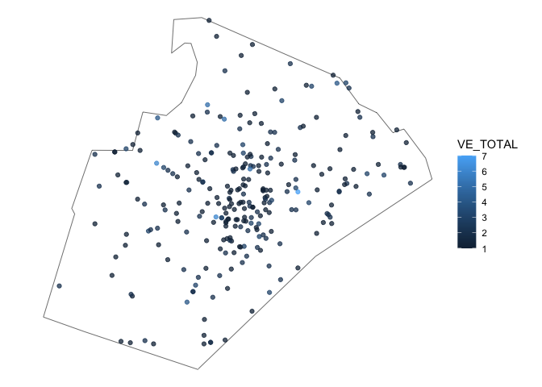
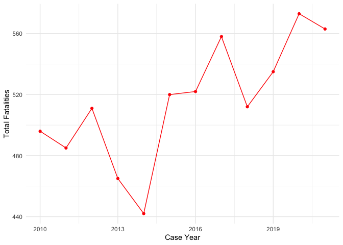

The goal of the crashapi R package is to provide functions for downloading data from the National Highway Traffic Safety Administration (NHTSA) Fatality Analysis Reporting System (FARS) API.
What is FARS? NHTSA explains: “The Fatality Analysis Reporting System (FARS) contains data on all vehicle crashes in the United States that occur on a public roadway and involve a fatality.”
Installation
You can install the development version of crashapi using the pak package:
pak::pkg_install("elipousson/crashapi")Background
Fatality Analysis Reporting System (FARS) API support
Supported APIs for this package include:
Most of these APIs support XML, JSV, CSV, and JSON output formats. This package only uses JSON with the exception of get_fars_year() (which supports downloading CSV files).
For reference, this package also includes a list of terms and NHTSA technical definitions in fars_terms and a list of variable labels in fars_vars_labels.
The FARS API currently provides access to data from 2010 to 2024. The NHTSA website also provides additional information on the release data and version status for the FARS data files available through the API:
| Data Year | File Version | Release Date |
|---|---|---|
| 2010 | Final | December 11, 2012 |
| 2011 | Final | November 13, 2013 |
| 2012 | Final | December 12, 2013 |
| 2013 | Final | December 14, 2014 |
| 2014 | Final | December 18, 2015 |
| 2015 | Final | December 16, 2016 |
| 2016 | Final | December 14, 2017 |
| 2017 | Final | December 18, 2018 |
| 2018 | Final | June 24, 2021 |
| 2019 | Final | March 2, 2022 |
| 2020 | Final | April 3, 2023 |
| 2021 | Final | April 1, 2024 |
| 2022 | Final | April 8, 2025 |
| 2023 | Final | April 1, 2026 |
| 2024 | Annual | April 1, 2026 |
Changes to the sex variable
According to the Data Index terminations tracker, in February 2025 NHTSA renamed the person-level gender variable to “Sex” and recoded its third response value to “Not Reported”, removing the non-binary category from published FARS data files. The FARS 2022 release notes confirm that on February 11, 2025, NHTSA replaced attribute 3 with attribute 8 (Not Reported), updating 22 records in the PERSON table and 1 record in the PBTYPE table. See OMB ICR 202503-2127-008 and the Williams Institute report Removal of SOGI from Federal Data Collections (Feb 2026) for more information.
Data now returned by the CrashAPI codes SEX as 1 (Male), 2 (Female), 8 (Not Reported), or 9 (Reported as Unknown) for all years, so people previously recorded as non-binary now appear as “Not Reported”.
Additional data access functionality
The get_fars_zip() function can be used to access FARS data files from 1975 to 2024 that are not available via the API but are available for download through the NHTSA File Downloads site as zipped CSV or SAS files. Zipped CSV files are converted to parquet files and cached in the user cache directory (see tools::R_user_dir()) so the data only needs to be downloaded once. This site also provides extensive technical documentation on coding and use of the FARS data files.
The get_crss_zip() function works the same way for data files from the Crash Report Sampling System (CRSS) from 2016 to 2024. CRSS is a national sample of police-reported crashes of all severities (not only fatal crashes) that replaced the General Estimates System (GES) in 2016. Since CRSS is a sample, national estimates should use the sampling weights and survey design variables described in the CRSS Analytical User’s Manual, and the data does not include crash locations.
Earlier data along with data from the General Estimates System (GES) / Crash Report Sampling System (CRSS) is also available through the Fatality and Injury Reporting System Tool (FIRST).
Examples
Use get_fars() to get a FARS data table (e.g. accident, person, or vehicle) for one or more states, a county, and one or more years. Data for a state from 2010 onwards comes from the CrashAPI and national data or data before 2010 comes from the cached zipped data files.
# Get the person table for Baltimore City, MD for 2022
md_people <-
get_fars(
state = "MD",
county = "Baltimore city",
year = 2022,
type = "person"
)
head(md_people[, c("ST_CASE", "VEH_NO", "PER_NO", "AGE", "SEXNAME", "INJ_SEVNAME")])
#> ST_CASE VEH_NO PER_NO AGE SEXNAME INJ_SEVNAME
#> 133 240061 0 1 58 Male Fatal Injury (K)
#> 134 240061 1 1 32 Male No Apparent Injury (O)
#> 163 240071 0 1 57 Male Fatal Injury (K)
#> 164 240071 1 1 37 Female No Apparent Injury (O)
#> 165 240072 0 1 55 Male Fatal Injury (K)
#> 166 240072 1 1 30 Male No Apparent Injury (O)You can set geometry to TRUE to convert the accident table into an sf object for mapping.
crashes_sf <-
get_fars(
state = "NC",
county = "Wake County",
year = 2018:2021,
geometry = TRUE
)
#> ℹ Requesting data for all years from 2018 to 2021, including 2019 and 2020 not
#> in `year`.
nc <- sf::st_read(system.file("shape/nc.shp", package = "sf"))
#> Reading layer `nc' from data source
#> `/Users/elipousson/Library/R/arm64/4.6/library/sf/shape/nc.shp'
#> using driver `ESRI Shapefile'
#> Simple feature collection with 100 features and 14 fields
#> Geometry type: MULTIPOLYGON
#> Dimension: XY
#> Bounding box: xmin: -84.32385 ymin: 33.88199 xmax: -75.45698 ymax: 36.58965
#> Geodetic CRS: NAD27
wake_co <- sf::st_transform(nc[nc$NAME == "Wake", ], 4326)
# Map crashes
ggplot() +
geom_sf(
data = wake_co,
fill = NA,
color = "black"
) +
geom_sf(
data = sf::st_crop(crashes_sf, wake_co),
aes(color = VE_TOTAL),
alpha = 0.75
) +
theme_void()
#> Warning in st_is_longlat(x): bounding box has potentially an invalid value
#> range for longlat data
#> Warning in st_is_longlat(x): bounding box has potentially an invalid value
#> range for longlat data
#> Warning: attribute variables are assumed to be spatially constant throughout
#> all geometries
National data or data before 2010 is downloaded and cached the first time it is used:
# Get the national vehicle table for 2024
get_fars(year = 2024, type = "vehicle")
# Get the accident table for Maryland for 2005
get_fars(state = "MD", year = 2005)The CrashAPI and FARS zipped CSV files from 2015 onwards include …NAME columns with decoded values for coded variables. For older FARS data, get_fars() adds these columns using decode_fars(), which can also decode CRSS data from get_crss_zip() (using source = "CRSS"). Both use value labels from fars_value_labels(), which are built from the SAS format files NHTSA publishes with each year of data. Value labels can change between years:
inj_sev <- fars_value_labels(
year = c(1985, 2024),
table = "person",
variable = "INJ_SEV"
)
inj_sev[, c("year", "code", "value")]
#> year code value
#> 1 1985 0 No
#> 2 1985 1 Possible
#> 3 1985 2 Non Incapacity
#> 4 1985 3 Incapacitating
#> 5 1985 4 Fatal Injury
#> 6 1985 5 Inj, Sev Unk
#> 7 1985 6 Died Prior to Accident
#> 8 1985 7 Died Prior to Accident
#> 9 1985 9 Unknown
#> 10 2024 00 No Apparent Injury (O)
#> 11 2024 01 Possible Injury (C)
#> 12 2024 02 Suspected Minor Injury (B)
#> 13 2024 03 Suspected Serious Injury (A)
#> 14 2024 04 Fatal Injury (K)
#> 15 2024 05 Injured, Severity Unknown
#> 16 2024 06 Died Prior to Crash*
#> 17 2024 09 Unknown/Not ReportedCRSS data files can be downloaded and cached with get_crss_zip():
# Get all CRSS tables for 2024
crss_2024 <- get_crss_zip(year = 2024)
# Estimate the number of police-reported crashes using the sampling weight
sum(crss_2024$accident$WEIGHT)Other CrashAPI endpoints are available through specific functions. For example, you can use get_fars_summary() to access state-level summary data on crash and fatality counts.
# Get summary crash count and fatality count data for Maryland from 2010 to 2021
md_summary <- get_fars_summary(state = "MD", year = 2010:2021)
ggplot(md_summary, aes(x = CaseYear, y = TotalFatalCounts)) +
geom_point(color = "red") +
geom_line(color = "red", group = 1) +
theme_minimal()
You can list crashes and filter by the number of vehicles involved with get_fars_crash_list().
# Get fatal crashes in New York state from 2019 with 5 to 10 vehicles
get_fars_crash_list(state = "NY", year = 2019, vehicles = c(5, 10))
#> CountyName CrashDate Fatals Peds Persons St_Case State
#> 1 BRONX (5) /Date(1549865820000-0500)/ 2 1 7 360042 36
#> 2 ERIE (29) /Date(1551915000000-0500)/ 1 0 4 360159 36
#> 3 QUEENS (81) /Date(1561656240000-0400)/ 1 0 6 360319 36
#> 4 BRONX (5) /Date(1561866000000-0400)/ 1 0 11 360339 36
#> 5 KINGS (47) /Date(1564564080000-0400)/ 1 0 5 360440 36
#> 6 SUFFOLK (103) /Date(1563792360000-0400)/ 1 0 2 360551 36
#> 7 ORANGE (71) /Date(1558274040000-0400)/ 1 0 1 360277 36
#> StateName TotalVehicles
#> 1 New York 5
#> 2 New York 5
#> 3 New York 5
#> 4 New York 5
#> 5 New York 5
#> 6 New York 6
#> 7 New York 6If you call get_fars_crashes() with details set to TRUE, additional information from get_fars_cases() (including the crash date and time) is appended to the crash data frame.
# Get fatal crashes for Anne Arundel County, MD for 2019 and append details
crashes_detailed <-
get_fars_crashes(
state = "MD",
county = "Anne Arundel County",
year = 2019,
details = TRUE
)
#> ■■■■■ 15% | ETA: 13s
#> ■■■■■■■■■■■■■■■■■■ 57% | ETA: 6s
#> ■■■■■■■■■■■■■■■■■■■■■■■■■ 80% | ETA: 3s
# Show 10 fatal crashes at random
dplyr::slice_sample(crashes_detailed, n = 10)
#> CaseYear TOTALVEHICLES STATE STATENAME ST_CASE date time
#> 1 2019 1 24 Maryland 240373 2019-11-10 18:10
#> 2 2019 1 24 Maryland 240048 2019-02-20 18:25
#> 3 2019 2 24 Maryland 240294 2019-09-14 15:46
#> 4 2019 2 24 Maryland 240149 2019-06-02 13:07
#> 5 2019 1 24 Maryland 240236 2019-07-30 17:54
#> 6 2019 2 24 Maryland 240169 2019-06-14 22:30
#> 7 2019 1 24 Maryland 240318 2019-09-20 19:16
#> 8 2019 2 24 Maryland 240123 2019-05-10 07:53
#> 9 2019 3 24 Maryland 240427 2019-11-21 10:04
#> 10 2019 2 24 Maryland 240046 2019-02-16 11:43
#> datetime PEDS PERNOTMVIT VE_TOTAL VE_FORMS PVH_INVL
#> 1 2019-11-10 18:10:00 1 1 1 1 0
#> 2 2019-02-20 18:25:00 1 1 1 1 0
#> 3 2019-09-14 15:46:00 0 2 2 1 1
#> 4 2019-06-02 13:07:00 0 0 2 2 0
#> 5 2019-07-30 17:54:00 0 0 1 1 0
#> 6 2019-06-14 22:30:00 0 0 2 2 0
#> 7 2019-09-20 19:16:00 0 0 1 1 0
#> 8 2019-05-10 07:53:00 0 0 2 2 0
#> 9 2019-11-21 10:04:00 0 0 3 3 0
#> 10 2019-02-16 11:43:00 0 0 2 2 0
#> NPersons
#> 1 50, 50 Years, 97, Not a Motor Vehicle Occupant, 9, Not Reported, 130, 0.130 % BAC, 2, Test Given, 1, Blood, NA, NA, NA, 3, ANNE ARUNDEL (3), 2019, 10, 10, 10, 10, 18, 18:00-18:59, 25, 25, 11, November, 1825, 1825, 2019, 2019, NA, NA, NA, NA, 7, Died at Scene, 1, Yes (Alcohol Involved), NA, NA, NA, NA, NA, NA, 8, Not Reported, NA, NA, NA, NA, NA, NA, 8, Not Reported, 2, Test Given, 8, Not Applicable, 0, Ejection Path Not Applicable, NA, NA, 0, Not Extricated or Not Applicable, NA, NA, 3, Principal Arterial - Other, NA, NA, NA, NA, 8, Pedestrian, 8, Not a Motor Vehicle Occupant, 96, Not a Motor Vehicle Occupant, 7, Non-Hispanic, 0, Not Transported, 18, 6:00pm-6:59pm, NA, NA, NA, NA, NA, NA, 4, Fatal Injury (K), 0, 0, 15, 15, 11, Not at Intersection - On Roadway, Not in Marked Crosswalk, NA, NA, NA, NA, 0, The First Harmful Event was Not a Collision with a Motor Vehicle in Transport, 10, 10, NA, NA, 11, November, NA, NA, 1, 5, Pedestrian, 0, None, 0, None, 0, None, NA, NA, NA, 8, Not a Motor Vehicle Occupant, 96, Not a Motor Vehicle Occupant, NA, NA, NA, NA, 2, Urban, NA, 0, No, 0, Not a Motor Vehicle Occupant, 1, Male, NA, NA, 24, Maryland, 1, NA, 240373, NA, NA, 0, 1, NA, NA, NA, NA, NA, NA, 0, No
#> 2 26, 26 Years, 97, Not a Motor Vehicle Occupant, 9, Not Reported, 0, 0.000 % BAC, 2, Test Given, 1, Blood, NA, NA, NA, 3, ANNE ARUNDEL (3), 2019, 20, 20, 20, 20, 18, 18:00-18:59, 43, 43, 2, February, 1843, 1843, 2019, 2019, NA, NA, NA, NA, 7, Died at Scene, 9, Reported as Unknown, NA, NA, NA, NA, NA, NA, 9, Reported as Unknown, NA, NA, NA, NA, NA, NA, 8, Not Reported, 2, Test Given, 8, Not Applicable, 0, Ejection Path Not Applicable, NA, NA, 0, Not Extricated or Not Applicable, NA, NA, 5, Major Collector, NA, NA, NA, NA, 8, Pedestrian, 8, Not a Motor Vehicle Occupant, 96, Not a Motor Vehicle Occupant, 7, Non-Hispanic, 0, Not Transported, 18, 6:00pm-6:59pm, NA, NA, NA, NA, NA, NA, 4, Fatal Injury (K), 0, 0, 18, 18, 11, Not at Intersection - On Roadway, Not in Marked Crosswalk, NA, NA, NA, NA, 0, The First Harmful Event was Not a Collision with a Motor Vehicle in Transport, 25, 25, NA, NA, 2, February, NA, NA, 1, 5, Pedestrian, 0, None, 0, None, 0, None, NA, NA, NA, 8, Not a Motor Vehicle Occupant, 96, Not a Motor Vehicle Occupant, NA, NA, NA, NA, 2, Urban, NA, 0, No, 0, Not a Motor Vehicle Occupant, 1, Male, NA, NA, 24, Maryland, 1, NA, 240048, NA, NA, 0, 1, NA, NA, NA, NA, NA, NA, 0, No
#> 3 NULL
#> 4 NULL
#> 5 NULL
#> 6 NULL
#> 7 NULL
#> 8 NULL
#> 9 NULL
#> 10 NULL
#> PERSONS PERMVIT COUNTY COUNTYNAME CITY CITYNAME MONTH MonthName
#> 1 1 1 3 ANNE ARUNDEL (3) 0 NOT APPLICABLE 11 November
#> 2 2 2 3 ANNE ARUNDEL (3) 0 NOT APPLICABLE 2 February
#> 3 3 1 3 ANNE ARUNDEL (3) 0 NOT APPLICABLE 9 September
#> 4 3 3 3 ANNE ARUNDEL (3) 0 NOT APPLICABLE 6 June
#> 5 1 1 3 ANNE ARUNDEL (3) 0 NOT APPLICABLE 7 July
#> 6 3 3 3 ANNE ARUNDEL (3) 0 NOT APPLICABLE 6 June
#> 7 1 1 3 ANNE ARUNDEL (3) 584 FRIENDSHIP 9 September
#> 8 3 3 3 ANNE ARUNDEL (3) 0 NOT APPLICABLE 5 May
#> 9 6 6 3 ANNE ARUNDEL (3) 0 NOT APPLICABLE 11 November
#> 10 3 3 3 ANNE ARUNDEL (3) 0 NOT APPLICABLE 2 February
#> DAY DAY_WEEK DAY_WEEKNAME YEAR HOUR HOURNAME MINUTE MINUTENAME
#> 1 10 1 Sunday 2019 18 6:00pm-6:59pm 10 10
#> 2 20 4 Wednesday 2019 18 6:00pm-6:59pm 25 25
#> 3 14 7 Saturday 2019 15 3:00pm-3:59pm 46 46
#> 4 2 1 Sunday 2019 13 1:00pm-1:59pm 7 7
#> 5 30 3 Tuesday 2019 17 5:00pm-5:59pm 54 54
#> 6 14 6 Friday 2019 22 10:00pm-10:59pm 30 30
#> 7 20 6 Friday 2019 19 7:00pm-7:59pm 16 16
#> 8 10 6 Friday 2019 7 7:00am-7:59am 53 53
#> 9 21 5 Thursday 2019 10 10:00am-10:59am 4 4
#> 10 16 7 Saturday 2019 11 11:00am-11:59am 43 43
#> TWAY_ID TWAY_ID2 ROUTE ROUTENAME RUR_URB
#> 1 SR-2 <NA> 3 State Highway 2
#> 2 CR-2633 <NA> 4 County Road 2
#> 3 SR-295 <NA> 3 State Highway 2
#> 4 SR-10 <NA> 3 State Highway 2
#> 5 CR-10 <NA> 4 County Road 2
#> 6 SR-295 <NA> 3 State Highway 2
#> 7 SR-2 SOLOMONS ISLAND RD SR-261 W FRIENDSHIP RD 3 State Highway 1
#> 8 SR-468 <NA> 3 State Highway 2
#> 9 SR-648E CR-199 3 State Highway 2
#> 10 SR-100 <NA> 3 State Highway 2
#> RUR_URBNAME FUNC_SYS FUNC_SYSNAME
#> 1 Urban 3 Principal Arterial - Other
#> 2 Urban 5 Major Collector
#> 3 Urban 4 Minor Arterial
#> 4 Urban 2 Principal Arterial - Other Freeways and Expressways
#> 5 Urban 5 Major Collector
#> 6 Urban 7 Local
#> 7 Rural 3 Principal Arterial - Other
#> 8 Urban 5 Major Collector
#> 9 Urban 4 Minor Arterial
#> 10 Urban 7 Local
#> RD_OWNER RD_OWNERNAME NHS NHSNAME SP_JUR
#> 1 1 State Highway Agency 0 This section IS NOT on the NHS 0
#> 2 2 County Highway Agency 0 This section IS NOT on the NHS 0
#> 3 1 State Highway Agency 0 This section IS NOT on the NHS 0
#> 4 1 State Highway Agency 0 This section IS NOT on the NHS 0
#> 5 2 County Highway Agency 0 This section IS NOT on the NHS 0
#> 6 1 State Highway Agency 0 This section IS NOT on the NHS 0
#> 7 1 State Highway Agency 1 This section IS ON the NHS 0
#> 8 1 State Highway Agency 0 This section IS NOT on the NHS 0
#> 9 1 State Highway Agency 0 This section IS NOT on the NHS 0
#> 10 1 State Highway Agency 0 This section IS NOT on the NHS 0
#> SP_JURNAME MILEPT MILEPTNAME LATITUDE LATITUDENAME LONGITUD
#> 1 No Special Jurisdiction 275 275 39.05691 39.05690556 -76.52705
#> 2 No Special Jurisdiction 12 12 39.02737 39.02736667 -76.70853
#> 3 No Special Jurisdiction 119 119 39.20473 39.20472500 -76.69075
#> 4 No Special Jurisdiction 50 50 39.17210 39.17210278 -76.60841
#> 5 No Special Jurisdiction 3 3 39.19875 39.19875000 -76.67271
#> 6 No Special Jurisdiction 9 9 39.17068 39.17067778 -76.73092
#> 7 No Special Jurisdiction 12 12 38.73677 38.73677222 -76.59366
#> 8 No Special Jurisdiction 36 36 38.81520 38.81519722 -76.55408
#> 9 No Special Jurisdiction 46 46 39.18040 39.18040278 -76.63888
#> 10 No Special Jurisdiction 70 70 39.15161 39.15160833 -76.63751
#> LONGITUDNAME HARM_EV HARM_EVNAME MAN_COLL
#> 1 -76.527052780 8 Pedestrian 0
#> 2 -76.708527780 8 Pedestrian 0
#> 3 -76.690747220 14 Parked Motor Vehicle 0
#> 4 -76.608405560 12 Motor Vehicle In-Transport 6
#> 5 -76.672713890 42 Tree (Standing Only) 0
#> 6 -76.730925000 12 Motor Vehicle In-Transport 6
#> 7 -76.593663890 33 Curb 0
#> 8 -76.554083330 12 Motor Vehicle In-Transport 2
#> 9 -76.638880560 12 Motor Vehicle In-Transport 6
#> 10 -76.637511110 24 Guardrail Face 0
#> MAN_COLLNAME
#> 1 The First Harmful Event was Not a Collision with a Motor Vehicle in Transport
#> 2 The First Harmful Event was Not a Collision with a Motor Vehicle in Transport
#> 3 The First Harmful Event was Not a Collision with a Motor Vehicle in Transport
#> 4 Angle
#> 5 The First Harmful Event was Not a Collision with a Motor Vehicle in Transport
#> 6 Angle
#> 7 The First Harmful Event was Not a Collision with a Motor Vehicle in Transport
#> 8 Front-to-Front
#> 9 Angle
#> 10 The First Harmful Event was Not a Collision with a Motor Vehicle in Transport
#> RELJCT1 RELJCT1NAME RELJCT2 RELJCT2NAME TYP_INT
#> 1 0 No 1 Non-Junction 1
#> 2 0 No 1 Non-Junction 1
#> 3 1 Yes 19 Other location within Interchange Area 1
#> 4 0 No 1 Non-Junction 1
#> 5 0 No 1 Non-Junction 1
#> 6 0 No 5 Entrance/Exit Ramp Related 1
#> 7 0 No 3 Intersection-Related 6
#> 8 0 No 1 Non-Junction 1
#> 9 0 No 2 Intersection 3
#> 10 0 No 1 Non-Junction 1
#> TYP_INTNAME REL_ROAD REL_ROADNAME WRK_ZONE WRK_ZONENAME LGT_COND
#> 1 Not an Intersection 1 On Roadway 0 None 2
#> 2 Not an Intersection 1 On Roadway 0 None 2
#> 3 Not an Intersection 8 Gore 0 None 1
#> 4 Not an Intersection 1 On Roadway 0 None 1
#> 5 Not an Intersection 4 On Roadside 0 None 1
#> 6 Not an Intersection 1 On Roadway 0 None 3
#> 7 Roundabout 4 On Roadside 0 None 3
#> 8 Not an Intersection 1 On Roadway 0 None 1
#> 9 T-Intersection 1 On Roadway 0 None 1
#> 10 Not an Intersection 4 On Roadside 0 None 1
#> LGT_CONDNAME WEATHER WEATHERNAME WEATHER1 WEATHER1NAME WEATHER2
#> 1 Dark - Not Lighted 1 Clear 1 Clear 0
#> 2 Dark - Not Lighted 4 Snow 4 Snow 0
#> 3 Daylight 10 Cloudy 10 Cloudy 0
#> 4 Daylight 1 Clear 1 Clear 0
#> 5 Daylight 1 Clear 1 Clear 0
#> 6 Dark - Lighted 1 Clear 1 Clear 0
#> 7 Dark - Lighted 1 Clear 1 Clear 0
#> 8 Daylight 1 Clear 1 Clear 0
#> 9 Daylight 1 Clear 1 Clear 0
#> 10 Daylight 1 Clear 1 Clear 0
#> WEATHER2NAME SCH_BUS SCH_BUSNAME RAIL
#> 1 No Additional Atmospheric Conditions 0 No 0000000
#> 2 No Additional Atmospheric Conditions 0 No 0000000
#> 3 No Additional Atmospheric Conditions 0 No 0000000
#> 4 No Additional Atmospheric Conditions 0 No 0000000
#> 5 No Additional Atmospheric Conditions 0 No 0000000
#> 6 No Additional Atmospheric Conditions 0 No 0000000
#> 7 No Additional Atmospheric Conditions 0 No 0000000
#> 8 No Additional Atmospheric Conditions 0 No 0000000
#> 9 No Additional Atmospheric Conditions 0 No 0000000
#> 10 No Additional Atmospheric Conditions 0 No 0000000
#> RAILNAME NOT_HOUR NOT_HOURNAME NOT_MIN NOT_MINNAME ARR_HOUR
#> 1 Not Applicable 99 Unknown 99 Unknown 99
#> 2 Not Applicable 99 Unknown 99 Unknown 99
#> 3 Not Applicable 99 Unknown 99 Unknown 99
#> 4 Not Applicable 99 Unknown 99 Unknown 99
#> 5 Not Applicable 99 Unknown 99 Unknown 99
#> 6 Not Applicable 99 Unknown 99 Unknown 99
#> 7 Not Applicable 99 Unknown 99 Unknown 99
#> 8 Not Applicable 99 Unknown 99 Unknown 99
#> 9 Not Applicable 99 Unknown 99 Unknown 99
#> 10 Not Applicable 99 Unknown 99 Unknown 99
#> ARR_HOURNAME ARR_MIN ARR_MINNAME
#> 1 Unknown EMS Scene Arrival Hour 99 Unknown EMS Scene Arrival Minutes
#> 2 Unknown EMS Scene Arrival Hour 99 Unknown EMS Scene Arrival Minutes
#> 3 Unknown EMS Scene Arrival Hour 99 Unknown EMS Scene Arrival Minutes
#> 4 Unknown EMS Scene Arrival Hour 99 Unknown EMS Scene Arrival Minutes
#> 5 Unknown EMS Scene Arrival Hour 99 Unknown EMS Scene Arrival Minutes
#> 6 Unknown EMS Scene Arrival Hour 99 Unknown EMS Scene Arrival Minutes
#> 7 Unknown EMS Scene Arrival Hour 99 Unknown EMS Scene Arrival Minutes
#> 8 Unknown EMS Scene Arrival Hour 99 Unknown EMS Scene Arrival Minutes
#> 9 Unknown EMS Scene Arrival Hour 99 Unknown EMS Scene Arrival Minutes
#> 10 Unknown EMS Scene Arrival Hour 99 Unknown EMS Scene Arrival Minutes
#> HOSP_HR HOSP_HRNAME HOSP_MN
#> 1 88 Not Applicable (Not Transported) 88
#> 2 88 Not Applicable (Not Transported) 88
#> 3 99 Unknown 99
#> 4 99 Unknown 99
#> 5 99 Unknown 99
#> 6 88 Not Applicable (Not Transported) 88
#> 7 99 Unknown 99
#> 8 99 Unknown 99
#> 9 99 Unknown 99
#> 10 99 Unknown 99
#> HOSP_MNNAME CF1 CF1NAME CF2 CF2NAME CF3 CF3NAME FATALS
#> 1 Not Applicable (Not Transported) 0 None 0 None 0 None 1
#> 2 Not Applicable (Not Transported) 0 None 0 None 0 None 1
#> 3 Unknown EMS Hospital Arrival Time 0 None 0 None 0 None 1
#> 4 Unknown EMS Hospital Arrival Time 0 None 0 None 0 None 1
#> 5 Unknown EMS Hospital Arrival Time 0 None 0 None 0 None 1
#> 6 Not Applicable (Not Transported) 0 None 0 None 0 None 2
#> 7 Unknown EMS Hospital Arrival Time 0 None 0 None 0 None 1
#> 8 Unknown EMS Hospital Arrival Time 0 None 0 None 0 None 1
#> 9 Unknown EMS Hospital Arrival Time 0 None 0 None 0 None 1
#> 10 Unknown EMS Hospital Arrival Time 0 None 0 None 0 None 1
#> DRUNK_DR ROAD_FNC ROAD_FNCNAME
#> 1 0 NA NA
#> 2 0 NA NA
#> 3 1 NA NA
#> 4 0 NA NA
#> 5 0 NA NA
#> 6 0 NA NA
#> 7 0 NA NA
#> 8 0 NA NA
#> 9 0 NA NA
#> 10 0 NA NA
#> Vehicles
#> 1 NA, NA, 13, C13-Single Driver-Forward Impact-Pedestrian/ Animal, NA, NA, NA, NA, NA, NA, 4, 4-door sedan, hardtop, 0, Not a Bus, 0, Not Applicable (N/A), 0, No (CDL), 2019, NA, 10, 10, 0, 2, Minor Damage, 0, No, 60, 1, Yes, 0, None, 0, None, 0, None, 0, None, 97, 97 lbs., 21012, 21012, 2019, 2019, 12, 13, 12 Clock Value, Top, 12, 13, 12 Clock Value, Top, 24, 24, Maryland, Maryland, 240373, 240373, 1, 1, 2019, 99, Reported as Unknown if Distracted, 99, Reported as Unknown if Distracted, 24, Maryland, 240373, 1, 2019, 0, None/Apparently Normal, 24, Maryland, 240373, 1, 0, Not Applicable, 0, No or Not Reported, 0, No Record, 0, No Record, 2019, 0, None, 24, Maryland, 240373, 0, None, 1, 0, Not Applicable, NA, NA, NA, NA, 8, Pedestrian, 0, Not Applicable, 0, Not Applicable, 1, No, 0, Not Applicable, 0, Not Applicable, 0, No, 18, 6:00pm-6:59pm, NA, NA, 12, 12 Clock Point, NA, NA, 0, Not an Articulated Vehicle, 0, No Record, 0, No Record, 3, Valid license for this class vehicle, 0, No Endorsements required for this vehicle, 0, No Restrictions or Not Applicable, 24, Maryland, 6, Valid, 1, Full Driver License, 30, Volkswagen, 30040, Volkswagen Jetta/Jetta SportsWagen, 0, The First Harmful Event was Not a Collision with a Motor Vehicle in Transport, 0, Not Applicable, 0, Not Applicable, 0, Not Applicable, 10, 10, 40, Jetta/Jetta SportsWagen, 2011, 2011, 11, 8, Pedestrian, 2019, 98, Not Reported, 98, Not Reported, 24, Maryland, 240373, 1, November, NA, NA, NA, NA, NA, NA, 1, 1, 2, Driver (in this crash) Not Registered Owner (Other Private Owner Listed), Tracking, 1, Stayed in original travel lane, 0, None, 0, None, 0, None, 0, None, NA, 0, None, 0, None, 0, None, NA, 15, Changing Lanes, 80, Pedestrian in road, 99, Unknown/Not Reported, NA, 21, 21 Years, 20, Not Deployed, 9, Not Reported, 996, Test Not Given, 0, Test Not Given, 0, Test Not Given, 4, 4-door sedan, hardtop, NA, 3, ANNE ARUNDEL (3), 2019, 10, 10, 88, Not Applicable (Non-Fatal), 88, Not Applicable (Non-fatal), 88, Not Applicable (Non-fatal), 88, Not Applicable (Non-Fatal), 8888, Not Applicable (Non-fatal), 8888, Not Applicable (Non-fatal), NA, NA, NA, NA, 0, Not Applicable, 0, No (Alcohol Not Involved), NA, NA, NA, NA, NA, NA, 0, No (drugs not involved), NA, NA, NA, NA, NA, NA, 8, Not Reported, 0, Test Not Given, 0, Not Ejected, 0, Ejection Path Not Applicable, 0, Not Applicable, 0, Not Extricated or Not Applicable, 0, No or Not Reported, 3, Principal Arterial - Other, NA, NA, NA, NA, 8, Pedestrian, 7, None Used/Not Applicable, 20, Not Applicable, 0, Not A Fatality (not Applicable), 0, Not Transported, 18, 6:00pm-6:59pm, NA, NA, 12, 12 Clock Point, NA, NA, 0, No Apparent Injury (O), 999, Unknown, 99, Unknown, 0, Occupant of a Motor Vehicle, 30, Volkswagen, NA, Volkswagen Jetta/Jetta SportsWagen, 0, The First Harmful Event was Not a Collision with a Motor Vehicle in Transport, 10, 10, 2011, 2011, 11, November, NA, 2019, -1.000, NA, -1, NA, -1, NA, 0, Test Not Given, 0, Test Not Given, -1, NA, 1, 24, MD, Maryland, 240373, 1, 1, 1, Driver of a Motor Vehicle In-Transport, 0, None, 0, None, 0, None, NA, NA, 0, No Indication of Mis-Use, 3, Shoulder and Lap Belt Used, NA, NA, 0, No Rollover, 2, Urban, 2019, 0, No, 1, 1, 0, Not a Fatality (not Applicable), 24, MD, Maryland, 240373, 1, 0, No, 11, Front Seat, Left Side, 2, Female, 0, No Special Use, 24, Maryland, 0, NA, 240373, 0, No Trailing Units, 1, 1, NA, NA, NA, NA, NA, NA, 8, Not Applicable (not a fatality), 24, Maryland, 0, No Rollover, 0, No Rollover, 0, No Special Use, 0, No, 24, Maryland, 240373, 3, Towed Not Due to Disabling Damage, 0, No Trailing Units, 998, Not Reported, NA, NA, No Trailing Units, NA, NA, No Trailing Units, NA, NA, No Trailing Units, 0, No Underride or Override Noted, NA, NA, 1, Motor Vehicle In-Transport (Inside or Outside the Trafficway), 1, Straight, 1, 0, None, 0, None, 1, 12, 12 Clock Point, 77, Not a Motor Vehicle, 2019, 1, 8, Pedestrian, 24, Maryland, 240373, 1, 1, 1, 9999, 3VWDZ7AJ9BM3, 3VWDZ7AJ9BM3, 3, B, M, 3, V, W, D, Z, 7, A, J, 9, 3, Three lanes, 2, Blacktop, Bituminous, or Asphalt, NA, NA, NA, NA, NA, NA, 1, Level, 50, 50 MPH, 1, Dry, 0, No Controls, 0, No Controls, 2, Two-Way, Divided, Unprotected Median, 0, Not Applicable, 2, All Wheel Std, NA, NA, NA, NA, In-Line, SD, Sedan, NA, F, Fuel Injection, 2019, NA, 5, 2.5, 0, 151, 4, FWD, Front Wheel Drive, 2, N, Not Available, DOHC, Double Overhead Camshaft, NA, NA, NA, NA, G, NA, NA, Gas, NA, NA, N, NA, NA, C176, Volkswagen, 19095, VOLK, B, Import Built in North America, M, PUEBLA, MEX, Mexico, NA, NA, NA, NA, NA, NA, L, Dual Air Bags Front Head and Sides/Active Belts, NA, NA, B, Immobilizer / keyless entry / and alarm, F, Non Luxury Traditional Compact, 3082, 24, Maryland, NA, 240373, N, No, NA, NA, NA, NA, NA, NA, NA, NA, NA, NA, NA, NA, NA, NA, NA, NA, NA, N, No, P, Passenger Car, 1, VOLKSWAGEN, JETTA, NA, NA, NA, NA, SE, 2011, 4, 20, 4, NA, NA, NA, NA, NA, NA, NA, 1st Row (Driver and Passenger), 3, 1st Row (Driver and Passenger), 3, NA, NA, NA, NA, 1st Row (Driver and Passenger), 3, NA, NA, NA, NA, NA, NA, NA, NA, NA, NA, NA, NA, NA, NA, NA, NA, NA, NA, NA, NA, NA, NA, NA, NA, NA, NA, NA, NA, NA, Sedan/Saloon, 13, NA, NA, NA, Not Applicable, 0, NA, Not Applicable, 0, 2019, NA, NA, NA, NA, NA, NA, Not Applicable, 0, NA, NA, NA, NA, 2480.000, 151.34, 2.480000, 4, NA, NA, NA, NA, NA, NA, NA, NA, 170.0000, NA, NA, NA, NA, NA, 5, NA, NA, Volkswagen, NA, 126.770, NA, NA, NA, NA, NA, NA, NA, NA, NA, NA, NA, NA, NA, Gasoline, 4, NA, NA, NA, NA, NA, NA, NA, NA, NA, NA, NA, NA, NA, NA, NA, NA, NA, NA, NA, NA, VOLKSWAGEN, 482, VOLKSWAGEN GROUP OF AMERICA, INC., 1147, Jetta, 3137, 2011, Not Applicable, 0, Not Applicable, 0, NA, NA, NA, NA, NA, 50-St. BIN 3/PZEV emission. Emissions Certification Test Group: BVWXV02.5259, NA, Active Seat Belt Advanced Front Air Bags., NA, NA, NA, NA, PUEBLA, NA, MEXICO, 12, NA, NA, NA, NA, NA, NA, NA, NA, NA, 24, 240373, Manual, 1, NA, NA, NA, NA, SE, , NA, NA, Indirect, 2, NA, NA, NA, NA, NA, Automatic, 2, , , NA, Not Applicable, 0, Not Applicable, 0, 1, 0, 8/20/2021 1:47:43 PM, 3VWDZ7AJ*BM******, PASSENGER CAR, 2, NA, NA, NA, NA, NA, NA, NA, NA, 2019, 0, None, 24, Maryland, 240373, 1, -1, NA, 2019, 0, No Obstruction Noted, 24, Maryland, 240373, 1, -1, NA, 12, 12 Clock Point, 2019, 8, Pedestrian, 24, Maryland, 240373, 1, 1
#> 2 NA, NA, 13, C13-Single Driver-Forward Impact-Pedestrian/ Animal, NA, NA, NA, NA, NA, NA, 20, Minivan (Chrysler Town and Country, Caravan, Grand Caravan, Voyager, Voyager, Honda-Odyssey, ...), 0, Not a Bus, 0, Not Applicable (N/A), 0, No (CDL), 2019, NA, 20, 20, 0, 4, Functional Damage, 0, No, 66, 1, Yes, 0, None, 0, None, 0, None, 0, None, 185, 185 lbs., 21401, 21401, 2019, 12, 12 Clock Value, 12, 12 Clock Value, 24, Maryland, 240048, 1, 2019, 99, Reported as Unknown if Distracted, 99, Reported as Unknown if Distracted, 24, Maryland, 240048, 1, 2019, 96, Other Physical Impairment, 24, Maryland, 240048, 1, 0, Not Applicable, 0, No or Not Reported, 0, No Record, 0, No Record, 2019, 0, None, 24, Maryland, 240048, 0, None, 1, 0, Not Applicable, NA, NA, NA, NA, 8, Pedestrian, 0, Not Applicable, 0, Not Applicable, 1, No, 0, Not Applicable, 0, Not Applicable, 0, No, 18, 6:00pm-6:59pm, NA, NA, 12, 12 Clock Point, NA, NA, 0, Not an Articulated Vehicle, 0, No Record, 0, No Record, 3, Valid license for this class vehicle, 0, No Endorsements required for this vehicle, 0, No Restrictions or Not Applicable, 24, Maryland, 6, Valid, 1, Full Driver License, 37, Honda, 37441, Honda Odyssey, 0, The First Harmful Event was Not a Collision with a Motor Vehicle in Transport, 0, Not Applicable, 0, Not Applicable, 0, Not Applicable, 25, 25, 441, Odyssey, 2010, 2010, 2, 8, Pedestrian, 2019, 98, Not Reported, 98, Not Reported, 24, Maryland, 240048, 1, February, NA, NA, NA, NA, NA, NA, 2, 2, 2, Driver (in this crash) Not Registered Owner (Other Private Owner Listed), Tracking, 1, Stayed in original travel lane, 0, None, 0, None, 0, None, 0, None, NA, 0, None, 0, None, 0, None, NA, 1, Going Straight, 80, Pedestrian in road, 99, Unknown/Not Reported, NA, 33, 16, 33 Years, 16 Years, 20, 20, Not Deployed, Not Deployed, 1, 9, Evidential Test (breath, blood, urine), Not Reported, 0, 996, 0.000 % BAC, Test Not Given, 2, 0, Test Given, Test Not Given, 2, 0, Breath Test (AC), Test Not Given, 20, 20, Minivan (Chrysler Town and Country, Caravan, Grand Caravan, Voyager, Voyager, Honda-Odyssey, ...), Minivan (Chrysler Town and Country, Caravan, Grand Caravan, Voyager, Voyager, Honda-Odyssey, ...), NA, NA, 3, 3, ANNE ARUNDEL (3), ANNE ARUNDEL (3), 2019, 2019, 20, 20, 20, 20, 88, 88, Not Applicable (Non-Fatal), Not Applicable (Non-Fatal), 88, 88, Not Applicable (Non-fatal), Not Applicable (Non-fatal), 88, 88, Not Applicable (Non-fatal), Not Applicable (Non-fatal), 88, 88, Not Applicable (Non-Fatal), Not Applicable (Non-Fatal), 8888, 8888, Not Applicable (Non-fatal), Not Applicable (Non-fatal), 8888, 8888, Not Applicable (Non-fatal), Not Applicable (Non-fatal), NA, NA, NA, NA, NA, NA, NA, NA, 0, 0, Not Applicable, Not Applicable, 0, 8, No (Alcohol Not Involved), Not Reported, NA, NA, NA, NA, NA, NA, NA, NA, NA, NA, NA, NA, 8, 8, Not Reported, Not Reported, NA, NA, NA, NA, NA, NA, NA, NA, NA, NA, NA, NA, 8, 8, Not Reported, Not Reported, 8, 0, Not Reported, Test Not Given, 0, 0, Not Ejected, Not Ejected, 0, 0, Ejection Path Not Applicable, Ejection Path Not Applicable, 0, 0, Not Applicable, Not Applicable, 0, 0, Not Extricated or Not Applicable, Not Extricated or Not Applicable, 0, 0, No or Not Reported, No or Not Reported, 5, 5, Major Collector, Major Collector, NA, NA, NA, NA, NA, NA, NA, NA, 8, 8, Pedestrian, Pedestrian, 7, 7, None Used/Not Applicable, None Used/Not Applicable, 20, 20, Not Applicable, Not Applicable, 0, 0, Not A Fatality (not Applicable), Not A Fatality (not Applicable), 0, 0, Not Transported, Not Transported, 18, 18, 6:00pm-6:59pm, 6:00pm-6:59pm, NA, NA, NA, NA, 12, 12, 12 Clock Point, 12 Clock Point, NA, NA, NA, NA, 0, 0, No Apparent Injury (O), No Apparent Injury (O), 999, 999, Unknown, Unknown, 99, 99, Unknown, Unknown, 0, 0, Occupant of a Motor Vehicle, Occupant of a Motor Vehicle, 37, 37, Honda, Honda, NA, NA, Honda Odyssey, Honda Odyssey, 0, 0, The First Harmful Event was Not a Collision with a Motor Vehicle in Transport, The First Harmful Event was Not a Collision with a Motor Vehicle in Transport, 25, 25, 25, 25, 2010, 2010, 2010, 2010, 2, 2, February, February, NA, NA, 2019, -1.000, NA, -1, NA, -1, NA, 95, Not Reported, 96, Not Reported, -1, NA, 1, 24, MD, Maryland, 240048, 1, 2019, -1.000, NA, -1, NA, -1, NA, 0, Test Not Given, 0, Test Not Given, -1, NA, 2, 24, MD, Maryland, 240048, 1, 1, 2, 1, 2, Driver of a Motor Vehicle In-Transport, Passenger of a Motor Vehicle In-Transport, 0, 0, None, None, 0, 0, None, None, 0, 0, None, None, NA, NA, NA, NA, 0, 0, No Indication of Mis-Use, No Indication of Mis-Use, 3, 3, Shoulder and Lap Belt Used, Shoulder and Lap Belt Used, NA, NA, NA, NA, 0, 0, No Rollover, No Rollover, 2, 2, Urban, Urban, 2019, 0, No, 1, 1, 0, Not a Fatality (not Applicable), 24, MD, Maryland, 240048, 1, 2019, 0, No, 1, 2, 0, Not a Fatality (not Applicable), 24, MD, Maryland, 240048, 1, 0, 0, No, No, 11, 13, Front Seat, Left Side, Front Seat, Right Side, 1, 1, Male, Male, 0, 0, No Special Use, No Special Use, 24, 24, Maryland, Maryland, 0, 0, NA, NA, 240048, 240048, 0, 0, No Trailing Units, No Trailing Units, 1, 1, 1, 1, NA, NA, NA, NA, NA, NA, NA, NA, NA, NA, NA, NA, 8, 8, Not Applicable (not a fatality), Not Applicable (not a fatality), 24, Maryland, 0, No Rollover, 0, No Rollover, 0, No Special Use, 0, No, 24, Maryland, 240048, 3, Towed Not Due to Disabling Damage, 0, No Trailing Units, 998, Not Reported, NA, NA, No Trailing Units, NA, NA, No Trailing Units, NA, NA, No Trailing Units, 0, No Underride or Override Noted, NA, NA, 1, Motor Vehicle In-Transport (Inside or Outside the Trafficway), 1, Straight, 1, 0, None, 0, None, 1, 12, 12 Clock Point, 77, Not a Motor Vehicle, 2019, 1, 8, Pedestrian, 24, Maryland, 240048, 1, 1, 1, 9999, 5FNRL3H78AB0, 5FNRL3H78AB0, 5, A, B, 0, F, N, R, L, 3, H, 7, 8, 2, Two lanes, 2, Blacktop, Bituminous, or Asphalt, NA, NA, NA, NA, NA, NA, 1, Level, 40, 40 MPH, 2, Wet, 0, No Controls, 0, No Controls, 1, Two-Way, Not Divided, 0, Not Applicable, 2, All Wheel Std, NA, NA, NA, NA, V-type, PV, Van Passenger, NA, F, Fuel Injection, 2019, NA, 6, 3.5, 0, 214, 4, FWD, Front Wheel Drive, 2, N, Not Available, SOHC, Single Overhead Camshaft, 230, HONDA, 3.5L, Y, G, M, Multiport, Gas, 2, 6,001 - 10,000#, N, NA, NA, C141, Honda, 35005, HOND, B, Import Built in North America, B, LINCOLN, USA, United States, AL, ALABAMA, NA, NA, 40, 16R235, 7, Du Frnt/Sd/Hd Air Bgs/Rr Hd Ar Bgs/Act Belts, NA, NA, B, Immobilizer / keyless entry / and alarm, W, Non Luxury Mid Size Van, 4574, 24, Maryland, NA, 240048, N, No, NA, NA, 40, 16R235, N, Standard Axle, S, Single, R, Regular, HYD, HYDRAULIC, VAN, Van, ME, Medium Duty, B, N, No, T, Truck, 1, HONDA, ODYSSEY, NA, NA, NA, NA, EXL, 2010, 4, 24, 4, 118.1, 118.1, NA, NA, NA, NA, NA, All Rows, 6, 1st Row (Driver and Passenger), 3, NA, NA, NA, NA, 1st Row (Driver and Passenger), 3, NA, NA, NA, NA, NA, NA, NA, NA, NA, NA, NA, NA, NA, NA, NA, NA, NA, NA, NA, NA, NA, NA, NA, NA, NA, NA, NA, NA, NA, Minivan, 2, NA, NA, NA, Not Applicable, 0, NA, Not Applicable, 0, 2019, NA, NA, NA, NA, NA, NA, Not Applicable, 0, NA, NA, NA, NA, 3471.000, 212.00, 3.500000, 5, NA, NA, NA, NA, NA, NA, NA, NA, 244.0000, NA, V-Shaped, 2, Water, 2, 6, NA, NA, Honda, J35A7, 181.950, NA, NA, NA, Single Overhead Cam (SOHC), 4, Rear Entertainment System, 1, NA, NA, NA, NA, NA, NA, Gasoline, 4, NA, NA, NA, NA, NA, NA, Class 1D: 5,001 - 6,000 lb (2,268 - 2,722 kg), 13, NA, NA, NA, NA, NA, NA, NA, NA, NA, NA, NA, NA, HONDA, 474, HONDA DEVELOPMENT & MANUFACTURING OF AMERICA, LLC, 988, Odyssey, 1869, 2010, Not Applicable, 0, Not Applicable, 0, NA, NA, NA, NA, NA, NA, NA, Side Curtain Air bag (Mid/Rr outer positions). Seat Belt (Mid/Rr center position)., NA, NA, NA, NA, LINCOLN, NA, UNITED STATES (USA), 6, ALABAMA, NA, NA, NA, NA, NA, NA, NA, NA, 24, 240048, Manual, 1, NA, NA, NA, NA, NA, , NA, NA, Direct, 1, NA, NA, NA, NA, 5, Automatic, 2, EX (with leather), , NA, NA, NA, NA, NA, 1, 0, 8/20/2021 1:26:26 PM, 5FNRL3H7*AB******, MULTIPURPOSE PASSENGER VEHICLE (MPV), 7, NA, NA, NA, NA, NA, NA, NA, NA, 2019, 0, None, 24, Maryland, 240048, 1, -1, NA, 2019, 0, No Obstruction Noted, 24, Maryland, 240048, 1, -1, NA, 12, 12 Clock Point, 2019, 8, Pedestrian, 24, Maryland, 240048, 1, 1
#> 3 NA, NA, 1, A1-Single Driver-Right Roadside Departure-Drive Off Road, NA, NA, NA, NA, NA, NA, 34, Light Pickup, 0, Not a Bus, 0, Not Applicable (N/A), 0, No (CDL), 2019, NA, 14, 14, 0, 6, Disabling Damage, 1, Yes, 69, 1, Yes, 91, Non-Traffic Violation Charged - manslaughter, homicide or other assault committed without malice., 0, None, 0, None, 0, None, 175, 175 lbs., 21122, 21122, 2019, 2019, 2019, 1, 11, 12, 1 Clock Value, 11 Clock Value, 12 Clock Value, 1, 11, 12, 1 Clock Value, 11 Clock Value, 12 Clock Value, 24, 24, 24, Maryland, Maryland, Maryland, 240294, 240294, 240294, 1, 1, 1, 2019, 99, Reported as Unknown if Distracted, 99, Reported as Unknown if Distracted, 24, Maryland, 240294, 1, 2019, 2019, 9, 96, Under the Influence of Alcohol, Drugs or Medication, Other Physical Impairment, 24, 24, Maryland, Maryland, 240294, 240294, 1, 1, 0, Not Applicable, 0, No or Not Reported, 7, July, 2017, 2017, 2019, 0, None, 24, Maryland, 240294, 0, None, 1, 0, Not Applicable, NA, NA, NA, NA, 14, Parked Motor Vehicle, 0, Not Applicable, 0, Not Applicable, 1, No, 0, Not Applicable, 0, Not Applicable, 0, No, 15, 3:00pm-3:59pm, NA, NA, 12, 12 Clock Point, NA, NA, 0, Not an Articulated Vehicle, 7, July, 2017, 2017, 3, Valid license for this class vehicle, 0, No Endorsements required for this vehicle, 0, No Restrictions or Not Applicable, 24, Maryland, 6, Valid, 1, Full Driver License, 20, Chevrolet, 20481, Chevrolet C, K, R, V-series pickup/Silverado, 0, The First Harmful Event was Not a Collision with a Motor Vehicle in Transport, 0, Not Applicable, 0, Not Applicable, 0, Not Applicable, 46, 46, 481, C, K, R, V-series pickup/Silverado, 2002, 2002, 9, 14, Parked Motor Vehicle, 2019, 98, Not Reported, 98, Not Reported, 24, Maryland, 240294, 1, September, NA, NA, NA, NA, NA, NA, 1, 1, 1, Driver (in this crash) was Registered Owner, Tracking, 4, Departed roadway, 0, None, 0, None, 0, None, 0, None, NA, 0, None, 0, None, 1, 1, NA, 1, Going Straight, 13, Off the edge of the road on the right side, 99, Unknown/Not Reported, NA, 29, 29 Years, 1, Deployed- Front, 2, Preliminary Breath Test (PBT), 0, 0.000 % BAC, 2, Test Given, 1, Blood, 34, Light Pickup, NA, 3, ANNE ARUNDEL (3), 2019, 14, 14, 88, Not Applicable (Non-Fatal), 88, Not Applicable (Non-fatal), 88, Not Applicable (Non-fatal), 88, Not Applicable (Non-Fatal), 8888, Not Applicable (Non-fatal), 8888, Not Applicable (Non-fatal), NA, NA, NA, NA, 0, Not Applicable, 1, Yes (Alcohol Involved), NA, NA, NA, NA, NA, NA, 1, Yes (drugs involved), NA, NA, NA, NA, NA, NA, 7, Other, 2, Test Given, 0, Not Ejected, 0, Ejection Path Not Applicable, 0, Not Applicable, 0, Not Extricated or Not Applicable, 0, No or Not Reported, 4, Minor Arterial, NA, NA, NA, NA, 14, Parked Motor Vehicle, 7, None Used/Not Applicable, 20, Not Applicable, 0, Not A Fatality (not Applicable), 5, EMS Ground, 15, 3:00pm-3:59pm, NA, NA, 12, 12 Clock Point, NA, NA, 2, Suspected Minor Injury (B), 999, Unknown, 99, Unknown, 0, Occupant of a Motor Vehicle, 20, Chevrolet, NA, Chevrolet C, K, R, V-series pickup/Silverado, 0, The First Harmful Event was Not a Collision with a Motor Vehicle in Transport, 46, 46, 2002, 2002, 9, September, NA, 2019, -1.000, NA, -1, NA, -1, NA, 998, Tested For Drugs, Drugs Found, Type unknown/Positive, 97, Unknown Specimen, -1, NA, 1, 24, MD, Maryland, 240294, 1, 1, 1, Driver of a Motor Vehicle In-Transport, 0, None, 0, None, 0, None, NA, NA, 7, None Used/Not Applicable, 99, Reported as Unknown, NA, NA, 0, No Rollover, 2, Urban, 2019, 0, No, 1, 1, 0, Not a Fatality (not Applicable), 24, MD, Maryland, 240294, 1, 0, No, 11, Front Seat, Left Side, 1, Male, 0, No Special Use, 24, Maryland, 0, NA, 240294, 0, No Trailing Units, 1, 1, NA, NA, NA, NA, NA, NA, 8, Not Applicable (not a fatality), 24, Maryland, 0, No Rollover, 0, No Rollover, 0, No Special Use, 0, No, 24, Maryland, 240294, 2, Towed Due to Disabling Damage, 0, No Trailing Units, 998, Not Reported, NA, NA, No Trailing Units, NA, NA, No Trailing Units, NA, NA, No Trailing Units, 0, No Underride or Override Noted, NA, NA, 1, Motor Vehicle In-Transport (Inside or Outside the Trafficway), 1, Straight, 1, 0, None, 0, None, 1, 55, 12, Non-Harmful Event, 12 Clock Point, 55, 6, Non-Harmful Event, 6 Clock Point, 2019, 2019, 1, 2, 63, 14, Ran Off Roadway - Right, Parked Motor Vehicle, 24, 24, Maryland, Maryland, 240294, 240294, 1, 1, 1, 2, 1, 1, 5555, 2, 1GCEK19V02E1, 1GCEK19V02E1, 1, 2, E, 1, G, C, E, K, 1, 9, V, 0, 2, Two lanes, 2, Blacktop, Bituminous, or Asphalt, NA, NA, NA, NA, NA, NA, 1, Level, 55, 55 MPH, 1, Dry, 0, No Controls, 0, No Controls, 3, Two-Way, Divided, Positive Median Barrier, 0, Not Applicable, 2, All Wheel Std, NA, NA, NA, NA, V-type, PK, Pickup, NA, F, Fuel Injection, 2019, NA, 8, 4.8, 0, 293, 4, 4RD, Rear Wheel Drive w/4x4, 4, N, Not Available, NA, NA, 80, GENERAL MOTORS, 4.8L, NA, G, U, Unknown, Gas, 2, 6,001 - 10,000#, N, NA, NA, C137, General Motors, 26697, CHEV, D, Domestic, E, PONTIAC EAST, USA, United States, MI, MICHIGAN, NA, NA, NA, NA, Z, Du Ar Bgs Frnt/Act Blts/Pass Deactivate/cutoff, NA, NA, T, Other, 4, Non Luxury Full Size Half Ton Pickup, 4910, 24, Maryland, NA, 240294, NA, NA, NA, NA, NA, NA, N, Standard Axle, S, Single, R, Regular, HYD, HYDRAULIC, EXT, Extended Cab, ME, Medium Duty, B, NA, NA, T, Truck, 1, CHEVROLET, SILVERADO, NA, NA, NA, NA, K1500, 2002, 0, 0, 4, 157.5, 143.5, NA, NA, NA, NA, NA, NA, NA, NA, NA, NA, NA, NA, NA, NA, NA, NA, NA, NA, NA, NA, NA, NA, NA, NA, NA, NA, NA, NA, NA, NA, NA, NA, NA, NA, NA, NA, NA, NA, NA, NA, NA, NA, NA, NA, Pickup, 60, NA, Hydraulic, 2, Not Applicable, 0, NA, Not Applicable, 0, 2019, NA, NA, NA, NA, NA, NA, Not Applicable, 0, NA, NA, NA, NA, 4800.000, 292.91, 4.800000, NA, 4WD/4-Wheel Drive/4x4, 2, NA, NA, NA, NA, NA, NA, NA, NA, V-Shaped, 2, NA, NA, 8, NA, NA, NA, LR4, NA, NA, NA, NA, NA, NA, NA, NA, NA, NA, NA, NA, Multipoint Fuel Injection (MPFI), 3, Gasoline, 4, NA, NA, NA, NA, NA, NA, Class 2E: 6,001 - 7,000 lb (2,722 - 3,175 kg), 14, NA, NA, NA, NA, NA, NA, NA, NA, NA, NA, NA, NA, CHEVROLET, 467, GENERAL MOTORS LLC, 984, Silverado, 1850, 2002, Not Applicable, 0, Not Applicable, 0, NA, NA, NA, NA, NA, Iron, NA, NA, NA, NA, NA, NA, PONTIAC, Gm Truck Group, UNITED STATES (USA), 6, MICHIGAN, NA, NA, NA, NA, NA, NA, NA, NA, 24, 240294, NA, NA, NA, NA, NA, NA, 1500, , NA, NA, NA, NA, NA, NA, NA, NA, NA, NA, NA, 1/2 Ton, , NA, NA, NA, Extra/Super/ Quad/Double/King/Extended, 2, 1, 0, 8/20/2021 1:54:24 PM, 1GCEK19V*2E******, TRUCK, 3, NA, NA, NA, NA, NA, NA, NA, NA, 2019, 2019, 1, 11, Manslaughter or homicide, Driving while intoxicated (alcohol or drugs) or BAC above limit (any detectable BAC for CDLs), 24, 24, Maryland, Maryland, 240294, 240294, 1, 1, -1, -1, NA, NA, 2019, 0, No Obstruction Noted, 24, Maryland, 240294, 1, -1, NA, 55, 12, Non-Harmful Event, 12 Clock Point, 2019, 2019, 63, 14, Ran Off Roadway - Right, Parked Motor Vehicle, 24, 24, Maryland, Maryland, 240294, 240294, 1, 1, 1, 2
#> 4 NA, NA, NA, NA, 44, 45, F44-Same Trafficway, Same Direction-Angle, Sideswipe-Straight Ahead on Left, F45-Same Trafficway, Same Direction-Angle, Sideswipe-Straight Ahead on Left/Right, NA, NA, NA, NA, NA, NA, NA, NA, NA, NA, NA, NA, 15, 80, Large utility (ANSI D16.1 Utility Vehicle Categories and "Full Size" and "Large"), Two Wheel Motorcycle (excluding motor scooters), 0, 0, Not a Bus, Not a Bus, 0, 0, Not Applicable (N/A), Not Applicable (N/A), 0, 0, No (CDL), No (CDL), 2019, 2019, NA, NA, 2, 2, 2, 2, 0, 1, 2, 2, Minor Damage, Minor Damage, 0, 0, No, No, 73, 61, 1, 1, Yes, Yes, 0, 27, None, Improper or Erratic Lane Changing, 0, 0, None, None, 0, 0, None, None, 0, 0, None, None, 250, 185, 250 lbs., 185 lbs., 21122, 21060, 21122, 21060, 2019, 4, 4 Clock Value, 4, 4 Clock Value, 24, Maryland, 240149, 1, 2019, 11, 11 Clock Value, 11, 11 Clock Value, 24, Maryland, 240149, 2, 2019, 99, Reported as Unknown if Distracted, 99, Reported as Unknown if Distracted, 24, Maryland, 240149, 1, 2019, 99, Reported as Unknown if Distracted, 99, Reported as Unknown if Distracted, 24, Maryland, 240149, 2, 2019, 0, None/Apparently Normal, 24, Maryland, 240149, 1, 2019, 99, Reported as Unknown if Impaired, 24, Maryland, 240149, 2, 0, 0, Not Applicable, Not Applicable, 0, 0, No or Not Reported, No or Not Reported, 0, 0, No Record, No Record, 0, 0, No Record, No Record, 2019, 0, None, 24, Maryland, 240149, 0, None, 1, 2019, 0, None, 24, Maryland, 240149, 0, None, 2, 0, 0, Not Applicable, Not Applicable, NA, NA, NA, NA, NA, NA, NA, NA, 12, 12, Motor Vehicle In-Transport, Motor Vehicle In-Transport, 0, 0, Not Applicable, Not Applicable, 0, 0, Not Applicable, Not Applicable, 1, 1, No, No, 0, 0, Not Applicable, Not Applicable, 0, 0, Not Applicable, Not Applicable, 0, 0, No, No, 13, 13, 1:00pm-1:59pm, 1:00pm-1:59pm, NA, NA, NA, NA, 4, 11, 4 Clock Point, 11 Clock Point, NA, NA, NA, NA, 0, 0, Not an Articulated Vehicle, Not an Articulated Vehicle, 0, 0, No Record, No Record, 0, 0, No Record, No Record, 3, 3, Valid license for this class vehicle, Valid license for this class vehicle, 0, 0, No Endorsements required for this vehicle, No Endorsements required for this vehicle, 0, 0, No Restrictions or Not Applicable, No Restrictions or Not Applicable, 24, 24, Maryland, Maryland, 6, 6, Valid, Valid, 1, 1, Full Driver License, Full Driver License, 2, 98, Jeep / Kaiser-Jeep / Willys- Jeep, Other Make, 2422, 98706, Jeep / Kaiser-Jeep / Willys- Jeep Grand Cherokee (For 2014 on. Use model 404 for model years prior to 2013.), Other Make 750cc or greater, 6, 6, Angle, Angle, 0, 0, Not Applicable, Not Applicable, 0, 0, Not Applicable, Not Applicable, 0, 0, Not Applicable, Not Applicable, 7, 7, 7, 7, 422, 706, Grand Cherokee (For 2014 on. Use model 404 for model years prior to 2013.), 750cc or greater, 2015, 2017, 2015, 2017, 6, 6, 12, 12, Motor Vehicle In-Transport, Motor Vehicle In-Transport, 2019, 98, Not Reported, 98, Not Reported, 24, Maryland, 240149, 1, 2019, 98, Not Reported, 98, Not Reported, 24, Maryland, 240149, 2, June, June, NA, NA, NA, NA, NA, NA, NA, NA, NA, NA, NA, NA, 2, 1, 2, 1, 2, 2, Driver (in this crash) Not Registered Owner (Other Private Owner Listed), Driver (in this crash) Not Registered Owner (Other Private Owner Listed), Tracking, Tracking, 1, 2, Stayed in original travel lane, Stayed on roadway, but left original travel lane, 0, 0, None, None, 0, 0, None, None, 0, 0, None, None, 0, 0, None, None, NA, NA, 0, 0, None, None, 0, 0, None, None, 0, 0, None, None, NA, NA, 1, 1, Going Straight, Going Straight, 61, 11, From adjacent lane (same direction) over right lane line, Over the lane line on right side of travel lane, 99, 99, Unknown/Not Reported, Unknown/Not Reported, NA, NA, 59, 58, 59 Years, 58 Years, 20, 20, Not Deployed, Not Deployed, 9, 9, Not Reported, Not Reported, 996, 996, Test Not Given, Test Not Given, 0, 0, Test Not Given, Test Not Given, 0, 0, Test Not Given, Test Not Given, 15, 15, Large utility (ANSI D16.1 Utility Vehicle Categories and "Full Size" and "Large"), Large utility (ANSI D16.1 Utility Vehicle Categories and "Full Size" and "Large"), NA, NA, 3, 3, ANNE ARUNDEL (3), ANNE ARUNDEL (3), 2019, 2019, 2, 2, 2, 2, 88, 88, Not Applicable (Non-Fatal), Not Applicable (Non-Fatal), 88, 88, Not Applicable (Non-fatal), Not Applicable (Non-fatal), 88, 88, Not Applicable (Non-fatal), Not Applicable (Non-fatal), 88, 88, Not Applicable (Non-Fatal), Not Applicable (Non-Fatal), 8888, 8888, Not Applicable (Non-fatal), Not Applicable (Non-fatal), 8888, 8888, Not Applicable (Non-fatal), Not Applicable (Non-fatal), NA, NA, NA, NA, NA, NA, NA, NA, 0, 0, Not Applicable, Not Applicable, 0, 8, No (Alcohol Not Involved), Not Reported, NA, NA, NA, NA, NA, NA, NA, NA, NA, NA, NA, NA, 0, 8, No (drugs not involved), Not Reported, NA, NA, NA, NA, NA, NA, NA, NA, NA, NA, NA, NA, 8, 8, Not Reported, Not Reported, 0, 0, Test Not Given, Test Not Given, 0, 0, Not Ejected, Not Ejected, 0, 0, Ejection Path Not Applicable, Ejection Path Not Applicable, 0, 0, Not Applicable, Not Applicable, 0, 0, Not Extricated or Not Applicable, Not Extricated or Not Applicable, 0, 0, No or Not Reported, No or Not Reported, 2, 2, Principal Arterial - Other Freeways and Expressways, Principal Arterial - Other Freeways and Expressways, NA, NA, NA, NA, NA, NA, NA, NA, 12, 12, Motor Vehicle In-Transport, Motor Vehicle In-Transport, 7, 7, None Used/Not Applicable, None Used/Not Applicable, 20, 20, Not Applicable, Not Applicable, 0, 0, Not A Fatality (not Applicable), Not A Fatality (not Applicable), 0, 0, Not Transported, Not Transported, 13, 13, 1:00pm-1:59pm, 1:00pm-1:59pm, NA, NA, NA, NA, 4, 4, 4 Clock Point, 4 Clock Point, NA, NA, NA, NA, 0, 0, No Apparent Injury (O), No Apparent Injury (O), 999, 999, Unknown, Unknown, 99, 99, Unknown, Unknown, 0, 0, Occupant of a Motor Vehicle, Occupant of a Motor Vehicle, 2, 2, Jeep / Kaiser-Jeep / Willys- Jeep, Jeep / Kaiser-Jeep / Willys- Jeep, NA, NA, Jeep / Kaiser-Jeep / Willys- Jeep Grand Cherokee (For 2014 on. Use model 404 for model years prior to 2013.), Jeep / Kaiser-Jeep / Willys- Jeep Grand Cherokee (For 2014 on. Use model 404 for model years prior to 2013.), 6, 6, Angle, Angle, 7, 7, 7, 7, 2015, 2015, 2015, 2015, 6, 6, June, June, NA, NA, 2019, -1.000, NA, -1, NA, -1, NA, 0, Test Not Given, 0, Test Not Given, -1, NA, 1, 24, MD, Maryland, 240149, 1, 2019, -1.000, NA, -1, NA, -1, NA, 0, Test Not Given, 0, Test Not Given, -1, NA, 2, 24, MD, Maryland, 240149, 1, 1, 2, 1, 2, Driver of a Motor Vehicle In-Transport, Passenger of a Motor Vehicle In-Transport, 0, 0, None, None, 0, 0, None, None, 0, 0, None, None, NA, NA, NA, NA, 0, 0, No Indication of Mis-Use, No Indication of Mis-Use, 3, 3, Shoulder and Lap Belt Used, Shoulder and Lap Belt Used, NA, NA, NA, NA, 0, 0, No Rollover, No Rollover, 2, 2, Urban, Urban, 2019, 0, No, 1, 1, 0, Not a Fatality (not Applicable), 24, MD, Maryland, 240149, 1, 2019, 0, No, 1, 2, 0, Not a Fatality (not Applicable), 24, MD, Maryland, 240149, 1, 0, 0, No, No, 11, 13, Front Seat, Left Side, Front Seat, Right Side, 1, 2, Male, Female, 0, 0, No Special Use, No Special Use, 24, 24, Maryland, Maryland, 0, 0, NA, NA, 240149, 240149, 0, 0, No Trailing Units, No Trailing Units, 1, 1, 2, 2, NA, NA, NA, NA, NA, NA, NA, NA, NA, NA, NA, NA, 8, 8, Not Applicable (not a fatality), Not Applicable (not a fatality), 50, 50 Years, 20, Not Deployed, 9, Not Reported, 996, Test Not Given, 0, Test Not Given, 0, Test Not Given, 80, Two Wheel Motorcycle (excluding motor scooters), NA, 3, ANNE ARUNDEL (3), 2019, 2, 2, 2, 2, 14, 14:00-14:59, 6, 6, 6, June, 1406, 1406, 2019, 2019, NA, NA, NA, NA, 0, Not Applicable, 0, No (Alcohol Not Involved), NA, NA, NA, NA, NA, NA, 0, No (drugs not involved), NA, NA, NA, NA, NA, NA, 8, Not Reported, 2, Test Given, 8, Not Applicable, 0, Ejection Path Not Applicable, 0, Not Applicable, 0, Not Extricated or Not Applicable, 0, No or Not Reported, 2, Principal Arterial - Other Freeways and Expressways, NA, NA, NA, NA, 12, Motor Vehicle In-Transport, 0, No Indication of Mis-Use, 19, Helmet, Unknown if DOT-Compliant, 7, Non-Hispanic, 5, EMS Ground, 13, 1:00pm-1:59pm, NA, NA, 11, 11 Clock Point, NA, NA, 4, Fatal Injury (K), 0, 0, 59, 59, 0, Occupant of a Motor Vehicle, 98, Other Make, NA, Other Make 750cc or greater, 6, Angle, 7, 7, 2017, 2017, 6, June, NA, 2019, 2019, 2019, -1.000, -1.000, -1.000, NA, NA, NA, -1, -1, -1, NA, NA, NA, -1, -1, -1, NA, NA, NA, 151, 996, 996, FENTANYL, Other Drug, Other Drug, 1, 1, 1, Whole Blood, Whole Blood, Whole Blood, -1, -1, -1, NA, NA, NA, 1, 1, 1, 24, 24, 24, MD, MD, MD, Maryland, Maryland, Maryland, 240149, 240149, 240149, 2, 2, 2, 1, 1, Driver of a Motor Vehicle In-Transport, 0, None, 0, None, 0, None, NA, NA, 7, None Used/Not Applicable, 20, None Used/Not Applicable, NA, NA, 0, No Rollover, 2, Urban, 2019, 0, No, 1, 1, 1, White, 24, MD, Maryland, 240149, 2, 0, No, 11, Front Seat, Left Side, 1, Male, 0, No Special Use, 24, Maryland, 0, NA, 240149, 0, No Trailing Units, 2, 2, NA, NA, NA, NA, NA, NA, 0, No, 24, 24, Maryland, Maryland, 0, 0, No Rollover, No Rollover, 0, 0, No Rollover, No Rollover, 0, 0, No Special Use, No Special Use, 0, 0, No, No, 24, 24, Maryland, Maryland, 240149, 240149, 5, 3, Not Towed, Towed Not Due to Disabling Damage, 0, 0, No Trailing Units, No Trailing Units, 998, 998, Not Reported, Not Reported, NA, NA, NA, NA, No Trailing Units, No Trailing Units, NA, NA, NA, NA, No Trailing Units, No Trailing Units, NA, NA, NA, NA, No Trailing Units, No Trailing Units, 0, 0, No Underride or Override Noted, No Underride or Override Noted, NA, NA, NA, NA, 1, 1, Motor Vehicle In-Transport (Inside or Outside the Trafficway), Motor Vehicle In-Transport (Inside or Outside the Trafficway), 1, 1, Straight, Straight, 1, 2, 0, 0, None, None, 0, 0, None, None, 2, 2, 4, 4 Clock Point, 11, 11 Clock Point, 2019, 1, 12, Motor Vehicle In-Transport, 24, Maryland, 240149, 1, 1, 1, 2, 4, 4 Clock Point, 11, 11 Clock Point, 2019, 1, 12, Motor Vehicle In-Transport, 24, Maryland, 240149, 2, 1, 1, 2, 1C4RJFCG4FC9, 56KCCVAA4H33, 1C4RJFCG4FC9, 56KCCVAA4H33, 1, 5, F, H, C, 3, 9, 3, C, 6, 4, K, R, C, J, C, F, V, C, A, G, A, 4, 4, 3, 3, Three lanes, Three lanes, 2, 2, Blacktop, Bituminous, or Asphalt, Blacktop, Bituminous, or Asphalt, NA, NA, NA, NA, NA, NA, NA, NA, NA, NA, NA, NA, 1, 1, Level, Level, 55, 55, 55 MPH, 55 MPH, 1, 1, Dry, Dry, 0, 0, No Controls, No Controls, 0, 0, No Controls, No Controls, 3, 3, Two-Way, Divided, Positive Median Barrier, Two-Way, Divided, Positive Median Barrier, 0, 0, Not Applicable, Not Applicable, 2, All Wheel Std, NA, N/A, Not Applicable, NA, V-type, UT, Sport Utility Vehicle, NA, F, Fuel Injection, 2019, NA, 6, 3.6, 0, 220, 4, 4RD, Rear Wheel Drive w/4x4, 4, S, Standard, DOHC, Double Overhead Camshaft, 50, CHRYSLER, NA, N, F, S, Sequential, Flexible, 2, 6,001 - 10,000#, N, NA, NA, C363, FCA, 46595, JEEP, D, Domestic, C, JEFFERSON, USA, United States, MI, MICHIGAN, NA, NA, 74, 20R265, W, Du Ar Bgs FrntHdSd/ActBlts/AtoPassSnsr/RrDuSdArBgs, NA, NA, D, Sentry key / keyless entry / and alarm, U, Non Luxury Mid Size SUV, 4984, 24, Maryland, NA, 240149, N, No, NA, NA, 74, 20R265, N, Standard Axle, S, Single, NA, NA, HYD, HYDRAULIC, SUV, Sport Utility, ME, Medium Duty, NA, N, No, T, Truck, 1, JEEP, GRAND CHEROKEE, NA, NA, NA, NA, OVERLAND, 2015, 4, 24, 4, 114.8, 114.8, NA, NA, NA, NA, NA, NA, NA, TO, TOURING, NA, NA, NA, 2019, 4, 2, NA, 1811, 0, 0, NA, NA, 0, NA, NA, NA, NA, NA, NA, NA, NA, G, NA, NA, Gas, NA, NA, N, ON, On - Highway, NA, NA, 19999, INDI, D, Domestic, 3, SPIRIT LAKE, USA, United States, IA, IOWA, NA, NA, NA, NA, NA, NA, NA, NA, NA, NA, NA, NA, 855, 24, Maryland, NA, 240149, NA, NA, NA, NA, NA, NA, NA, NA, NA, NA, NA, NA, NA, NA, NA, NA, NA, NA, NA, NA, NA, M, Motorcycle, 2, INDIAN MOTORCYCLE CO., CHIEF, NA, NA, NA, NA, VINTAGE, 2017, 0, 0, 0, NA, NA, NA, NA, NA, NA, NA, NA, NA, 1st Row (Driver and Passenger), 3, NA, NA, NA, NA, All Rows, 6, NA, NA, NA, NA, NA, NA, NA, NA, NA, NA, NA, NA, NA, NA, NA, NA, NA, NA, NA, NA, NA, NA, NA, NA, NA, NA, NA, NA, NA, Sport Utility Vehicle (SUV)/Multi-Purpose Vehicle (MPV), 7, NA, Hydraulic, 2, Not Applicable, 0, NA, Not Applicable, 0, 2019, NA, NA, NA, NA, NA, NA, Not Applicable, 0, NA, NA, NA, NA, 3600.000, 219.69, 3.600000, 4, 4WD/4-Wheel Drive/4x4, 2, NA, NA, NA, NA, NA, NA, NA, NA, NA, NA, NA, NA, 6, NA, NA, NA, NA, NA, NA, No, 2, NA, NA, NA, NA, NA, NA, NA, NA, NA, NA, Gasoline, 4, NA, NA, NA, NA, NA, NA, Class 2E: 6,001 - 7,000 lb (2,722 - 3,175 kg), 14, NA, NA, NA, NA, NA, NA, NA, NA, NA, NA, NA, NA, JEEP, 483, FCA US LLC, 994, Grand Cherokee, 1949, 2015, Not Applicable, 0, Not Applicable, 0, NA, NA, NA, NA, NA, Sales Code: ERB, NA, Active Seat Belt, NA, NA, NA, NA, DETROIT, Jefferson North Assembly, UNITED STATES (USA), 6, MICHIGAN, NA, NA, NA, NA, NA, NA, NA, NA, 24, 240149, Manual, 1, NA, NA, NA, NA, NA, , Left-Hand Drive (LHD), 1, Direct, 1, NA, NA, NA, NA, NA, NA, NA, Overland, , NA, NA, NA, NA, NA, 1, 0, 8/20/2021 1:34:45 PM, 1C4RJFCG*FC******, MULTIPURPOSE PASSENGER VEHICLE (MPV), 7, NA, NA, NA, NA, NA, NA, NA, NA, NA, Not Applicable, 0, Not Applicable, 0, NA, NA, NA, NA, NA, NA, NA, NA, NA, NA, NA, NA, Not Applicable, 0, Not Applicable, 0, Not Applicable, 0, NA, NA, NA, Not Applicable, 0, NA, NA, NA, NA, NA, NA, NA, NA, NA, NA, NA, NA, NA, NA, Not Applicable, 0, Motorcycle - Cruiser, 82, NA, NA, NA, Not Applicable, 0, NA, Not Applicable, 0, 2019, NA, NA, NA, Not Applicable, 0, NA, NA, NA, Not Applicable, 0, NA, NA, 1811.000, 111.00, 1.811000, NA, NA, NA, Not Applicable, 0, NA, NA, NA, NA, 92.0000, NA, V-Shaped, 2, NA, NA, 2, NA, NA, NA, NA, 68.600, NA, NA, NA, NA, NA, NA, NA, Not Applicable, 0, Not Applicable, 0, NA, NA, Gasoline, 4, NA, NA, NA, NA, NA, NA, Class 1A: 3,000 lb or less (1,360 kg or less), 10, NA, NA, Not Applicable, 0, NA, NA, NA, NA, Not Applicable, 0, Not Applicable, 0, INDIAN MOTORCYCLE, 1768, INDIAN MOTORCYCLE COMPANY, 8937, Chief Vintage, 11915, 2017, NA, NA, NA, NA, NA, NA, Line: Chief, NA, NA, NA, Heavyweight Cruiser, NA, Not Applicable, 0, Not Applicable, 0, SPIRIT LAKE, NA, UNITED STATES (USA), 6, IOWA, NA, NA, NA, NA, Not Applicable, 0, NA, NA, 24, 240149, NA, NA, NA, NA, Not Applicable, 0, Vintage w/ ABS, , NA, NA, NA, NA, NA, NA, NA, NA, NA, NA, NA, , , NA, Not Applicable, 0, Not Applicable, 0, 2, 0, 8/20/2021 1:37:56 PM, 56KCCVAA*H3******, MOTORCYCLE, 1, NA, NA, NA, NA, NA, NA, NA, NA, 2019, 0, None, 24, Maryland, 240149, 1, -1, NA, 2019, 0, None, 24, Maryland, 240149, 2, -1, NA, 2019, 0, No Obstruction Noted, 24, Maryland, 240149, 1, -1, NA, 2019, 0, No Obstruction Noted, 24, Maryland, 240149, 2, -1, NA, 4, 4 Clock Point, 2019, 12, Motor Vehicle In-Transport, 24, Maryland, 240149, 1, 1, 11, 11 Clock Point, 2019, 12, Motor Vehicle In-Transport, 24, Maryland, 240149, 2, 1
#> 5 NA, NA, 3, A3-Single Driver-Right Roadside Departure-Avoid Collision With Veh., Ped., Anim., NA, NA, NA, NA, NA, NA, 5, 5-door/4-door hatchback, 0, Not a Bus, 0, Not Applicable (N/A), 0, No (CDL), 2019, NA, 30, 30, 1, 6, Disabling Damage, 0, No, 69, 1, Yes, 0, None, 0, None, 0, None, 0, None, 155, 155 lbs., 21224, 21224, 2019, 2019, 2019, 1, 11, 12, 1 Clock Value, 11 Clock Value, 12 Clock Value, 1, 11, 12, 1 Clock Value, 11 Clock Value, 12 Clock Value, 24, 24, 24, Maryland, Maryland, Maryland, 240236, 240236, 240236, 1, 1, 1, 2019, 99, Reported as Unknown if Distracted, 99, Reported as Unknown if Distracted, 24, Maryland, 240236, 1, 2019, 0, None/Apparently Normal, 24, Maryland, 240236, 1, 0, Not Applicable, 0, No or Not Reported, 0, No Record, 0, No Record, 2019, 0, None, 24, Maryland, 240236, 0, None, 1, 0, Not Applicable, NA, NA, NA, NA, 42, Tree (Standing Only), 0, Not Applicable, 0, Not Applicable, 1, No, 0, Not Applicable, 0, Not Applicable, 0, No, 17, 5:00pm-5:59pm, NA, NA, 12, 12 Clock Point, NA, NA, 0, Not an Articulated Vehicle, 0, No Record, 0, No Record, 3, Valid license for this class vehicle, 0, No Endorsements required for this vehicle, 0, No Restrictions or Not Applicable, 24, Maryland, 6, Valid, 1, Full Driver License, 37, Honda, 37039, Honda Fit, 0, The First Harmful Event was Not a Collision with a Motor Vehicle in Transport, 0, Not Applicable, 0, Not Applicable, 0, Not Applicable, 54, 54, 39, Fit, 2019, 2019, 7, 42, Tree (Standing Only), 2019, 98, Not Reported, 98, Not Reported, 24, Maryland, 240236, 1, July, NA, NA, NA, NA, NA, NA, 1, 1, 2, Driver (in this crash) Not Registered Owner (Other Private Owner Listed), Tracking, 4, Departed roadway, 0, None, 0, None, 0, None, 0, None, NA, 0, None, 0, None, 0, None, NA, 1, Going Straight, 11, Over the lane line on right side of travel lane, 99, Unknown/Not Reported, NA, 79, 79 Years, 8, Deployed- Combination, 9, Not Reported, 995, Not Reported, 8, Not Reported, 95, Not Reported, 5, 5-door/4-door hatchback, NA, 3, ANNE ARUNDEL (3), 2019, 30, 30, 30, 30, 99, Unknown, 99, Unknown, 7, July, 9999, Unknown, 2019, 2019, NA, NA, NA, NA, 0, Not Applicable, 0, No (Alcohol Not Involved), NA, NA, NA, NA, NA, NA, 0, No (drugs not involved), NA, NA, NA, NA, NA, NA, 8, Not Reported, 8, Not Reported, 0, Not Ejected, 0, Ejection Path Not Applicable, 0, Not Applicable, 0, Not Extricated or Not Applicable, 0, No or Not Reported, 5, Major Collector, NA, NA, NA, NA, 42, Tree (Standing Only), 7, None Used/Not Applicable, 20, Not Applicable, 7, Non-Hispanic, 5, EMS Ground, 17, 5:00pm-5:59pm, NA, NA, 12, 12 Clock Point, NA, NA, 4, Fatal Injury (K), 999, Unknown, 99, Unknown, 0, Occupant of a Motor Vehicle, 37, Honda, NA, Honda Fit, 0, The First Harmful Event was Not a Collision with a Motor Vehicle in Transport, 54, 54, 2019, 2019, 7, July, NA, 2019, -1.000, NA, -1, NA, -1, NA, 95, Not Reported, 96, Not Reported, -1, NA, 1, 24, MD, Maryland, 240236, 1, 1, 1, Driver of a Motor Vehicle In-Transport, 0, None, 0, None, 0, None, NA, NA, 0, No Indication of Mis-Use, 3, Shoulder and Lap Belt Used, NA, NA, 0, No Rollover, 2, Urban, 2019, 0, No, 1, 1, 1, White, 24, MD, Maryland, 240236, 1, 0, No, 11, Front Seat, Left Side, 1, Male, 0, No Special Use, 24, Maryland, 0, NA, 240236, 0, No Trailing Units, 1, 1, NA, NA, NA, NA, NA, NA, 0, No, 24, Maryland, 0, No Rollover, 0, No Rollover, 0, No Special Use, 0, No, 24, Maryland, 240236, 2, Towed Due to Disabling Damage, 0, No Trailing Units, 998, Not Reported, NA, NA, No Trailing Units, NA, NA, No Trailing Units, NA, NA, No Trailing Units, 0, No Underride or Override Noted, NA, NA, 1, Motor Vehicle In-Transport (Inside or Outside the Trafficway), 2, Curve - Right, 1, 0, None, 0, None, 1, 55, 12, Non-Harmful Event, 12 Clock Point, 55, 77, Non-Harmful Event, Not a Motor Vehicle, 2019, 2019, 1, 2, 63, 42, Ran Off Roadway - Right, Tree (Standing Only), 24, 24, Maryland, Maryland, 240236, 240236, 1, 1, 1, 2, 1, 1, 5555, 9999, 3HGGK5G41KM7, 3HGGK5G41KM7, 3, K, M, 7, H, G, G, K, 5, G, 4, 1, 2, Two lanes, 2, Blacktop, Bituminous, or Asphalt, NA, NA, NA, NA, NA, NA, 6, Downhill, 30, 30 MPH, 1, Dry, 0, No Controls, 0, No Controls, 1, Two-Way, Not Divided, 0, Not Applicable, 2, All Wheel Std, NA, NA, NA, NA, In-Line, HB, Hatchback, NA, F, Fuel Injection, 2019, NA, 4, 1.5, 0, 91, 4, FWD, Front Wheel Drive, 0, N, Not Available, DOHC, Double Overhead Camshaft, NA, NA, NA, Y, G, D, Direct, Gas, NA, NA, N, NA, NA, C141, Honda, 16190, HOND, B, Import Built in North America, M, CELAYA, MEX, Mexico, NA, NA, NA, NA, 27, 15R185, 7, Du Frnt/Sd/Hd Air Bgs/Rr Hd Ar Bgs/Act Belts, NA, NA, D, Sentry key / keyless entry / and alarm, D, Non Luxury Traditional Sub Compact, 2522, 24, Maryland, NA, 240236, N, No, NA, NA, 27, 15R185, NA, NA, NA, NA, NA, NA, NA, NA, NA, NA, NA, NA, NA, N, No, P, Passenger Car, 1, HONDA, FIT, NA, NA, NA, NA, LX, 2019, 4, 16, 0, 99.6, 99.6, NA, NA, NA, NA, NA, 1st and 2nd Rows, 4, 1st Row (Driver and Passenger), 3, NA, NA, NA, NA, 1st Row (Driver and Passenger), 3, NA, NA, NA, NA, NA, NA, NA, NA, NA, NA, NA, NA, NA, NA, NA, NA, NA, NA, NA, NA, NA, NA, NA, NA, NA, NA, NA, NA, NA, Hatchback/Liftback/Notchback, 5, NA, NA, NA, Not Applicable, 0, NA, Not Applicable, 0, 2019, NA, NA, NA, NA, NA, NA, Not Applicable, 0, NA, NA, NA, NA, 1500.000, 91.54, 1.500000, 5, 4x2, 7, NA, NA, NA, NA, NA, NA, 130.0000, NA, In-Line, 1, Water, 2, 4, NA, NA, HONDA, L15B1, 96.940, 4, NA, NA, Dual Overhead Cam (DOHC), 2, NA, NA, NA, NA, NA, NA, Stoichiometric Gasoline Direct Injection (SGDI), 1, Gasoline, 4, NA, NA, NA, NA, NA, NA, Class 1B: 3,001 - 4,000 lb (1,360 - 1,814 kg), 11, NA, NA, NA, NA, NA, NA, NA, NA, NA, NA, NA, NA, HONDA, 474, HONDA DE MEXICO, 992, Fit, 2127, 2019, Not Applicable, 0, Not Applicable, 0, NA, NA, NA, NA, NA, NA, NA, NA, NA, NA, NA, NA, CELAYA, NA, MEXICO, 12, GUANAJUATO, NA, NA, NA, NA, NA, NA, NA, NA, 24, 240236, Manual, 1, NA, NA, NA, NA, NA, , NA, NA, Indirect, 2, NA, NA, NA, NA, 6, Manual/Standard, 3, LX, , NA, Not Applicable, 0, Not Applicable, 0, 1, 0, 8/20/2021 1:47:26 PM, 3HGGK5G4*KM******, PASSENGER CAR, 2, NA, NA, NA, NA, NA, NA, NA, NA, 2019, 0, None, 24, Maryland, 240236, 1, -1, NA, 2019, 0, No Obstruction Noted, 24, Maryland, 240236, 1, -1, NA, 55, 12, Non-Harmful Event, 12 Clock Point, 2019, 2019, 63, 42, Ran Off Roadway - Right, Tree (Standing Only), 24, 24, Maryland, Maryland, 240236, 240236, 1, 1, 1, 2
#> 6 NA, NA, NA, NA, 48, 48, F48-Same Trafficway, Same Direction-Angle, Sideswipe-Specifics Other, F48-Same Trafficway, Same Direction-Angle, Sideswipe-Specifics Other, NA, NA, NA, NA, NA, NA, NA, NA, NA, NA, NA, NA, 4, 14, 4-door sedan, hardtop, Compact Utility (Utility Vehicle Categories "Small" and "Midsize"), 0, 0, Not a Bus, Not a Bus, 0, 0, Not Applicable (N/A), Not Applicable (N/A), 0, 0, No (CDL), No (CDL), 2019, 2019, NA, NA, 14, 14, 14, 14, 0, 2, 6, 6, Disabling Damage, Disabling Damage, 0, 0, No, No, 61, 67, 1, 1, Yes, Yes, 58, 0, Overcorrecting, None, 0, 0, None, None, 0, 0, None, None, 0, 0, None, None, 125, 160, 125 lbs., 160 lbs., 21076, 21144, 21076, 21144, 2019, 12, 12 Clock Value, 12, 12 Clock Value, 24, Maryland, 240169, 1, 2019, 2019, 2019, 4, 9, 13, 4 Clock Value, 9 Clock Value, Top, 4, 9, 13, 4 Clock Value, 9 Clock Value, Top, 24, 24, 24, Maryland, Maryland, Maryland, 240169, 240169, 240169, 2, 2, 2, 2019, 0, Not Distracted, 0, Not Distracted, 24, Maryland, 240169, 1, 2019, 0, Not Distracted, 0, Not Distracted, 24, Maryland, 240169, 2, 2019, 0, None/Apparently Normal, 24, Maryland, 240169, 1, 2019, 99, Reported as Unknown if Impaired, 24, Maryland, 240169, 2, 0, 0, Not Applicable, Not Applicable, 0, 0, No or Not Reported, No or Not Reported, 0, 0, No Record, No Record, 0, 0, No Record, No Record, 2019, 0, None, 24, Maryland, 240169, 0, None, 1, 2019, 98, Not Reported, 24, Maryland, 240169, 98, Not Reported, 2, 0, 0, Not Applicable, Not Applicable, NA, NA, NA, NA, NA, NA, NA, NA, 12, 12, Motor Vehicle In-Transport, Motor Vehicle In-Transport, 0, 0, Not Applicable, Not Applicable, 0, 0, Not Applicable, Not Applicable, 1, 1, No, No, 0, 0, Not Applicable, Not Applicable, 0, 0, Not Applicable, Not Applicable, 0, 0, No, No, 22, 22, 10:00pm-10:59pm, 10:00pm-10:59pm, NA, NA, NA, NA, 12, 4, 12 Clock Point, 4 Clock Point, NA, NA, NA, NA, 0, 0, Not an Articulated Vehicle, Not an Articulated Vehicle, 0, 0, No Record, No Record, 0, 0, No Record, No Record, 3, 3, Valid license for this class vehicle, Valid license for this class vehicle, 0, 0, No Endorsements required for this vehicle, No Endorsements required for this vehicle, 0, 0, No Restrictions or Not Applicable, No Restrictions or Not Applicable, 24, 24, Maryland, Maryland, 6, 6, Valid, Valid, 1, 1, Full Driver License, Full Driver License, 37, 37, Honda, Honda, 37031, 37402, Honda Civic/CRX, del Sol, Honda CR-V, 6, 6, Angle, Angle, 0, 0, Not Applicable, Not Applicable, 0, 0, Not Applicable, Not Applicable, 0, 0, Not Applicable, Not Applicable, 30, 30, 30, 30, 31, 402, Civic/CRX, del Sol, CR-V, 2015, 2015, 2015, 2015, 6, 6, 12, 1, Motor Vehicle In-Transport, Rollover/Overturn, 2019, 98, Not Reported, 98, Not Reported, 24, Maryland, 240169, 1, 2019, 98, Not Reported, 98, Not Reported, 24, Maryland, 240169, 2, June, June, NA, NA, NA, NA, NA, NA, NA, NA, NA, NA, NA, NA, 1, 2, 1, 2, 1, 1, Driver (in this crash) was Registered Owner, Driver (in this crash) was Registered Owner, Precrash stability unknown, Precrash stability unknown, 4, 1, Departed roadway, Stayed in original travel lane, 0, 0, None, None, 0, 0, None, None, 0, 0, None, None, 0, 0, None, None, NA, NA, 0, 0, None, None, 0, 0, None, None, 0, 0, None, None, NA, NA, 1, 1, Going Straight, Going Straight, 10, 61, Over the lane line on left side of travel lane, From adjacent lane (same direction) over right lane line, 99, 99, Unknown/Not Reported, Unknown/Not Reported, NA, NA, 28, 28 Years, 1, Deployed- Front, 9, Not Reported, 996, Test Not Given, 0, Test Not Given, 0, Test Not Given, 4, 4-door sedan, hardtop, NA, 3, ANNE ARUNDEL (3), 2019, 14, 14, 88, Not Applicable (Non-Fatal), 88, Not Applicable (Non-fatal), 88, Not Applicable (Non-fatal), 88, Not Applicable (Non-Fatal), 8888, Not Applicable (Non-fatal), 8888, Not Applicable (Non-fatal), NA, NA, NA, NA, 0, Not Applicable, 0, No (Alcohol Not Involved), NA, NA, NA, NA, NA, NA, 0, No (drugs not involved), NA, NA, NA, NA, NA, NA, 8, Not Reported, 0, Test Not Given, 0, Not Ejected, 0, Ejection Path Not Applicable, 0, Not Applicable, 0, Not Extricated or Not Applicable, 0, No or Not Reported, 7, Local, NA, NA, NA, NA, 12, Motor Vehicle In-Transport, 7, None Used/Not Applicable, 20, Not Applicable, 0, Not A Fatality (not Applicable), 0, Not Transported, 22, 10:00pm-10:59pm, NA, NA, 12, 12 Clock Point, NA, NA, 0, No Apparent Injury (O), 999, Unknown, 99, Unknown, 0, Occupant of a Motor Vehicle, 37, Honda, NA, Honda Civic/CRX, del Sol, 6, Angle, 30, 30, 2015, 2015, 6, June, NA, 2019, -1.000, NA, -1, NA, -1, NA, 0, Test Not Given, 0, Test Not Given, -1, NA, 1, 24, MD, Maryland, 240169, 1, 1, 1, Driver of a Motor Vehicle In-Transport, 0, None, 0, None, 0, None, NA, NA, 0, No Indication of Mis-Use, 3, Shoulder and Lap Belt Used, NA, NA, 0, No Rollover, 2, Urban, 2019, 0, No, 1, 1, 0, Not a Fatality (not Applicable), 24, MD, Maryland, 240169, 1, 0, No, 11, Front Seat, Left Side, 2, Female, 0, No Special Use, 24, Maryland, 0, NA, 240169, 0, No Trailing Units, 1, 2, NA, NA, NA, NA, NA, NA, 8, Not Applicable (not a fatality), 60, 59, 60 Years, 59 Years, 2, 2, Deployed- Side (door, seatback), Deployed- Side (door, seatback), 9, 9, Not Reported, Not Reported, 0, 0, 0.000 % BAC, 0.000 % BAC, 2, 2, Test Given, Test Given, 1, 1, Blood, Blood, 14, 14, Compact Utility (Utility Vehicle Categories "Small" and "Midsize"), Compact Utility (Utility Vehicle Categories "Small" and "Midsize"), NA, NA, 3, 3, ANNE ARUNDEL (3), ANNE ARUNDEL (3), 2019, 2019, 14, 14, 14, 14, 14, 14, 14, 14, 22, 22, 22:00-22:59, 22:00-22:59, 47, 54, 47, 54, 6, 6, June, June, 2247, 2254, 2247, 2254, 2019, 2019, 2019, 2019, NA, NA, NA, NA, NA, NA, NA, NA, 7, 7, Died at Scene, Died at Scene, 0, 8, No (Alcohol Not Involved), Not Reported, NA, NA, NA, NA, NA, NA, NA, NA, NA, NA, NA, NA, 0, 8, No (drugs not involved), Not Reported, NA, NA, NA, NA, NA, NA, NA, NA, NA, NA, NA, NA, 8, 8, Not Reported, Not Reported, 2, 0, Test Given, Test Not Given, 0, 0, Not Ejected, Not Ejected, 0, 0, Ejection Path Not Applicable, Ejection Path Not Applicable, 0, 0, Not Applicable, Not Applicable, 9, 9, Unknown, Unknown, 0, 0, No or Not Reported, No or Not Reported, 7, 7, Local, Local, NA, NA, NA, NA, NA, NA, NA, NA, 12, 12, Motor Vehicle In-Transport, Motor Vehicle In-Transport, 7, 7, None Used/Not Applicable, None Used/Not Applicable, 20, 20, Not Applicable, Not Applicable, 99, 99, Unknown, Unknown, 0, 0, Not Transported, Not Transported, 22, 22, 10:00pm-10:59pm, 10:00pm-10:59pm, NA, NA, NA, NA, 4, 4, 4 Clock Point, 4 Clock Point, NA, NA, NA, NA, 4, 4, Fatal Injury (K), Fatal Injury (K), 0, 0, 0, 0, 17, 24, 17, 24, 0, 0, Occupant of a Motor Vehicle, Occupant of a Motor Vehicle, 37, 37, Honda, Honda, NA, NA, Honda CR-V, Honda CR-V, 6, 6, Angle, Angle, 30, 30, 30, 30, 2015, 2015, 2015, 2015, 6, 6, June, June, NA, NA, 2019, -1.000, NA, -1, NA, -1, NA, 996, Other Drug, 2, Urine, -1, NA, 1, 24, MD, Maryland, 240169, 2, 2019, -1.000, NA, -1, NA, -1, NA, 0, Test Not Given, 0, Test Not Given, -1, NA, 2, 24, MD, Maryland, 240169, 2, 1, 2, 1, 2, Driver of a Motor Vehicle In-Transport, Passenger of a Motor Vehicle In-Transport, 0, 0, None, None, 0, 0, None, None, 0, 0, None, None, NA, NA, NA, NA, 0, 0, No Indication of Mis-Use, No Indication of Mis-Use, 3, 3, Shoulder and Lap Belt Used, Shoulder and Lap Belt Used, NA, NA, NA, NA, 1, 1, Rollover, Tripped by Object/Vehicle, Rollover, Tripped by Object/Vehicle, 2, 2, Urban, Urban, 2019, 0, No, 1, 1, 99, Unknown, 24, MD, Maryland, 240169, 2, 2019, 0, No, 1, 2, 99, Unknown, 24, MD, Maryland, 240169, 2, 0, 0, No, No, 11, 13, Front Seat, Left Side, Front Seat, Right Side, 2, 1, Female, Male, 0, 0, No Special Use, No Special Use, 24, 24, Maryland, Maryland, 0, 0, NA, NA, 240169, 240169, 0, 0, No Trailing Units, No Trailing Units, 2, 2, 2, 2, NA, NA, NA, NA, NA, NA, NA, NA, NA, NA, NA, NA, 9, 9, Unknown, Unknown, 24, 24, Maryland, Maryland, 0, 1, No Rollover, On Roadway, 0, 1, No Rollover, Rollover, Tripped by Object/Vehicle, 0, 0, No Special Use, No Special Use, 4, 0, Yes, Too Fast for Conditions, No, 24, 24, Maryland, Maryland, 240169, 240169, 2, 2, Towed Due to Disabling Damage, Towed Due to Disabling Damage, 0, 0, No Trailing Units, No Trailing Units, 998, 998, Not Reported, Not Reported, NA, NA, NA, NA, No Trailing Units, No Trailing Units, NA, NA, NA, NA, No Trailing Units, No Trailing Units, NA, NA, NA, NA, No Trailing Units, No Trailing Units, 0, 0, No Underride or Override Noted, No Underride or Override Noted, NA, NA, NA, NA, 1, 1, Motor Vehicle In-Transport (Inside or Outside the Trafficway), Motor Vehicle In-Transport (Inside or Outside the Trafficway), 1, 1, Straight, Straight, 1, 2, 0, 0, None, None, 0, 0, None, None, 2, 2, 12, 12 Clock Point, 4, 4 Clock Point, 2019, 1, 12, Motor Vehicle In-Transport, 24, Maryland, 240169, 1, 1, 1, 2, 12, 0, 12 Clock Point, Non-Collision, 4, 77, 4 Clock Point, Not a Motor Vehicle, 2019, 2019, 1, 2, 12, 1, Motor Vehicle In-Transport, Rollover/Overturn, 24, 24, Maryland, Maryland, 240169, 240169, 2, 2, 1, 2, 1, 2, 2, 9999, 2HGFB2F86FH5, 2HKRM4H32FH6, 2HGFB2F86FH5, 2HKRM4H32FH6, 2, 2, F, F, H, H, 5, 6, H, H, G, K, F, R, B, M, 2, 4, F, H, 8, 3, 6, 2, 1, 3, One lane, Three lanes, 2, 2, Blacktop, Bituminous, or Asphalt, Blacktop, Bituminous, or Asphalt, NA, NA, NA, NA, NA, NA, NA, NA, NA, NA, NA, NA, 2, 2, Grade, Unknown Slope, Grade, Unknown Slope, 98, 55, Not Reported, 55 MPH, 1, 1, Dry, Dry, 0, 0, No Controls, No Controls, 0, 0, No Controls, No Controls, 6, 3, Entrance/Exit Ramp, Two-Way, Divided, Positive Median Barrier, 0, 0, Not Applicable, Not Applicable, 2, All Wheel Std, NA, NA, NA, NA, In-Line, SD, Sedan, NA, F, Fuel Injection, 2019, NA, 4, 1.8, 0, 110, 4, FWD, Front Wheel Drive, 2, N, Not Available, SOHC, Single Overhead Camshaft, NA, NA, NA, Y, G, M, Multiport, Gas, NA, NA, N, NA, NA, C141, Honda, 21190, HOND, B, Import Built in North America, H, ALLISTON, CAN, Canada, ON, ONTARIO, NA, NA, U, Unknown, 7, Du Frnt/Sd/Hd Air Bgs/Rr Hd Ar Bgs/Act Belts, NA, NA, B, Immobilizer / keyless entry / and alarm, F, Non Luxury Traditional Compact, 2868, 24, Maryland, NA, 240169, N, No, NA, NA, 37, 16R205, NA, NA, NA, NA, NA, NA, NA, NA, NA, NA, NA, NA, NA, N, No, P, Passenger Car, 1, HONDA, CIVIC, NA, NA, NA, NA, EX, 2015, 4, 16, 4, 105.1, 105.1, 2, All Wheel Std, NA, NA, NA, NA, In-Line, UT, Sport Utility Vehicle, NA, F, Fuel Injection, 2019, NA, 4, 2.4, 0, 146, 4, AWD, All Wheel Drive, 4, N, Not Available, DOHC, Double Overhead Camshaft, 230, HONDA, 2.4L, Y, G, D, Direct, Gas, 1, 0 - 6,000#, N, NA, NA, C141, Honda, 24695, HOND, B, Import Built in North America, H, ALLISTON, CAN, Canada, ON, ONTARIO, NA, NA, 38, 16R215, 7, Du Frnt/Sd/Hd Air Bgs/Rr Hd Ar Bgs/Act Belts, NA, NA, F, Immobilizer and keyless entry, P, Non Luxury Compact CUV, 3479, 24, Maryland, NA, 240169, N, No, NA, NA, 38, 16R215, NA, NA, NA, NA, U, Unknown, HYD, HYDRAULIC, SUV, Sport Utility, ME, Medium Duty, NA, N, No, T, Truck, 2, HONDA, CR-V, NA, NA, NA, NA, LX, 2015, 4, 16, 4, 103.1, 103.1, NA, NA, NA, NA, NA, 1st Row (Driver and Passenger), 3, 1st Row (Driver and Passenger), 3, NA, NA, NA, NA, 1st Row (Driver and Passenger), 3, NA, NA, NA, NA, NA, NA, NA, NA, NA, NA, NA, NA, NA, NA, NA, NA, NA, NA, NA, NA, NA, NA, NA, NA, NA, NA, NA, NA, NA, Sedan/Saloon, 13, NA, NA, NA, Not Applicable, 0, NA, Not Applicable, 0, 2019, NA, NA, NA, NA, NA, NA, Not Applicable, 0, NA, NA, NA, NA, 1802.577, 110.00, 1.802577, 4, NA, NA, NA, NA, NA, NA, NA, NA, 143.0000, NA, In-Line, 1, NA, NA, 4, NA, NA, NA, R18Z1, 106.640, NA, NA, NA, Single Overhead Cam (SOHC), 4, NA, NA, NA, NA, NA, NA, NA, NA, Gasoline, 4, NA, NA, NA, NA, NA, NA, Class 1B: 3,001 - 4,000 lb (1,360 - 1,814 kg), 11, NA, NA, NA, NA, NA, NA, NA, NA, NA, NA, NA, NA, HONDA, 474, HONDA OF CANADA MFG., INC., 990, Civic, 1863, 2015, Not Applicable, 0, Not Applicable, 0, NA, NA, NA, NA, NA, NA, NA, seat belts: front, rear, rear center, NA, NA, NA, NA, ALLISTON, NA, CANADA, 1, ONTARIO, NA, NA, NA, NA, NA, NA, NA, NA, 24, 240169, Manual, 1, NA, NA, NA, NA, EX, , NA, NA, Indirect, 2, NA, NA, NA, NA, NA, Continuously Variable Transmission (CVT), 7, , , NA, Not Applicable, 0, Not Applicable, 0, 1, 0, 8/20/2021 1:37:22 PM, 2HGFB2F8*FH******, PASSENGER CAR, 2, NA, NA, NA, NA, NA, NA, NA, NA, NA, NA, NA, NA, NA, 1st and 2nd Rows, 4, 1st Row (Driver and Passenger), 3, NA, NA, NA, NA, 1st Row (Driver and Passenger), 3, NA, NA, NA, NA, NA, NA, NA, NA, NA, NA, NA, NA, NA, NA, NA, NA, NA, NA, NA, NA, NA, NA, NA, NA, NA, NA, NA, NA, NA, Sport Utility Vehicle (SUV)/Multi-Purpose Vehicle (MPV), 7, NA, NA, NA, Not Applicable, 0, NA, Not Applicable, 0, 2019, NA, NA, NA, NA, NA, NA, Not Applicable, 0, NA, NA, NA, NA, 2359.737, 144.00, 2.359737, 5, AWD/All-Wheel Drive, 3, NA, NA, NA, NA, NA, NA, 185.0000, NA, In-Line, 1, NA, NA, 4, NA, NA, NA, K24W9, 137.950, NA, NA, NA, Dual Overhead Cam (DOHC), 2, NA, NA, NA, NA, NA, NA, NA, NA, Gasoline, 4, NA, NA, NA, NA, NA, NA, Class 1C: 4,001 - 5,000 lb (1,814 - 2,268 kg), 12, NA, NA, NA, NA, NA, NA, NA, NA, NA, NA, NA, NA, HONDA, 474, HONDA OF CANADA MFG., INC., 990, CR-V, 1865, 2015, Not Applicable, 0, Not Applicable, 0, NA, NA, NA, NA, NA, NA, NA, seat belts: front, rear, rear center, NA, NA, NA, NA, ALLISTON, NA, CANADA, 1, ONTARIO, NA, NA, NA, NA, NA, NA, NA, NA, 24, 240169, Manual, 1, NA, NA, NA, NA, LX, , NA, NA, Indirect, 2, NA, NA, NA, NA, NA, Continuously Variable Transmission (CVT), 7, , , NA, NA, NA, NA, NA, 2, 0, 8/20/2021 1:37:27 PM, 2HKRM4H3*FH******, MULTIPURPOSE PASSENGER VEHICLE (MPV), 7, NA, NA, NA, NA, NA, NA, NA, NA, 2019, 99, Unknown Violation(s), 24, Maryland, 240169, 1, -1, NA, 2019, 0, None, 24, Maryland, 240169, 2, -1, NA, 2019, 0, No Obstruction Noted, 24, Maryland, 240169, 1, -1, NA, 2019, 0, No Obstruction Noted, 24, Maryland, 240169, 2, -1, NA, 12, 12 Clock Point, 2019, 12, Motor Vehicle In-Transport, 24, Maryland, 240169, 1, 1, 4, 0, 4 Clock Point, Non-Collision, 2019, 2019, 12, 1, Motor Vehicle In-Transport, Rollover/Overturn, 24, 24, Maryland, Maryland, 240169, 240169, 2, 2, 1, 2
#> 7 NA, NA, 6, B6-Single Driver-Left Roadside Departure-Drive Off Road, NA, NA, NA, NA, NA, NA, 80, Two Wheel Motorcycle (excluding motor scooters), 0, Not a Bus, 0, Not Applicable (N/A), 0, No (CDL), 2019, NA, 20, 20, 1, 6, Disabling Damage, 0, No, 69, 1, Yes, 8, Aggressive Driving / Road Rage, 0, None, 0, None, 0, None, 160, 160 lbs., 21223, 21223, 2019, 2019, 2019, 12, 13, 14, 12 Clock Value, Top, Undercarriage, 12, 13, 14, 12 Clock Value, Top, Undercarriage, 24, 24, 24, Maryland, Maryland, Maryland, 240318, 240318, 240318, 1, 1, 1, 2019, 0, Not Distracted, 0, Not Distracted, 24, Maryland, 240318, 1, 2019, 99, Reported as Unknown if Impaired, 24, Maryland, 240318, 1, 0, Not Applicable, 0, No or Not Reported, 0, No Record, 0, No Record, 2019, 98, Not Reported, 24, Maryland, 240318, 98, Not Reported, 1, 0, Not Applicable, NA, NA, NA, NA, 33, Curb, 0, Not Applicable, 0, Not Applicable, 1, No, 0, Not Applicable, 0, Not Applicable, 0, No, 19, 7:00pm-7:59pm, NA, NA, 12, 12 Clock Point, NA, NA, 0, Not an Articulated Vehicle, 0, No Record, 0, No Record, 3, Valid license for this class vehicle, 0, No Endorsements required for this vehicle, 0, No Restrictions or Not Applicable, 24, Maryland, 6, Valid, 1, Full Driver License, 73, Kawasaki, 73703, Kawasaki 125-349cc, 0, The First Harmful Event was Not a Collision with a Motor Vehicle in Transport, 0, Not Applicable, 0, Not Applicable, 0, Not Applicable, 16, 16, 703, 125-349cc, 2015, 2015, 9, 33, Curb, 2019, 98, Not Reported, 98, Not Reported, 24, Maryland, 240318, 1, September, NA, NA, NA, NA, NA, NA, 1, 1, 1, Driver (in this crash) was Registered Owner, Tracking, 5, Remained off roadway, 0, None, 0, None, 0, None, 0, None, NA, 0, None, 0, None, 0, None, NA, 1, Going Straight, 12, Off the edge of the road on the left side, 99, Unknown/Not Reported, NA, 26, 26 Years, 20, Not Deployed, 9, Not Reported, 995, Not Reported, 8, Not Reported, 95, Not Reported, 80, Two Wheel Motorcycle (excluding motor scooters), NA, 3, ANNE ARUNDEL (3), 2019, 20, 20, 23, 23, 21, 21:00-21:59, 30, 30, 9, September, 2130, 2130, 2019, 2019, NA, NA, NA, NA, 0, Not Applicable, 9, Reported as Unknown, NA, NA, NA, NA, NA, NA, 9, Reported as Unknown, NA, NA, NA, NA, NA, NA, 8, Not Reported, 8, Not Reported, 8, Not Applicable, 0, Ejection Path Not Applicable, 0, Not Applicable, 0, Not Extricated or Not Applicable, 0, No or Not Reported, 3, Principal Arterial - Other, NA, NA, NA, NA, 33, Curb, 0, No Indication of Mis-Use, 19, Helmet, Unknown if DOT-Compliant, 7, Non-Hispanic, 5, EMS Ground, 19, 7:00pm-7:59pm, NA, NA, 12, 12 Clock Point, NA, NA, 4, Fatal Injury (K), 74, 74, 14, 14, 0, Occupant of a Motor Vehicle, 73, Kawasaki, NA, Kawasaki 125-349cc, 0, The First Harmful Event was Not a Collision with a Motor Vehicle in Transport, 16, 16, 2015, 2015, 9, September, NA, 2019, -1.000, NA, -1, NA, -1, NA, 95, Not Reported, 96, Not Reported, -1, NA, 1, 24, MD, Maryland, 240318, 1, 1, 1, Driver of a Motor Vehicle In-Transport, 0, None, 0, None, 0, None, NA, NA, 7, None Used/Not Applicable, 20, None Used/Not Applicable, NA, NA, 0, No Rollover, 1, Rural, 2019, 0, No, 1, 1, 1, White, 24, MD, Maryland, 240318, 1, 0, No, 11, Front Seat, Left Side, 1, Male, 0, No Special Use, 24, Maryland, 0, NA, 240318, 0, No Trailing Units, 1, 1, NA, NA, NA, NA, NA, NA, 0, No, 51, Virginia, 0, No Rollover, 0, No Rollover, 0, No Special Use, 5, Yes, Specifics Unknown, 24, Maryland, 240318, 2, Towed Due to Disabling Damage, 0, No Trailing Units, 998, Not Reported, NA, NA, No Trailing Units, NA, NA, No Trailing Units, NA, NA, No Trailing Units, 0, No Underride or Override Noted, NA, NA, 1, Motor Vehicle In-Transport (Inside or Outside the Trafficway), 1, Straight, 1, 0, None, 0, None, 1, 12, 98, 12 Clock Point, Not Reported, 77, 77, Not a Motor Vehicle, Not a Motor Vehicle, 2019, 2019, 1, 2, 33, 33, Curb, Curb, 24, 24, Maryland, Maryland, 240318, 240318, 1, 1, 1, 2, 1, 1, 9999, 9999, JKAEX8B1XFDA, JKAEX8B1XFDA, J, F, D, A, K, A, E, X, 8, B, 1, X, 2, Two lanes, 2, Blacktop, Bituminous, or Asphalt, NA, NA, NA, NA, NA, NA, 1, Level, 50, 50 MPH, 1, Dry, 8, Not Reported, 97, Not Reported, 1, Two-Way, Not Divided, 0, Not Applicable, NA, NA, NA, NA, NA, NA, NA, SP, SPORT, NA, NA, NA, 2019, 4, 2, NA, 296, 0, 0, NA, NA, 0, NA, NA, NA, NA, NA, NA, NA, NA, G, NA, NA, Gas, NA, NA, N, ON, On - Highway, C151, Kawaski, 5299, KAWK, I, Import, D, BANGKOK, THA, Thailand, NA, NA, NA, NA, NA, NA, NA, NA, NA, NA, NA, NA, NA, NA, 383, 24, Maryland, NA, 240318, NA, NA, NA, NA, NA, NA, NA, NA, NA, NA, NA, NA, NA, NA, NA, NA, NA, NA, NA, NA, NA, M, Motorcycle, 1, KAWASAKI, EX300, NA, NA, NA, NA, B, 2015, 0, 0, 0, NA, NA, NA, Not Applicable, 0, Not Applicable, 0, NA, NA, NA, NA, NA, NA, NA, NA, NA, NA, Standard, 1, Not Applicable, 0, Not Applicable, 0, Not Applicable, 0, NA, NA, NA, Not Applicable, 0, NA, NA, NA, NA, NA, NA, NA, NA, NA, NA, NA, NA, NA, NA, Not Applicable, 0, Motorcycle - Sport, 80, NA, NA, NA, Not Applicable, 0, NA, Not Applicable, 0, 2019, NA, NA, NA, Not Applicable, 0, NA, NA, NA, Not Applicable, 0, Worldwide, 6, 296.000, 18.06, 0.296000, NA, NA, NA, Not Applicable, 0, NA, NA, NA, NA, 38.8900, NA, NA, NA, NA, NA, 2, NA, NA, NA, NA, 29.000, 4, NA, NA, NA, NA, NA, NA, Not Applicable, 0, Not Applicable, 0, NA, NA, NA, NA, NA, NA, NA, NA, NA, NA, Class 1A: 3,000 lb or less (1,360 kg or less), 10, NA, NA, Not Applicable, 0, NA, NA, NA, NA, Not Applicable, 0, Not Applicable, 0, KAWASAKI, 510, KAWASAKI MOTORS CORP., U.S.A., 1152, Ninja 300, 3392, 2015, NA, NA, NA, NA, NA, NA, Plant Address: 119/10 Moo4, Tambon Pluak Daeng., NA, NA, NA, NA, NA, Not Applicable, 0, Not Applicable, 0, AMPHUR PLUAK DAENG, Kawaski Motors Enterprise Co., LTD, THAILAND, 30, RAYONG, NA, NA, NA, NA, Not Applicable, 0, NA, NA, 24, 240318, NA, NA, NA, NA, Not Applicable, 0, EX300BF/EX300BFA, EX300BS/EX300BSA, NA, NA, NA, NA, NA, NA, NA, NA, NA, NA, NA, ABS, , NA, Not Applicable, 0, Not Applicable, 0, 1, 1, 8/20/2021 1:56:19 PM, JKAEX8B1*FD******, MOTORCYCLE, 1, NA, NA, NA, NA, NA, NA, NA, NA, 2019, 0, None, 24, Maryland, 240318, 1, -1, NA, 2019, 0, No Obstruction Noted, 24, Maryland, 240318, 1, -1, NA, 12, 98, 12 Clock Point, Not Reported, 2019, 2019, 33, 33, Curb, Curb, 24, 24, Maryland, Maryland, 240318, 240318, 1, 1, 1, 2
#> 8 NA, NA, NA, NA, 50, 51, G50-Same Trafficway, Opposite Direction-Head-On-Lateral Move (Left/Right), G51-Same Trafficway, Opposite Direction-Head-On-Lateral Move (Going Straight), NA, NA, NA, NA, NA, NA, NA, NA, NA, NA, NA, NA, 5, 14, 5-door/4-door hatchback, Compact Utility (Utility Vehicle Categories "Small" and "Midsize"), 0, 0, Not a Bus, Not a Bus, 0, 0, Not Applicable (N/A), Not Applicable (N/A), 0, 0, No (CDL), No (CDL), 2019, 2019, NA, NA, 10, 10, 10, 10, 1, 0, 6, 6, Disabling Damage, Disabling Damage, 0, 0, No, No, 63, 65, 1, 1, Yes, Yes, 6, 0, Careless Driving, None, 36, 0, Operating the Vehicle in an Erratic, Reckless or Negligent Manner., None, 0, 0, None, None, 0, 0, None, None, 200, 130, 200 lbs., 130 lbs., 20733, 20778, 20733, 20778, 2019, 2019, 2019, 1, 11, 12, 1 Clock Value, 11 Clock Value, 12 Clock Value, 1, 11, 12, 1 Clock Value, 11 Clock Value, 12 Clock Value, 24, 24, 24, Maryland, Maryland, Maryland, 240123, 240123, 240123, 1, 1, 1, 2019, 2019, 2019, 1, 11, 12, 1 Clock Value, 11 Clock Value, 12 Clock Value, 1, 11, 12, 1 Clock Value, 11 Clock Value, 12 Clock Value, 24, 24, 24, Maryland, Maryland, Maryland, 240123, 240123, 240123, 2, 2, 2, 2019, 99, Reported as Unknown if Distracted, 99, Reported as Unknown if Distracted, 24, Maryland, 240123, 1, 2019, 0, Not Distracted, 0, Not Distracted, 24, Maryland, 240123, 2, 2019, 99, Reported as Unknown if Impaired, 24, Maryland, 240123, 1, 2019, 0, None/Apparently Normal, 24, Maryland, 240123, 2, 0, 0, Not Applicable, Not Applicable, 0, 0, No or Not Reported, No or Not Reported, 11, 0, November, No Record, 2018, 0, 2018, No Record, 2019, 0, None, 24, Maryland, 240123, 0, None, 1, 2019, 0, None, 24, Maryland, 240123, 0, None, 2, 0, 0, Not Applicable, Not Applicable, NA, NA, NA, NA, NA, NA, NA, NA, 12, 12, Motor Vehicle In-Transport, Motor Vehicle In-Transport, 0, 0, Not Applicable, Not Applicable, 0, 0, Not Applicable, Not Applicable, 1, 1, No, No, 0, 0, Not Applicable, Not Applicable, 0, 0, Not Applicable, Not Applicable, 0, 0, No, No, 7, 7, 7:00am-7:59am, 7:00am-7:59am, NA, NA, NA, NA, 12, 12, 12 Clock Point, 12 Clock Point, NA, NA, NA, NA, 0, 0, Not an Articulated Vehicle, Not an Articulated Vehicle, 11, 0, November, No Record, 2018, 0, 2018, No Record, 3, 3, Valid license for this class vehicle, Valid license for this class vehicle, 0, 0, No Endorsements required for this vehicle, No Endorsements required for this vehicle, 0, 0, No Restrictions or Not Applicable, No Restrictions or Not Applicable, 24, 24, Maryland, Maryland, 6, 6, Valid, Valid, 1, 1, Full Driver License, Full Driver License, 37, 49, Honda, Toyota, 37039, 49403, Honda Fit, Toyota Highlander, 2, 2, Front-to-Front, Front-to-Front, 0, 0, Not Applicable, Not Applicable, 0, 0, Not Applicable, Not Applicable, 0, 0, Not Applicable, Not Applicable, 53, 53, 53, 53, 39, 403, Fit, Highlander, 2019, 2017, 2019, 2017, 5, 5, 12, 12, Motor Vehicle In-Transport, Motor Vehicle In-Transport, 2019, 98, Not Reported, 98, Not Reported, 24, Maryland, 240123, 1, 2019, 98, Not Reported, 98, Not Reported, 24, Maryland, 240123, 2, May, May, NA, NA, NA, NA, NA, NA, NA, NA, NA, NA, NA, NA, 1, 2, 1, 2, 2, 2, Driver (in this crash) Not Registered Owner (Other Private Owner Listed), Driver (in this crash) Not Registered Owner (Other Private Owner Listed), Precrash stability unknown, Tracking, 2, 1, Stayed on roadway, but left original travel lane, Stayed in original travel lane, 0, 0, None, None, 0, 0, None, None, 0, 0, None, None, 0, 0, None, None, NA, NA, 0, 0, None, None, 0, 0, None, None, 1, 0, 1, None, NA, NA, 14, 1, Negotiating a Curve, Going Straight, 10, 60, Over the lane line on left side of travel lane, From adjacent lane (same direction) over left lane line, 99, 99, Unknown/Not Reported, Unknown/Not Reported, NA, NA, 22, 22 Years, 8, Deployed- Combination, 9, Not Reported, 995, Not Reported, 8, Not Reported, 95, Not Reported, 5, 5-door/4-door hatchback, NA, 3, ANNE ARUNDEL (3), 2019, 10, 10, 10, 10, 9, 9:00-9:59, 10, 10, 5, May, 910, 910, 2019, 2019, NA, NA, NA, NA, 0, Not Applicable, 0, No (Alcohol Not Involved), NA, NA, NA, NA, NA, NA, 0, No (drugs not involved), NA, NA, NA, NA, NA, NA, 8, Not Reported, 8, Not Reported, 0, Not Ejected, 0, Ejection Path Not Applicable, 0, Not Applicable, 9, Unknown, 0, No or Not Reported, 5, Major Collector, NA, NA, NA, NA, 12, Motor Vehicle In-Transport, 7, None Used/Not Applicable, 20, Not Applicable, 7, Non-Hispanic, 1, EMS Air, 7, 7:00am-7:59am, NA, NA, 12, 12 Clock Point, NA, NA, 4, Fatal Injury (K), 1, 1, 17, 17, 0, Occupant of a Motor Vehicle, 37, Honda, NA, Honda Fit, 2, Front-to-Front, 53, 53, 2019, 2019, 5, May, NA, 2019, -1.000, NA, -1, NA, -1, NA, 95, Not Reported, 96, Not Reported, -1, NA, 1, 24, MD, Maryland, 240123, 1, 1, 1, Driver of a Motor Vehicle In-Transport, 0, None, 0, None, 0, None, NA, NA, 0, No Indication of Mis-Use, 3, Shoulder and Lap Belt Used, NA, NA, 0, No Rollover, 2, Urban, 2019, 0, No, 1, 1, 1, White, 24, MD, Maryland, 240123, 1, 0, No, 11, Front Seat, Left Side, 2, Female, 0, No Special Use, 24, Maryland, 0, NA, 240123, 0, No Trailing Units, 1, 2, NA, NA, NA, NA, NA, NA, 0, No, 43, 8, 43 Years, 8 Years, 8, 8, Deployed- Combination, Deployed- Combination, 9, 9, Not Reported, Not Reported, 996, 996, Test Not Given, Test Not Given, 0, 0, Test Not Given, Test Not Given, 0, 0, Test Not Given, Test Not Given, 14, 14, Compact Utility (Utility Vehicle Categories "Small" and "Midsize"), Compact Utility (Utility Vehicle Categories "Small" and "Midsize"), NA, NA, 3, 3, ANNE ARUNDEL (3), ANNE ARUNDEL (3), 2019, 2019, 10, 10, 10, 10, 88, 88, Not Applicable (Non-Fatal), Not Applicable (Non-Fatal), 88, 88, Not Applicable (Non-fatal), Not Applicable (Non-fatal), 88, 88, Not Applicable (Non-fatal), Not Applicable (Non-fatal), 88, 88, Not Applicable (Non-Fatal), Not Applicable (Non-Fatal), 8888, 8888, Not Applicable (Non-fatal), Not Applicable (Non-fatal), 8888, 8888, Not Applicable (Non-fatal), Not Applicable (Non-fatal), NA, NA, NA, NA, NA, NA, NA, NA, 0, 0, Not Applicable, Not Applicable, 0, 8, No (Alcohol Not Involved), Not Reported, NA, NA, NA, NA, NA, NA, NA, NA, NA, NA, NA, NA, 0, 8, No (drugs not involved), Not Reported, NA, NA, NA, NA, NA, NA, NA, NA, NA, NA, NA, NA, 8, 8, Not Reported, Not Reported, 0, 0, Test Not Given, Test Not Given, 0, 0, Not Ejected, Not Ejected, 0, 0, Ejection Path Not Applicable, Ejection Path Not Applicable, 0, 0, Not Applicable, Not Applicable, 0, 0, Not Extricated or Not Applicable, Not Extricated or Not Applicable, 0, 0, No or Not Reported, No or Not Reported, 5, 5, Major Collector, Major Collector, NA, NA, NA, NA, NA, NA, NA, NA, 12, 12, Motor Vehicle In-Transport, Motor Vehicle In-Transport, 7, 7, None Used/Not Applicable, None Used/Not Applicable, 20, 20, Not Applicable, Not Applicable, 0, 0, Not A Fatality (not Applicable), Not A Fatality (not Applicable), 5, 5, EMS Ground, EMS Ground, 7, 7, 7:00am-7:59am, 7:00am-7:59am, NA, NA, NA, NA, 12, 12, 12 Clock Point, 12 Clock Point, NA, NA, NA, NA, 2, 2, Suspected Minor Injury (B), Suspected Minor Injury (B), 999, 999, Unknown, Unknown, 99, 99, Unknown, Unknown, 0, 0, Occupant of a Motor Vehicle, Occupant of a Motor Vehicle, 49, 49, Toyota, Toyota, NA, NA, Toyota Highlander, Toyota Highlander, 2, 2, Front-to-Front, Front-to-Front, 53, 53, 53, 53, 2017, 2017, 2017, 2017, 5, 5, May, May, NA, NA, 2019, -1.000, NA, -1, NA, -1, NA, 0, Test Not Given, 0, Test Not Given, -1, NA, 1, 24, MD, Maryland, 240123, 2, 2019, -1.000, NA, -1, NA, -1, NA, 0, Test Not Given, 0, Test Not Given, -1, NA, 2, 24, MD, Maryland, 240123, 2, 1, 2, 1, 2, Driver of a Motor Vehicle In-Transport, Passenger of a Motor Vehicle In-Transport, 0, 0, None, None, 0, 0, None, None, 0, 0, None, None, NA, NA, NA, NA, 0, 0, No Indication of Mis-Use, No Indication of Mis-Use, 3, 10, Shoulder and Lap Belt Used, Child Restraint System - Forward Facing, NA, NA, NA, NA, 0, 0, No Rollover, No Rollover, 2, 2, Urban, Urban, 2019, 0, No, 1, 1, 0, Not a Fatality (not Applicable), 24, MD, Maryland, 240123, 2, 2019, 0, No, 1, 2, 0, Not a Fatality (not Applicable), 24, MD, Maryland, 240123, 2, 0, 0, No, No, 11, 23, Front Seat, Left Side, Second Seat, Right Side, 2, 2, Female, Female, 0, 0, No Special Use, No Special Use, 24, 24, Maryland, Maryland, 0, 0, NA, NA, 240123, 240123, 0, 0, No Trailing Units, No Trailing Units, 2, 2, 2, 2, NA, NA, NA, NA, NA, NA, NA, NA, NA, NA, NA, NA, 8, 8, Not Applicable (not a fatality), Not Applicable (not a fatality), 24, 24, Maryland, Maryland, 0, 0, No Rollover, No Rollover, 0, 0, No Rollover, No Rollover, 0, 0, No Special Use, No Special Use, 0, 0, No, No, 24, 24, Maryland, Maryland, 240123, 240123, 2, 2, Towed Due to Disabling Damage, Towed Due to Disabling Damage, 0, 0, No Trailing Units, No Trailing Units, 998, 998, Not Reported, Not Reported, NA, NA, NA, NA, No Trailing Units, No Trailing Units, NA, NA, NA, NA, No Trailing Units, No Trailing Units, NA, NA, NA, NA, No Trailing Units, No Trailing Units, 0, 0, No Underride or Override Noted, No Underride or Override Noted, NA, NA, NA, NA, 1, 1, Motor Vehicle In-Transport (Inside or Outside the Trafficway), Motor Vehicle In-Transport (Inside or Outside the Trafficway), 3, 3, Curve - Left, Curve - Left, 1, 2, 0, 0, None, None, 0, 0, None, None, 2, 2, 55, 12, Non-Harmful Event, 12 Clock Point, 55, 12, Non-Harmful Event, 12 Clock Point, 2019, 2019, 1, 2, 68, 12, Cross Centerline, Motor Vehicle In-Transport, 24, 24, Maryland, Maryland, 240123, 240123, 1, 1, 1, 2, 1, 1, 5555, 2, 12, 12 Clock Point, 12, 12 Clock Point, 2019, 2, 12, Motor Vehicle In-Transport, 24, Maryland, 240123, 2, 1, 1, 2, 3HGGK5H40KM7, 5TDDGRFH1HS0, 3HGGK5H40KM7, 5TDDGRFH1HS0, 3, 5, K, H, M, S, 7, 0, H, T, G, D, G, D, K, G, 5, R, H, F, 4, H, 0, 1, 2, 2, Two lanes, Two lanes, 2, 2, Blacktop, Bituminous, or Asphalt, Blacktop, Bituminous, or Asphalt, NA, NA, NA, NA, NA, NA, NA, NA, NA, NA, NA, NA, 1, 1, Level, Level, 45, 45, 45 MPH, 45 MPH, 1, 1, Dry, Dry, 0, 0, No Controls, No Controls, 0, 0, No Controls, No Controls, 2, 2, Two-Way, Divided, Unprotected Median, Two-Way, Divided, Unprotected Median, 0, 0, Not Applicable, Not Applicable, 2, All Wheel Std, NA, NA, NA, NA, In-Line, HB, Hatchback, NA, F, Fuel Injection, 2019, NA, 4, 1.5, 0, 91, 4, FWD, Front Wheel Drive, 0, N, Not Available, DOHC, Double Overhead Camshaft, NA, NA, NA, Y, G, D, Direct, Gas, NA, NA, N, NA, NA, C141, Honda, 16990, HOND, B, Import Built in North America, M, CELAYA, MEX, Mexico, NA, NA, NA, NA, 27, 15R185, 7, Du Frnt/Sd/Hd Air Bgs/Rr Hd Ar Bgs/Act Belts, NA, NA, D, Sentry key / keyless entry / and alarm, D, Non Luxury Traditional Sub Compact, 2522, 24, Maryland, NA, 240123, N, No, NA, NA, 27, 15R185, NA, NA, NA, NA, NA, NA, NA, NA, NA, NA, NA, NA, NA, N, No, P, Passenger Car, 1, HONDA, FIT, NA, NA, NA, NA, LX, 2019, 4, 16, 0, 99.6, 99.6, 2, All Wheel Std, 1.87, NiMH, Nickel Metal Hydride, 288, V-type, UT, Sport Utility Vehicle, NA, F, Fuel Injection, 2019, NA, 6, 3.5, 0, 214, 4, AWD, All Wheel Drive, 4, S, Standard, DOHC, Double Overhead Camshaft, 207, TOYOTA, 3.5L, Y, B, D, Direct, Electric and Gas Hybrid, 1, 0 - 6,000#, N, NA, NA, C175, Toyota, 44760, TOYT, B, Import Built in North America, S, PRINCETON, USA, United States, IN, INDIANA, NA, NA, 47, 17R245, 7, Du Frnt/Sd/Hd Air Bgs/Rr Hd Ar Bgs/Act Belts, NA, NA, B, Immobilizer / keyless entry / and alarm, V, Non Luxury Mid Size CUV, 4965, 24, Maryland, NA, 240123, N, No, NA, NA, 47, 17R245, N, Standard Axle, S, Single, R, Regular, HYD, HYDRAULIC, SUV, Sport Utility, ME, Medium Duty, U, N, No, T, Truck, 2, TOYOTA, HIGHLANDER, LTD PLATINUM, NA, NA, NA, HYBRID LIMITED, 2017, 4, 24, 4, 109.8, 109.8, NA, NA, NA, NA, NA, 1st and 2nd Rows, 4, 1st Row (Driver and Passenger), 3, NA, NA, NA, NA, 1st Row (Driver and Passenger), 3, NA, NA, NA, NA, NA, NA, NA, NA, NA, NA, NA, NA, NA, NA, NA, NA, NA, NA, NA, NA, NA, NA, NA, NA, NA, NA, NA, NA, NA, Hatchback/Liftback/Notchback, 5, NA, NA, NA, Not Applicable, 0, NA, Not Applicable, 0, 2019, NA, NA, NA, NA, NA, NA, Not Applicable, 0, NA, NA, NA, NA, 1500.000, 91.54, 1.500000, 5, 4x2, 7, NA, NA, NA, NA, NA, NA, 128.0000, NA, In-Line, 1, Water, 2, 4, NA, NA, HONDA, L15B1, 95.450, 4, NA, NA, Dual Overhead Cam (DOHC), 2, NA, NA, NA, NA, NA, NA, Stoichiometric Gasoline Direct Injection (SGDI), 1, Gasoline, 4, NA, NA, NA, NA, NA, NA, Class 1B: 3,001 - 4,000 lb (1,360 - 1,814 kg), 11, NA, NA, NA, NA, NA, NA, NA, NA, NA, NA, NA, NA, HONDA, 474, HONDA DE MEXICO, 992, Fit, 2127, 2019, Not Applicable, 0, Not Applicable, 0, NA, NA, NA, NA, NA, NA, NA, NA, NA, NA, NA, NA, CELAYA, NA, MEXICO, 12, GUANAJUATO, NA, NA, NA, NA, NA, NA, NA, NA, 24, 240123, Manual, 1, NA, NA, NA, NA, NA, , NA, NA, Indirect, 2, NA, NA, NA, NA, NA, Continuously Variable Transmission (CVT), 7, LX, , NA, Not Applicable, 0, Not Applicable, 0, 1, 0, 8/20/2021 2:49:37 PM, 3HGGK5H4*KM******, PASSENGER CAR, 2, NA, NA, NA, NA, NA, NA, NA, NA, NA, Standard, 1, Standard, 1, All Rows, 6, 1st Row (Driver and Passenger), 3, Driver Seat Only, 1, Passenger Seat Only, 2, 1st Row (Driver and Passenger), 3, Standard, 1, Standard, 1, Standard, 1, NA, NA, NA, NA, 2, Standard, 1, 44760.00, NA, NA, NA, NA, NA, NA, NA, Nickel-Metal-Hydride/NiMH, 2, NA, NA, NA, NA, Standard, 1, Sport Utility Vehicle (SUV)/Multi-Purpose Vehicle (MPV), 7, Calipers / Front Vented Discs | Rear Solid Discs, NA, NA, Not Applicable, 0, NA, Not Applicable, 0, 2019, NA, NA, NA, Standard, 1, 4861, Not Applicable, 0, Standard, 1, NA, NA, 3500.000, 213.58, 3.500000, 5, 4WD/4-Wheel Drive/4x4, 2, Standard, 1, NA, NA, Standard, 1, 256.0000, NA, V-Shaped, 2, NA, NA, 6, Strong HEV (Hybrid Electric Vehicle), 2, Toyota, 2GR-FXS, 4JM+2FM, 190.900, NA, NA, NA, Dual Overhead Cam (DOHC), 2, CD + Stereo, 2, NA, NA, Standard, 1, NA, NA, Gasoline, 4, Electric, 2, NA, NA, NA, NA, Class 2E: 6,001 - 7,000 lb (2,722 - 3,175 kg), 14, NA, NA, NA, NA, Standard, 1, NA, NA, Standard, 1, Standard, 1, TOYOTA, 448, TOYOTA MOTOR MANUFACTURING, INDIANA, INC., 1087, Highlander, 2213, 2017, Not Applicable, 0, Not Applicable, 0, NA, NA, Entertainment System: Entune Multimedia Bundle (8-in. high-resolution touch-screen with split-screen display, AM/FM CD player, MP3/WMA playback capability, JBL GreenEdge speakers, auxiliary audio jack, USB 2.0 port with iPod connectivity and control, adva, NA, NA, PORT+DIRECT, NA, NA, Optional, 3, Standard, 1, NA, Toyota Motor Manufacturing, Indiana, Inc., UNITED STATES (USA), 6, INDIANA, NA, NA, NA, NA, NA, NA, NA, NA, 24, 240123, Manual, 1, 3, 7, Standard, 1, ASU50L/GSU50L/GSU55L/GVU58L, Wagon body style, Left-Hand Drive (LHD), 1, Direct, 1, NA, 64.400, Standard, 1, NA, Electronic Continuously Variable (e-CVT), 4, Ltd/Ltd Platinum Hybrid, G Grade, NA, NA, NA, NA, NA, 2, 0, 8/20/2021 2:49:37 PM, 5TDDGRFH*HS******, MULTIPURPOSE PASSENGER VEHICLE (MPV), 7, 109.8000, NA, Standard, 5, 19, 19, 4, NA, 2019, 0, None, 24, Maryland, 240123, 1, -1, NA, 2019, 0, None, 24, Maryland, 240123, 2, -1, NA, 2019, 0, No Obstruction Noted, 24, Maryland, 240123, 1, -1, NA, 2019, 0, No Obstruction Noted, 24, Maryland, 240123, 2, -1, NA, 55, 12, Non-Harmful Event, 12 Clock Point, 2019, 2019, 68, 12, Cross Centerline, Motor Vehicle In-Transport, 24, 24, Maryland, Maryland, 240123, 240123, 1, 1, 1, 2, 12, 12 Clock Point, 2019, 12, Motor Vehicle In-Transport, 24, Maryland, 240123, 2, 1
#> 9 NA, NA, NA, NA, NA, NA, 83, 82, 98, K83-Trafficway Vehicle Turning-Turn Into Path-Turn Into Opposite Directions (Going Straight), K82-Trafficway Vehicle Turning-Turn Into Path-Turn Into Opposite Directions (Turning Left), M98-Other Crash Type, NA, NA, NA, NA, NA, NA, NA, NA, NA, NA, NA, NA, NA, NA, NA, NA, NA, NA, 4, 4, 4, 4-door sedan, hardtop, 4-door sedan, hardtop, 4-door sedan, hardtop, 0, 0, 0, Not a Bus, Not a Bus, Not a Bus, 0, 0, 0, Not Applicable (N/A), Not Applicable (N/A), Not Applicable (N/A), 0, 0, 0, No (CDL), No (CDL), No (CDL), 2019, 2019, 2019, NA, NA, NA, 21, 21, 21, 21, 21, 21, 0, 1, 0, 6, 6, 4, Disabling Damage, Disabling Damage, Functional Damage, 0, 0, 0, No, No, No, 72, 60, 64, 1, 1, 1, Yes, Yes, Yes, 39, 0, 0, Failure to Obey Actual Traffic Sign,Traffic Control Devices or Traffic Officers;Failure to Obey Safety Zone Traffic Laws, None, None, 10, 0, 0, Looked But Did Not See, None, None, 0, 0, 0, None, None, None, 0, 0, 0, None, None, None, 155, 134, 136, 155 lbs., 134 lbs., 136 lbs., 21122, 21061, 21061, 21122, 21061, 21061, 2019, 2019, 1, 12, 1 Clock Value, 12 Clock Value, 1, 12, 1 Clock Value, 12 Clock Value, 24, 24, Maryland, Maryland, 240427, 240427, 1, 1, 2019, 2019, 11, 12, 11 Clock Value, 12 Clock Value, 11, 12, 11 Clock Value, 12 Clock Value, 24, 24, Maryland, Maryland, 240427, 240427, 2, 2, 2019, 2019, 8, 9, 8 Clock Value, 9 Clock Value, 8, 9, 8 Clock Value, 9 Clock Value, 24, 24, Maryland, Maryland, 240427, 240427, 3, 3, 2019, 99, Reported as Unknown if Distracted, 99, Reported as Unknown if Distracted, 24, Maryland, 240427, 1, 2019, 0, Not Distracted, 0, Not Distracted, 24, Maryland, 240427, 2, 2019, 0, Not Distracted, 0, Not Distracted, 24, Maryland, 240427, 3, 2019, 0, None/Apparently Normal, 24, Maryland, 240427, 1, 2019, 0, None/Apparently Normal, 24, Maryland, 240427, 2, 2019, 0, None/Apparently Normal, 24, Maryland, 240427, 3, 0, 0, 0, Not Applicable, Not Applicable, Not Applicable, 0, 0, 0, No or Not Reported, No or Not Reported, No or Not Reported, 0, 0, 0, No Record, No Record, No Record, 0, 0, 0, No Record, No Record, No Record, 2019, 0, None, 24, Maryland, 240427, 0, None, 1, 2019, 0, None, 24, Maryland, 240427, 0, None, 2, 2019, 0, None, 24, Maryland, 240427, 0, None, 3, 0, 0, 0, Not Applicable, Not Applicable, Not Applicable, NA, NA, NA, NA, NA, NA, NA, NA, NA, NA, NA, NA, 12, 12, 12, Motor Vehicle In-Transport, Motor Vehicle In-Transport, Motor Vehicle In-Transport, 0, 0, 0, Not Applicable, Not Applicable, Not Applicable, 0, 0, 0, Not Applicable, Not Applicable, Not Applicable, 1, 1, 1, No, No, No, 0, 0, 0, Not Applicable, Not Applicable, Not Applicable, 0, 0, 0, Not Applicable, Not Applicable, Not Applicable, 0, 0, 0, No, No, No, 10, 10, 10, 10:00am-10:59am, 10:00am-10:59am, 10:00am-10:59am, NA, NA, NA, NA, NA, NA, 12, 11, 9, 12 Clock Point, 11 Clock Point, 9 Clock Point, NA, NA, NA, NA, NA, NA, 0, 0, 0, Not an Articulated Vehicle, Not an Articulated Vehicle, Not an Articulated Vehicle, 0, 0, 0, No Record, No Record, No Record, 0, 0, 0, No Record, No Record, No Record, 3, 3, 3, Valid license for this class vehicle, Valid license for this class vehicle, Valid license for this class vehicle, 0, 0, 0, No Endorsements required for this vehicle, No Endorsements required for this vehicle, No Endorsements required for this vehicle, 3, 0, 0, Restrictions, Compliance Unknown, No Restrictions or Not Applicable, No Restrictions or Not Applicable, 24, 24, 24, Maryland, Maryland, Maryland, 6, 6, 6, Valid, Valid, Valid, 1, 1, 1, Full Driver License, Full Driver License, Full Driver License, 55, 30, 49, Hyundai, Volkswagen, Toyota, 55035, 30040, 49040, Hyundai Elantra, Volkswagen Jetta/Jetta SportsWagen, Toyota Camry, 6, 6, 6, Angle, Angle, Angle, 0, 0, 0, Not Applicable, Not Applicable, Not Applicable, 0, 0, 0, Not Applicable, Not Applicable, Not Applicable, 0, 0, 0, Not Applicable, Not Applicable, Not Applicable, 4, 4, 4, 4, 4, 4, 35, 40, 40, Elantra, Jetta/Jetta SportsWagen, Camry, 2017, 2013, 2014, 2017, 2013, 2014, 11, 11, 11, 12, 12, 12, Motor Vehicle In-Transport, Motor Vehicle In-Transport, Motor Vehicle In-Transport, 2019, 98, Not Reported, 98, Not Reported, 24, Maryland, 240427, 1, 2019, 98, Not Reported, 98, Not Reported, 24, Maryland, 240427, 2, 2019, 98, Not Reported, 98, Not Reported, 24, Maryland, 240427, 3, November, November, November, NA, NA, NA, NA, NA, NA, NA, NA, NA, NA, NA, NA, NA, NA, NA, NA, NA, NA, 4, 1, 1, 4, 1, 1, 2, 1, 1, Driver (in this crash) Not Registered Owner (Other Private Owner Listed), Driver (in this crash) was Registered Owner, Driver (in this crash) was Registered Owner, Precrash stability unknown, Precrash stability unknown, Precrash stability unknown, 1, 1, 1, Stayed in original travel lane, Stayed in original travel lane, Stayed in original travel lane, 0, 0, 0, None, None, None, 0, 0, 0, None, None, None, 0, 0, 0, None, None, None, 0, 0, 0, None, None, None, NA, NA, NA, 0, 0, 0, None, None, None, 0, 0, 0, None, None, None, 0, 0, 0, None, None, None, NA, NA, NA, 1, 11, 10, Going Straight, Turning Left, Turning Right, 17, 66, 60, Crossing over (passing through) Junction, From crossing street, across path, From adjacent lane (same direction) over left lane line, 99, 99, 99, Unknown/Not Reported, Unknown/Not Reported, Unknown/Not Reported, NA, NA, NA, 21, 1, 18, 18, 21 Years, 1 Year, 18 Years, 18 Years, 8, 20, 20, 20, Deployed- Combination, Not Deployed, Not Deployed, Not Deployed, 9, 9, 9, 9, Not Reported, Not Reported, Not Reported, Not Reported, 996, 996, 996, 996, Test Not Given, Test Not Given, Test Not Given, Test Not Given, 0, 0, 0, 0, Test Not Given, Test Not Given, Test Not Given, Test Not Given, 0, 0, 0, 0, Test Not Given, Test Not Given, Test Not Given, Test Not Given, 4, 4, 4, 4, 4-door sedan, hardtop, 4-door sedan, hardtop, 4-door sedan, hardtop, 4-door sedan, hardtop, NA, NA, NA, NA, 3, 3, 3, 3, ANNE ARUNDEL (3), ANNE ARUNDEL (3), ANNE ARUNDEL (3), ANNE ARUNDEL (3), 2019, 2019, 2019, 2019, 21, 21, 21, 21, 21, 21, 21, 21, 88, 88, 88, 88, Not Applicable (Non-Fatal), Not Applicable (Non-Fatal), Not Applicable (Non-Fatal), Not Applicable (Non-Fatal), 88, 88, 88, 88, Not Applicable (Non-fatal), Not Applicable (Non-fatal), Not Applicable (Non-fatal), Not Applicable (Non-fatal), 88, 88, 88, 88, Not Applicable (Non-fatal), Not Applicable (Non-fatal), Not Applicable (Non-fatal), Not Applicable (Non-fatal), 88, 88, 88, 88, Not Applicable (Non-Fatal), Not Applicable (Non-Fatal), Not Applicable (Non-Fatal), Not Applicable (Non-Fatal), 8888, 8888, 8888, 8888, Not Applicable (Non-fatal), Not Applicable (Non-fatal), Not Applicable (Non-fatal), Not Applicable (Non-fatal), 8888, 8888, 8888, 8888, Not Applicable (Non-fatal), Not Applicable (Non-fatal), Not Applicable (Non-fatal), Not Applicable (Non-fatal), NA, NA, NA, NA, NA, NA, NA, NA, NA, NA, NA, NA, NA, NA, NA, NA, 0, 0, 0, 0, Not Applicable, Not Applicable, Not Applicable, Not Applicable, 0, 8, 8, 8, No (Alcohol Not Involved), Not Reported, Not Reported, Not Reported, NA, NA, NA, NA, NA, NA, NA, NA, NA, NA, NA, NA, NA, NA, NA, NA, NA, NA, NA, NA, NA, NA, NA, NA, 0, 8, 8, 8, No (drugs not involved), Not Reported, Not Reported, Not Reported, NA, NA, NA, NA, NA, NA, NA, NA, NA, NA, NA, NA, NA, NA, NA, NA, NA, NA, NA, NA, NA, NA, NA, NA, 8, 8, 8, 8, Not Reported, Not Reported, Not Reported, Not Reported, 0, 0, 0, 0, Test Not Given, Test Not Given, Test Not Given, Test Not Given, 0, 0, 0, 0, Not Ejected, Not Ejected, Not Ejected, Not Ejected, 0, 0, 0, 0, Ejection Path Not Applicable, Ejection Path Not Applicable, Ejection Path Not Applicable, Ejection Path Not Applicable, 0, 0, 0, 0, Not Applicable, Not Applicable, Not Applicable, Not Applicable, 0, 0, 0, 0, Not Extricated or Not Applicable, Not Extricated or Not Applicable, Not Extricated or Not Applicable, Not Extricated or Not Applicable, 0, 0, 0, 0, No or Not Reported, No or Not Reported, No or Not Reported, No or Not Reported, 4, 4, 4, 4, Minor Arterial, Minor Arterial, Minor Arterial, Minor Arterial, NA, NA, NA, NA, NA, NA, NA, NA, NA, NA, NA, NA, NA, NA, NA, NA, 12, 12, 12, 12, Motor Vehicle In-Transport, Motor Vehicle In-Transport, Motor Vehicle In-Transport, Motor Vehicle In-Transport, 7, 7, 7, 7, None Used/Not Applicable, None Used/Not Applicable, None Used/Not Applicable, None Used/Not Applicable, 20, 20, 20, 20, Not Applicable, Not Applicable, Not Applicable, Not Applicable, 0, 0, 0, 0, Not A Fatality (not Applicable), Not A Fatality (not Applicable), Not A Fatality (not Applicable), Not A Fatality (not Applicable), 5, 5, 0, 0, EMS Ground, EMS Ground, Not Transported, Not Transported, 10, 10, 10, 10, 10:00am-10:59am, 10:00am-10:59am, 10:00am-10:59am, 10:00am-10:59am, NA, NA, NA, NA, NA, NA, NA, NA, 12, 12, 12, 12, 12 Clock Point, 12 Clock Point, 12 Clock Point, 12 Clock Point, NA, NA, NA, NA, NA, NA, NA, NA, 2, 2, 2, 2, Suspected Minor Injury (B), Suspected Minor Injury (B), Suspected Minor Injury (B), Suspected Minor Injury (B), 999, 999, 999, 999, Unknown, Unknown, Unknown, Unknown, 99, 99, 99, 99, Unknown, Unknown, Unknown, Unknown, 0, 0, 0, 0, Occupant of a Motor Vehicle, Occupant of a Motor Vehicle, Occupant of a Motor Vehicle, Occupant of a Motor Vehicle, 55, 55, 55, 55, Hyundai, Hyundai, Hyundai, Hyundai, NA, NA, NA, NA, Hyundai Elantra, Hyundai Elantra, Hyundai Elantra, Hyundai Elantra, 6, 6, 6, 6, Angle, Angle, Angle, Angle, 4, 4, 4, 4, 4, 4, 4, 4, 2017, 2017, 2017, 2017, 2017, 2017, 2017, 2017, 11, 11, 11, 11, November, November, November, November, NA, NA, NA, NA, 2019, -1.000, NA, -1, NA, -1, NA, 0, Test Not Given, 0, Test Not Given, -1, NA, 1, 24, MD, Maryland, 240427, 1, 2019, -1.000, NA, -1, NA, -1, NA, 0, Test Not Given, 0, Test Not Given, -1, NA, 2, 24, MD, Maryland, 240427, 1, 2019, -1.000, NA, -1, NA, -1, NA, 0, Test Not Given, 0, Test Not Given, -1, NA, 3, 24, MD, Maryland, 240427, 1, 2019, -1.000, NA, -1, NA, -1, NA, 0, Test Not Given, 0, Test Not Given, -1, NA, 4, 24, MD, Maryland, 240427, 1, 1, 2, 3, 4, 1, 2, 2, 2, Driver of a Motor Vehicle In-Transport, Passenger of a Motor Vehicle In-Transport, Passenger of a Motor Vehicle In-Transport, Passenger of a Motor Vehicle In-Transport, 0, 0, 0, 0, None, None, None, None, 0, 0, 0, 0, None, None, None, None, 0, 0, 0, 0, None, None, None, None, NA, NA, NA, NA, NA, NA, NA, NA, 0, 0, 0, 0, No Indication of Mis-Use, No Indication of Mis-Use, No Indication of Mis-Use, No Indication of Mis-Use, 3, 11, 3, 3, Shoulder and Lap Belt Used, Child Restraint System - Rear Facing, Shoulder and Lap Belt Used, Shoulder and Lap Belt Used, NA, NA, NA, NA, NA, NA, NA, NA, 0, 0, 0, 0, No Rollover, No Rollover, No Rollover, No Rollover, 2, 2, 2, 2, Urban, Urban, Urban, Urban, 2019, 0, No, 1, 1, 0, Not a Fatality (not Applicable), 24, MD, Maryland, 240427, 1, 2019, 0, No, 1, 2, 0, Not a Fatality (not Applicable), 24, MD, Maryland, 240427, 1, 2019, 0, No, 1, 3, 0, Not a Fatality (not Applicable), 24, MD, Maryland, 240427, 1, 2019, 0, No, 1, 4, 0, Not a Fatality (not Applicable), 24, MD, Maryland, 240427, 1, 0, 0, 0, 0, No, No, No, No, 11, 51, 51, 51, Front Seat, Left Side, Other Passenger in enclosed passenger or cargo area, Other Passenger in enclosed passenger or cargo area, Other Passenger in enclosed passenger or cargo area, 1, 2, 2, 2, Male, Female, Female, Female, 0, 0, 0, 0, No Special Use, No Special Use, No Special Use, No Special Use, 24, 24, 24, 24, Maryland, Maryland, Maryland, Maryland, 0, 0, 0, 0, NA, NA, NA, NA, 240427, 240427, 240427, 240427, 0, 0, 0, 0, No Trailing Units, No Trailing Units, No Trailing Units, No Trailing Units, 1, 1, 1, 1, 3, 3, 3, 3, NA, NA, NA, NA, NA, NA, NA, NA, NA, NA, NA, NA, NA, NA, NA, NA, NA, NA, NA, NA, NA, NA, NA, NA, 8, 8, 8, 8, Not Applicable (not a fatality), Not Applicable (not a fatality), Not Applicable (not a fatality), Not Applicable (not a fatality), 69, 69 Years, 8, Deployed- Combination, 9, Not Reported, 0, 0.000 % BAC, 2, Test Given, 1, Blood, 4, 4-door sedan, hardtop, NA, 3, ANNE ARUNDEL (3), 2019, 21, 21, 27, 27, 4, 4:00-4:59, 31, 31, 11, November, 431, 431, 2019, 2019, NA, NA, NA, NA, 0, Not Applicable, 0, No (Alcohol Not Involved), NA, NA, NA, NA, NA, NA, 0, No (drugs not involved), NA, NA, NA, NA, NA, NA, 8, Not Reported, 2, Test Given, 0, Not Ejected, 0, Ejection Path Not Applicable, 0, Not Applicable, 0, Not Extricated or Not Applicable, 0, No or Not Reported, 4, Minor Arterial, NA, NA, NA, NA, 12, Motor Vehicle In-Transport, 7, None Used/Not Applicable, 20, Not Applicable, 7, Non-Hispanic, 5, EMS Ground, 10, 10:00am-10:59am, NA, NA, 11, 11 Clock Point, NA, NA, 4, Fatal Injury (K), 138, 138, 27, 27, 0, Occupant of a Motor Vehicle, 30, Volkswagen, NA, Volkswagen Jetta/Jetta SportsWagen, 6, Angle, 4, 4, 2013, 2013, 11, November, NA, 2019, -1.000, NA, -1, NA, -1, NA, 177, MORPHINE, 1, Whole Blood, -1, NA, 1, 24, MD, Maryland, 240427, 2, 1, 1, Driver of a Motor Vehicle In-Transport, 0, None, 0, None, 0, None, NA, NA, 7, None Used/Not Applicable, 20, None Used/Not Applicable, NA, NA, 0, No Rollover, 2, Urban, 2019, 0, No, 1, 1, 1, White, 24, MD, Maryland, 240427, 2, 0, No, 11, Front Seat, Left Side, 2, Female, 0, No Special Use, 24, Maryland, 0, NA, 240427, 0, No Trailing Units, 2, 3, NA, NA, NA, NA, NA, NA, 0, No, 43, 43 Years, 20, Not Deployed, 9, Not Reported, 996, Test Not Given, 0, Test Not Given, 0, Test Not Given, 4, 4-door sedan, hardtop, NA, 3, ANNE ARUNDEL (3), 2019, 21, 21, 88, Not Applicable (Non-Fatal), 88, Not Applicable (Non-fatal), 88, Not Applicable (Non-fatal), 88, Not Applicable (Non-Fatal), 8888, Not Applicable (Non-fatal), 8888, Not Applicable (Non-fatal), NA, NA, NA, NA, 0, Not Applicable, 0, No (Alcohol Not Involved), NA, NA, NA, NA, NA, NA, 0, No (drugs not involved), NA, NA, NA, NA, NA, NA, 8, Not Reported, 0, Test Not Given, 0, Not Ejected, 0, Ejection Path Not Applicable, 0, Not Applicable, 0, Not Extricated or Not Applicable, 0, No or Not Reported, 4, Minor Arterial, NA, NA, NA, NA, 12, Motor Vehicle In-Transport, 7, None Used/Not Applicable, 20, Not Applicable, 0, Not A Fatality (not Applicable), 0, Not Transported, 10, 10:00am-10:59am, NA, NA, 9, 9 Clock Point, NA, NA, 1, Possible Injury (C), 999, Unknown, 99, Unknown, 0, Occupant of a Motor Vehicle, 49, Toyota, NA, Toyota Camry, 6, Angle, 4, 4, 2014, 2014, 11, November, NA, 2019, -1.000, NA, -1, NA, -1, NA, 0, Test Not Given, 0, Test Not Given, -1, NA, 1, 24, MD, Maryland, 240427, 3, 1, 1, Driver of a Motor Vehicle In-Transport, 0, None, 0, None, 0, None, NA, NA, 0, No Indication of Mis-Use, 3, Shoulder and Lap Belt Used, NA, NA, 0, No Rollover, 2, Urban, 2019, 0, No, 1, 1, 0, Not a Fatality (not Applicable), 24, MD, Maryland, 240427, 3, 0, No, 11, Front Seat, Left Side, 2, Female, 0, No Special Use, 24, Maryland, 0, NA, 240427, 0, No Trailing Units, 3, 3, NA, NA, NA, NA, NA, NA, 8, Not Applicable (not a fatality), 24, 24, 24, Maryland, Maryland, Maryland, 0, 0, 0, No Rollover, No Rollover, No Rollover, 0, 0, 0, No Rollover, No Rollover, No Rollover, 0, 0, 0, No Special Use, No Special Use, No Special Use, 0, 0, 0, No, No, No, 24, 24, 24, Maryland, Maryland, Maryland, 240427, 240427, 240427, 2, 2, 5, Towed Due to Disabling Damage, Towed Due to Disabling Damage, Not Towed, 0, 0, 0, No Trailing Units, No Trailing Units, No Trailing Units, 998, 998, 998, Not Reported, Not Reported, Not Reported, NA, NA, NA, NA, NA, NA, No Trailing Units, No Trailing Units, No Trailing Units, NA, NA, NA, NA, NA, NA, No Trailing Units, No Trailing Units, No Trailing Units, NA, NA, NA, NA, NA, NA, No Trailing Units, No Trailing Units, No Trailing Units, 0, 0, 0, No Underride or Override Noted, No Underride or Override Noted, No Underride or Override Noted, NA, NA, NA, NA, NA, NA, 1, 1, 1, Motor Vehicle In-Transport (Inside or Outside the Trafficway), Motor Vehicle In-Transport (Inside or Outside the Trafficway), Motor Vehicle In-Transport (Inside or Outside the Trafficway), 1, 1, 1, Straight, Straight, Straight, 1, 2, 3, 0, 0, 0, None, None, None, 0, 0, 0, None, None, None, 3, 3, 3, 12, 12 Clock Point, 11, 11 Clock Point, 2019, 1, 12, Motor Vehicle In-Transport, 24, Maryland, 240427, 1, 1, 1, 2, 12, 98, 12 Clock Point, Not Reported, 11, 9, 11 Clock Point, 9 Clock Point, 2019, 2019, 1, 2, 12, 12, Motor Vehicle In-Transport, Motor Vehicle In-Transport, 24, 24, Maryland, Maryland, 240427, 240427, 2, 2, 1, 2, 1, 2, 2, 3, 98, Not Reported, 9, 9 Clock Point, 2019, 2, 12, Motor Vehicle In-Transport, 24, Maryland, 240427, 3, 1, 2, 3, 5NPD84LF0HH0, 3VW2K7AJ7DM3, 4T1BF1FK0EU3, 5NPD84LF0HH0, 3VW2K7AJ7DM3, 4T1BF1FK0EU3, 5, 3, 4, H, D, E, H, M, U, 0, 3, 3, N, V, T, P, W, 1, D, 2, B, 8, K, F, 4, 7, 1, L, A, F, F, J, K, 0, 7, 0, 2, 2, 2, Two lanes, Two lanes, Two lanes, 2, 2, 2, Blacktop, Bituminous, or Asphalt, Blacktop, Bituminous, or Asphalt, Blacktop, Bituminous, or Asphalt, NA, NA, NA, NA, NA, NA, NA, NA, NA, NA, NA, NA, NA, NA, NA, NA, NA, NA, 1, 1, 1, Level, Level, Level, 30, 30, 30, 30 MPH, 30 MPH, 30 MPH, 1, 1, 1, Dry, Dry, Dry, 3, 3, 3, Device Functioning Properly, Device Functioning Properly, Device Functioning Properly, 3, 3, 3, Traffic control signal(on colors) not known whether or not Pedestrian Signal, Traffic control signal(on colors) not known whether or not Pedestrian Signal, Traffic control signal(on colors) not known whether or not Pedestrian Signal, 2, 2, 2, Two-Way, Divided, Unprotected Median, Two-Way, Divided, Unprotected Median, Two-Way, Divided, Unprotected Median, 0, 0, 0, Not Applicable, Not Applicable, Not Applicable, 2, All Wheel Std, NA, NA, NA, NA, In-Line, SD, Sedan, NA, F, Fuel Injection, 2019, NA, 4, 2, 0, 121, 4, FWD, Front Wheel Drive, 2, A, Available, DOHC, Double Overhead Camshaft, NA, NA, NA, Y, G, D, Direct, Gas, NA, NA, N, NA, NA, C142, Hyundai, 18150, HYUN, B, Import Built in North America, H, ALABAMA PLANT, USA, United States, AL, ALABAMA, NA, NA, 29, 15R195, 7, Du Frnt/Sd/Hd Air Bgs/Rr Hd Ar Bgs/Act Belts, NA, NA, B, Immobilizer / keyless entry / and alarm, F, Non Luxury Traditional Compact, 3767, 24, Maryland, NA, 240427, N, No, NA, NA, 29, 15R195, NA, NA, NA, NA, NA, NA, NA, NA, NA, NA, NA, NA, NA, N, No, P, Passenger Car, 1, HYUNDAI, ELANTRA, VALUE, LIMITED, NA, NA, SE, 2017, 4, 16, 4, 106.3, 106.3, 2, All Wheel Std, NA, NA, NA, NA, In-Line, SD, Sedan, NA, F, Fuel Injection, 2019, NA, 4, 2, 0, 121, 4, FWD, Front Wheel Drive, 2, N, Not Available, DOHC, Double Overhead Camshaft, NA, NA, NA, NA, G, NA, NA, Gas, NA, NA, N, NA, NA, C176, Volkswagen, 16645, VOLK, B, Import Built in North America, M, PUEBLA, MEX, Mexico, NA, NA, NA, NA, 29, 15R195, L, Dual Air Bags Front Head and Sides/Active Belts, NA, NA, B, Immobilizer / keyless entry / and alarm, F, Non Luxury Traditional Compact, 2807, 24, Maryland, NA, 240427, N, No, NA, NA, 29, 15R195, NA, NA, NA, NA, NA, NA, NA, NA, NA, NA, NA, NA, NA, N, No, P, Passenger Car, 2, VOLKSWAGEN, JETTA, S, NA, NA, NA, BASE, 2013, 4, 16, 4, 104.4, 104.4, 2, All Wheel Std, NA, NA, NA, NA, In-Line, SD, Sedan, NA, F, Fuel Injection, 2019, NA, 4, 2.5, 0, 152, 4, FWD, Front Wheel Drive, 2, N, Not Available, DOHC, Double Overhead Camshaft, NA, NA, NA, Y, G, S, Sequential, Gas, NA, NA, N, NA, NA, C175, Toyota, 22425, TOYT, B, Import Built in North America, U, GEORGETOWN, USA, United States, KY, KENTUCKY, NA, NA, 37, 16R205, 7, Du Frnt/Sd/Hd Air Bgs/Rr Hd Ar Bgs/Act Belts, NA, NA, F, Immobilizer and keyless entry, H, Non Luxury Traditional Mid Size, 3190, 24, Maryland, NA, 240427, N, No, NA, NA, 37, 16R205, NA, NA, NA, NA, NA, NA, NA, NA, NA, NA, NA, NA, NA, N, No, P, Passenger Car, 3, TOYOTA, CAMRY, SE, LE, XLE, NA, L, 2014, 4, 16, 4, 109.3, 109.3, NA, Optional, 3, Optional, 3, 1st and 2nd Rows, 4, 1st Row (Driver and Passenger), 3, Driver Seat Only, 1, NA, NA, 1st Row (Driver and Passenger), 3, Standard, 1, NA, NA, Standard, 1, NA, NA, NA, NA, 2, Standard, 1, 22350.00, NA, NA, NA, NA, NA, NA, NA, NA, NA, NA, NA, NA, NA, Standard, 1, Sedan/Saloon, 13, NA, NA, NA, Not Applicable, 0, NA, Not Applicable, 0, 2019, NA, NA, NA, Optional, 3, NA, Not Applicable, 0, Standard, 1, NA, NA, 2000.000, 122.05, 2.000000, 4, NA, NA, Standard, 1, NA, NA, Standard, 1, 147.0000, NA, NA, NA, NA, NA, 4, NA, NA, HMC, NA, 109.620, NA, NA, NA, Dual Overhead Cam (DOHC), 2, NA, NA, NA, NA, NA, NA, Multipoint Fuel Injection (MPFI), 3, Gasoline, 4, NA, NA, NA, NA, NA, NA, NA, NA, NA, NA, NA, NA, Standard, 1, NA, NA, NA, NA, Optional, 5, HYUNDAI, 498, HYUNDAI-KIA AMERICA TECHNICAL CENTER INC (HATCI), 1034, Elantra, 2735, 2017, Not Applicable, 0, Not Applicable, 0, NA, NA, NA, NA, NA, NU, NA, NA, NA, NA, Optional, 3, MONTGOMERY, HYUNDAI MOTOR MANUFACTURING ALABAMA LLC (HMMA), UNITED STATES (USA), 6, ALABAMA, NA, NA, NA, NA, NA, NA, NA, NA, 24, 240427, Manual, 1, 2, 5, Standard, 1, NA, , Left-Hand Drive (LHD), 1, Direct, 1, 132, NA, Standard, 1, NA, NA, NA, SE Popular Pkg, SE Tech pkg, Limited, , NA, Not Applicable, 0, Not Applicable, 0, 1, 0, 8/20/2021 2:08:34 PM, 5NPD84LF*HH******, PASSENGER CAR, 2, 106.3000, NA, NA, NA, 17, 17, 4, NA, NA, NA, NA, NA, NA, All Rows, 6, 1st Row (Driver and Passenger), 3, NA, NA, NA, NA, 1st Row (Driver and Passenger), 3, NA, NA, NA, NA, NA, NA, NA, NA, NA, NA, NA, NA, NA, NA, NA, NA, NA, NA, NA, NA, NA, NA, NA, NA, NA, NA, NA, NA, NA, Sedan/Saloon, 13, NA, NA, NA, Not Applicable, 0, NA, Not Applicable, 0, 2019, NA, NA, NA, NA, NA, NA, Not Applicable, 0, NA, NA, NA, NA, 1984.000, 121.07, 1.984000, 4, NA, NA, NA, NA, NA, NA, NA, NA, 115.0000, NA, NA, NA, NA, NA, 4, NA, NA, Volkswagen, NA, 85.760, NA, NA, NA, NA, NA, NA, NA, NA, NA, NA, NA, NA, NA, Gasoline, 4, NA, NA, NA, NA, NA, NA, NA, NA, NA, NA, NA, NA, NA, NA, NA, NA, NA, NA, NA, NA, VOLKSWAGEN, 482, VOLKSWAGEN GROUP OF AMERICA, INC., 1147, Jetta, 3137, 2013, Not Applicable, 0, Not Applicable, 0, NA, NA, NA, NA, NA, BIN 5 emission. Emissions Certification Test Group: DVWXV02.0U36., NA, NA, NA, NA, NA, NA, PUEBLA, NA, MEXICO, 12, NA, NA, NA, NA, NA, NA, NA, NA, NA, 24, 240427, Manual, 1, NA, NA, NA, NA, Trendline, Trendline +, , NA, NA, Indirect, 2, NA, NA, NA, NA, NA, Automatic, 2, , , NA, Not Applicable, 0, Not Applicable, 0, 2, 0, 8/20/2021 1:50:23 PM, 3VW2K7AJ*DM******, PASSENGER CAR, 2, NA, NA, NA, NA, NA, NA, NA, NA, NA, NA, NA, NA, NA, All Rows, 6, 1st Row (Driver and Passenger), 3, 1st Row (Driver and Passenger), 3, NA, NA, All Rows, 6, NA, NA, NA, NA, NA, NA, NA, NA, NA, NA, NA, NA, NA, NA, NA, NA, NA, NA, NA, NA, NA, NA, NA, NA, NA, NA, NA, NA, NA, Sedan/Saloon, 13, NA, NA, NA, Not Applicable, 0, NA, Not Applicable, 0, 2019, NA, NA, NA, NA, NA, NA, Not Applicable, 0, NA, NA, NA, NA, 2500.000, 152.56, 2.500000, 4, 4x2, 7, NA, NA, NA, NA, NA, NA, 268.0000, NA, In-Line, 1, NA, NA, 4, NA, NA, NA, 2AR-FE, 199.850, NA, NA, NA, NA, NA, NA, NA, NA, NA, NA, NA, Multipoint Fuel Injection (MPFI), 3, Gasoline, 4, NA, NA, NA, NA, NA, NA, NA, NA, NA, NA, NA, NA, NA, NA, NA, NA, NA, NA, NA, NA, TOYOTA, 448, TOYOTA MOTOR MANUFACTURING, KENTUCKY, INC., 1088, Camry, 2469, 2014, Not Applicable, 0, Not Applicable, 0, NA, NA, NA, NA, NA, NA, NA, NA, NA, NA, NA, NA, GEORGETOWN, Toyota Motor Manufacturing, Kentucky, Inc, UNITED STATES (USA), 6, KENTUCKY, NA, NA, NA, NA, NA, NA, NA, NA, 24, 240427, Manual, 1, NA, NA, NA, NA, ASV50L/GSV50L/AVV50L, , NA, NA, Direct, 1, NA, NA, NA, NA, NA, NA, NA, , , NA, Not Applicable, 0, Not Applicable, 0, 3, 0, 8/20/2021 1:59:22 PM, 4T1BF1FK*EU******, PASSENGER CAR, 2, NA, NA, NA, NA, NA, NA, NA, NA, 2019, 35, Fail to obey signal generally, 24, Maryland, 240427, 1, -1, NA, 2019, 0, None, 24, Maryland, 240427, 2, -1, NA, 2019, 0, None, 24, Maryland, 240427, 3, -1, NA, 2019, 0, No Obstruction Noted, 24, Maryland, 240427, 1, -1, NA, 2019, 0, No Obstruction Noted, 24, Maryland, 240427, 2, -1, NA, 2019, 0, No Obstruction Noted, 24, Maryland, 240427, 3, -1, NA, 12, 12 Clock Point, 2019, 12, Motor Vehicle In-Transport, 24, Maryland, 240427, 1, 1, 11, 98, 11 Clock Point, Not Reported, 2019, 2019, 12, 12, Motor Vehicle In-Transport, Motor Vehicle In-Transport, 24, 24, Maryland, Maryland, 240427, 240427, 2, 2, 1, 2, 9, 9 Clock Point, 2019, 12, Motor Vehicle In-Transport, 24, Maryland, 240427, 3, 1
#> 10 NA, NA, NA, NA, 2, 98, A2-Single Driver-Right Roadside Departure-Control/Traction Loss, M98-Other Crash Type, NA, NA, NA, NA, NA, NA, NA, NA, NA, NA, NA, NA, 3, 4, 3-door/2-door hatchback, 4-door sedan, hardtop, 0, 0, Not a Bus, Not a Bus, 0, 0, Not Applicable (N/A), Not Applicable (N/A), 0, 0, No (CDL), No (CDL), 2019, 2019, NA, NA, 16, 16, 16, 16, 1, 0, 6, 6, Disabling Damage, Disabling Damage, 0, 0, No, No, 67, 60, 1, 1, Yes, Yes, 36, 0, Operating the Vehicle in an Erratic, Reckless or Negligent Manner., None, 0, 0, None, None, 0, 0, None, None, 0, 0, None, None, 150, 170, 150 lbs., 170 lbs., 21061, 20716, 21061, 20716, 2019, 2019, 2019, 6, 12, 13, 6 Clock Value, 12 Clock Value, Top, 6, 12, 13, 6 Clock Value, 12 Clock Value, Top, 24, 24, 24, Maryland, Maryland, Maryland, 240046, 240046, 240046, 1, 1, 1, 2019, 2019, 2019, 1, 2, 12, 1 Clock Value, 2 Clock Value, 12 Clock Value, 1, 2, 12, 1 Clock Value, 2 Clock Value, 12 Clock Value, 24, 24, 24, Maryland, Maryland, Maryland, 240046, 240046, 240046, 2, 2, 2, 2019, 99, Reported as Unknown if Distracted, 99, Reported as Unknown if Distracted, 24, Maryland, 240046, 1, 2019, 0, Not Distracted, 0, Not Distracted, 24, Maryland, 240046, 2, 2019, 99, Reported as Unknown if Impaired, 24, Maryland, 240046, 1, 2019, 0, None/Apparently Normal, 24, Maryland, 240046, 2, 0, 0, Not Applicable, Not Applicable, 0, 0, No or Not Reported, No or Not Reported, 0, 3, No Record, March, 0, 2018, No Record, 2018, 2019, 0, None, 24, Maryland, 240046, 0, None, 1, 2019, 0, None, 24, Maryland, 240046, 0, None, 2, 0, 0, Not Applicable, Not Applicable, NA, NA, NA, NA, NA, NA, NA, NA, 24, 24, Guardrail Face, Guardrail Face, 0, 0, Not Applicable, Not Applicable, 0, 0, Not Applicable, Not Applicable, 1, 1, No, No, 0, 0, Not Applicable, Not Applicable, 0, 0, Not Applicable, Not Applicable, 0, 0, No, No, 11, 11, 11:00am-11:59am, 11:00am-11:59am, NA, NA, NA, NA, 12, 12, 12 Clock Point, 12 Clock Point, NA, NA, NA, NA, 0, 0, Not an Articulated Vehicle, Not an Articulated Vehicle, 0, 3, No Record, March, 0, 2018, No Record, 2018, 3, 3, Valid license for this class vehicle, Valid license for this class vehicle, 0, 0, No Endorsements required for this vehicle, No Endorsements required for this vehicle, 0, 0, No Restrictions or Not Applicable, No Restrictions or Not Applicable, 24, 24, Maryland, Maryland, 6, 6, Valid, Valid, 1, 1, Full Driver License, Full Driver License, 49, 37, Toyota, Honda, 49050, 37031, Toyota Scion tC (2005-2011 only. See Scion for 2012 on.), Honda Civic/CRX, del Sol, 0, 0, The First Harmful Event was Not a Collision with a Motor Vehicle in Transport, The First Harmful Event was Not a Collision with a Motor Vehicle in Transport, 0, 0, Not Applicable, Not Applicable, 0, 0, Not Applicable, Not Applicable, 0, 0, Not Applicable, Not Applicable, 43, 43, 43, 43, 50, 31, Scion tC (2005-2011 only. See Scion for 2012 on.), Civic/CRX, del Sol, 2006, 2017, 2006, 2017, 2, 2, 12, 12, Motor Vehicle In-Transport, Motor Vehicle In-Transport, 2019, 98, Not Reported, 98, Not Reported, 24, Maryland, 240046, 1, 2019, 98, Not Reported, 98, Not Reported, 24, Maryland, 240046, 2, February, February, NA, NA, NA, NA, NA, NA, NA, NA, NA, NA, NA, NA, 1, 2, 1, 2, 1, 2, Driver (in this crash) was Registered Owner, Driver (in this crash) Not Registered Owner (Other Private Owner Listed), Precrash stability unknown, Tracking, 4, 1, Departed roadway, Stayed in original travel lane, 0, 0, None, None, 0, 0, None, None, 0, 1, None, 1, 0, 0, None, None, NA, NA, 0, 0, None, None, 0, 0, None, None, 0, 0, None, None, NA, NA, 1, 1, Going Straight, Going Straight, 6, 64, Traveling Too Fast for Conditions or Road Configuration, From parking Lane/Shoulder, Median/Crossover, Roadside, 99, 99, Unknown/Not Reported, Unknown/Not Reported, NA, NA, 36, 36 Years, 8, Deployed- Combination, 9, Not Reported, 0, 0.000 % BAC, 2, Test Given, 1, Blood, 3, 3-door/2-door hatchback, NA, 3, ANNE ARUNDEL (3), 2019, 16, 16, 16, 16, 12, 12:00-12:59, 29, 29, 2, February, 1229, 1229, 2019, 2019, NA, NA, NA, NA, 7, Died at Scene, 9, Reported as Unknown, NA, NA, NA, NA, NA, NA, 9, Reported as Unknown, NA, NA, NA, NA, NA, NA, 8, Not Reported, 2, Test Given, 0, Not Ejected, 0, Ejection Path Not Applicable, 0, Not Applicable, 1, Extricated, 0, No or Not Reported, 7, Local, NA, NA, NA, NA, 24, Guardrail Face, 7, None Used/Not Applicable, 20, Not Applicable, 7, Non-Hispanic, 0, Not Transported, 11, 11:00am-11:59am, NA, NA, 12, 12 Clock Point, NA, NA, 4, Fatal Injury (K), 0, 0, 46, 46, 0, Occupant of a Motor Vehicle, 49, Toyota, NA, Toyota Scion tC (2005-2011 only. See Scion for 2012 on.), 0, The First Harmful Event was Not a Collision with a Motor Vehicle in Transport, 43, 43, 2006, 2006, 2, February, NA, 2019, -1.000, NA, -1, NA, -1, NA, 1, Tested, No Drugs Found/Negative, 1, Whole Blood, -1, NA, 1, 24, MD, Maryland, 240046, 1, 1, 1, Driver of a Motor Vehicle In-Transport, 0, None, 0, None, 0, None, NA, NA, 0, No Indication of Mis-Use, 3, Shoulder and Lap Belt Used, NA, NA, 1, Rollover, Tripped by Object/Vehicle, 2, Urban, 2019, 0, No, 1, 1, 1, White, 24, MD, Maryland, 240046, 1, 0, No, 11, Front Seat, Left Side, 2, Female, 0, No Special Use, 24, Maryland, 0, NA, 240046, 0, No Trailing Units, 1, 2, NA, NA, NA, NA, NA, NA, 0, No, 22, 1, 22 Years, 1 Year, 8, 8, Deployed- Combination, Deployed- Combination, 9, 9, Not Reported, Not Reported, 996, 996, Test Not Given, Test Not Given, 0, 0, Test Not Given, Test Not Given, 0, 0, Test Not Given, Test Not Given, 4, 4, 4-door sedan, hardtop, 4-door sedan, hardtop, NA, NA, 3, 3, ANNE ARUNDEL (3), ANNE ARUNDEL (3), 2019, 2019, 16, 16, 16, 16, 88, 88, Not Applicable (Non-Fatal), Not Applicable (Non-Fatal), 88, 88, Not Applicable (Non-fatal), Not Applicable (Non-fatal), 88, 88, Not Applicable (Non-fatal), Not Applicable (Non-fatal), 88, 88, Not Applicable (Non-Fatal), Not Applicable (Non-Fatal), 8888, 8888, Not Applicable (Non-fatal), Not Applicable (Non-fatal), 8888, 8888, Not Applicable (Non-fatal), Not Applicable (Non-fatal), NA, NA, NA, NA, NA, NA, NA, NA, 0, 0, Not Applicable, Not Applicable, 0, 8, No (Alcohol Not Involved), Not Reported, NA, NA, NA, NA, NA, NA, NA, NA, NA, NA, NA, NA, 0, 8, No (drugs not involved), Not Reported, NA, NA, NA, NA, NA, NA, NA, NA, NA, NA, NA, NA, 8, 8, Not Reported, Not Reported, 0, 0, Test Not Given, Test Not Given, 0, 0, Not Ejected, Not Ejected, 0, 0, Ejection Path Not Applicable, Ejection Path Not Applicable, 0, 0, Not Applicable, Not Applicable, 0, 0, Not Extricated or Not Applicable, Not Extricated or Not Applicable, 0, 0, No or Not Reported, No or Not Reported, 7, 7, Local, Local, NA, NA, NA, NA, NA, NA, NA, NA, 24, 24, Guardrail Face, Guardrail Face, 7, 7, None Used/Not Applicable, None Used/Not Applicable, 20, 20, Not Applicable, Not Applicable, 0, 0, Not A Fatality (not Applicable), Not A Fatality (not Applicable), 5, 0, EMS Ground, Not Transported, 11, 11, 11:00am-11:59am, 11:00am-11:59am, NA, NA, NA, NA, 12, 12, 12 Clock Point, 12 Clock Point, NA, NA, NA, NA, 2, 0, Suspected Minor Injury (B), No Apparent Injury (O), 999, 999, Unknown, Unknown, 99, 99, Unknown, Unknown, 0, 0, Occupant of a Motor Vehicle, Occupant of a Motor Vehicle, 37, 37, Honda, Honda, NA, NA, Honda Civic/CRX, del Sol, Honda Civic/CRX, del Sol, 0, 0, The First Harmful Event was Not a Collision with a Motor Vehicle in Transport, The First Harmful Event was Not a Collision with a Motor Vehicle in Transport, 43, 43, 43, 43, 2017, 2017, 2017, 2017, 2, 2, February, February, NA, NA, 2019, -1.000, NA, -1, NA, -1, NA, 0, Test Not Given, 0, Test Not Given, -1, NA, 1, 24, MD, Maryland, 240046, 2, 2019, -1.000, NA, -1, NA, -1, NA, 0, Test Not Given, 0, Test Not Given, -1, NA, 2, 24, MD, Maryland, 240046, 2, 1, 2, 1, 2, Driver of a Motor Vehicle In-Transport, Passenger of a Motor Vehicle In-Transport, 0, 0, None, None, 0, 0, None, None, 0, 0, None, None, NA, NA, NA, NA, 0, 0, No Indication of Mis-Use, No Indication of Mis-Use, 3, 10, Shoulder and Lap Belt Used, Child Restraint System - Forward Facing, NA, NA, NA, NA, 0, 0, No Rollover, No Rollover, 2, 2, Urban, Urban, 2019, 0, No, 1, 1, 0, Not a Fatality (not Applicable), 24, MD, Maryland, 240046, 2, 2019, 0, No, 1, 2, 0, Not a Fatality (not Applicable), 24, MD, Maryland, 240046, 2, 0, 0, No, No, 11, 23, Front Seat, Left Side, Second Seat, Right Side, 2, 2, Female, Female, 0, 0, No Special Use, No Special Use, 24, 24, Maryland, Maryland, 0, 0, NA, NA, 240046, 240046, 0, 0, No Trailing Units, No Trailing Units, 2, 2, 2, 2, NA, NA, NA, NA, NA, NA, NA, NA, NA, NA, NA, NA, 8, 8, Not Applicable (not a fatality), Not Applicable (not a fatality), 24, 24, Maryland, Maryland, 5, 0, On Roadside, No Rollover, 1, 0, Rollover, Tripped by Object/Vehicle, No Rollover, 0, 0, No Special Use, No Special Use, 3, 0, Yes, Exceeded Speed Limit, No, 24, 24, Maryland, Maryland, 240046, 240046, 2, 2, Towed Due to Disabling Damage, Towed Due to Disabling Damage, 0, 0, No Trailing Units, No Trailing Units, 998, 998, Not Reported, Not Reported, NA, NA, NA, NA, No Trailing Units, No Trailing Units, NA, NA, NA, NA, No Trailing Units, No Trailing Units, NA, NA, NA, NA, No Trailing Units, No Trailing Units, 0, 0, No Underride or Override Noted, No Underride or Override Noted, NA, NA, NA, NA, 1, 1, Motor Vehicle In-Transport (Inside or Outside the Trafficway), Motor Vehicle In-Transport (Inside or Outside the Trafficway), 2, 2, Curve - Right, Curve - Right, 1, 2, 0, 0, None, None, 0, 0, None, None, 2, 2, 55, 12, 0, 55, 98, Non-Harmful Event, 12 Clock Point, Non-Collision, Non-Harmful Event, Not Reported, 55, 77, 77, 55, 12, Non-Harmful Event, Not a Motor Vehicle, Not a Motor Vehicle, Non-Harmful Event, 12 Clock Point, 2019, 2019, 2019, 2019, 2019, 1, 2, 3, 4, 5, 63, 24, 1, 69, 12, Ran Off Roadway - Right, Guardrail Face, Rollover/Overturn, Re-entering Roadway, Motor Vehicle In-Transport, 24, 24, 24, 24, 24, Maryland, Maryland, Maryland, Maryland, Maryland, 240046, 240046, 240046, 240046, 240046, 1, 1, 1, 1, 1, 1, 2, 3, 4, 5, 1, 1, 1, 1, 1, 5555, 9999, 9999, 5555, 2, 98, Not Reported, 12, 12 Clock Point, 2019, 5, 12, Motor Vehicle In-Transport, 24, Maryland, 240046, 2, 1, 1, 2, JTKDE1779601, 2HGFC1E53HH7, JTKDE1779601, 2HGFC1E53HH7, J, 2, 6, H, 0, H, 1, 7, T, H, K, G, D, F, E, C, 1, 1, 7, E, 7, 5, 9, 3, 2, 2, Two lanes, Two lanes, 2, 2, Blacktop, Bituminous, or Asphalt, Blacktop, Bituminous, or Asphalt, NA, NA, NA, NA, NA, NA, NA, NA, NA, NA, NA, NA, 1, 1, Level, Level, 55, 55, 55 MPH, 55 MPH, 1, 1, Dry, Dry, 0, 0, No Controls, No Controls, 0, 0, No Controls, No Controls, 3, 3, Two-Way, Divided, Positive Median Barrier, Two-Way, Divided, Positive Median Barrier, 0, 0, Not Applicable, Not Applicable, 2, All Wheel Std, NA, NA, NA, NA, In-Line, HB, Hatchback, NA, F, Fuel Injection, 2019, NA, 4, 2.4, 0, 144, 2, FWD, Front Wheel Drive, 0, N, Not Available, DOHC, Double Overhead Camshaft, NA, NA, NA, Y, G, U, Unknown, Gas, NA, NA, N, NA, NA, C175, Toyota, 16300, TOYT, I, Import, 0, TOYOTA CITY, JPN, Japan, U, UNKNOWN, NA, NA, NA, NA, E, Dual Front Air Bag/Active Belts, NA, NA, K, Active keyless entry, A, Non Luxury Sport, 2905, 24, Maryland, NA, 240046, N, No, NA, NA, 44, 17R215, NA, NA, NA, NA, NA, NA, NA, NA, NA, NA, NA, NA, NA, N, No, P, Passenger Car, 1, TOYOTA, SCION TC, NA, NA, NA, NA, NA, 2006, 0, 16, 0, 106.3, 106.3, 2, All Wheel Std, NA, NA, NA, NA, In-Line, SD, Sedan, NA, F, Fuel Injection, 2019, NA, 4, 1.5, 0, 91, 4, FWD, Front Wheel Drive, 2, S, Standard, DOHC, Double Overhead Camshaft, NA, NA, NA, Y, G, D, Direct, Gas, NA, NA, N, NA, NA, C141, Honda, 23900, HOND, B, Import Built in North America, H, ALLISTON, CAN, Canada, ON, ONTARIO, NA, NA, 55, 18R235, 7, Du Frnt/Sd/Hd Air Bgs/Rr Hd Ar Bgs/Act Belts, NA, NA, B, Immobilizer / keyless entry / and alarm, F, Non Luxury Traditional Compact, 2906, 24, Maryland, NA, 240046, N, No, NA, NA, 55, 18R235, NA, NA, NA, NA, NA, NA, NA, NA, NA, NA, NA, NA, NA, Y, Yes, P, Passenger Car, 2, HONDA, CIVIC, NA, NA, NA, NA, SI, 2017, 4, 16, 4, 106.3, 106.3, NA, NA, NA, NA, NA, NA, NA, 1st Row (Driver and Passenger), 3, Driver Seat Only, 1, NA, NA, NA, NA, NA, NA, NA, NA, NA, NA, NA, NA, NA, NA, NA, NA, NA, NA, NA, NA, NA, NA, NA, NA, NA, NA, NA, NA, NA, NA, NA, NA, NA, Hatchback/Liftback/Notchback, 5, NA, NA, NA, Not Applicable, 0, NA, Not Applicable, 0, 2019, NA, NA, NA, NA, NA, NA, Not Applicable, 0, NA, NA, NA, NA, 2362.000, 146.46, 2.400000, 3, 4x2, 7, NA, NA, NA, NA, NA, NA, 161.0000, 170.0000, In-Line, 1, Water, 2, 4, NA, NA, Toyota, 2AZ-FE, 120.060, NA, NA, NA, Dual Overhead Cam (DOHC), 2, NA, NA, NA, NA, NA, NA, NA, NA, Gasoline, 4, NA, NA, NA, NA, NA, NA, NA, NA, NA, NA, NA, NA, NA, NA, NA, NA, NA, NA, NA, NA, TOYOTA, 448, TOYOTA MOTOR NORTH AMERICA, INC, 962, SCION tC, 2207, 2006, Not Applicable, 0, Not Applicable, 0, NA, NA, NA, NA, NA, Horsepower: 149 hp, 160 hp, 162 hp, 170 hp, NA, NA, NA, NA, NA, NA, TSUTSUMI, Toyota Motor Corp, JAPAN, 3, NA, NA, NA, NA, NA, NA, NA, NA, NA, 24, 240046, Manual, 1, NA, NA, NA, NA, ANT10L, , NA, NA, NA, NA, NA, NA, NA, NA, NA, NA, NA, , , NA, Not Applicable, 0, Not Applicable, 0, 1, 0, 8/20/2021 1:24:06 PM, JTKDE177*60******, PASSENGER CAR, 2, NA, NA, NA, NA, NA, NA, NA, NA, NA, NA, NA, NA, NA, All Rows, 6, 1st Row (Driver and Passenger), 3, NA, NA, NA, NA, 1st Row (Driver and Passenger), 3, Standard, 1, NA, NA, Standard, 1, NA, NA, NA, NA, 2, Standard, 1, 23900.00, NA, NA, NA, NA, NA, NA, NA, NA, NA, NA, NA, NA, NA, Standard, 1, Sedan/Saloon, 13, NA, NA, NA, Not Applicable, 0, NA, Not Applicable, 0, 2019, NA, NA, NA, NA, NA, NA, Not Applicable, 0, Standard, 1, NA, NA, 1500.000, 91.54, 1.500000, 4, 4x2, 7, Standard, 1, NA, NA, Standard, 1, 205.0000, NA, In-Line, 1, Water, 2, 4, NA, NA, Honda, L15B7, 152.870, 4, Yes, 1, Dual Overhead Cam (DOHC), 2, NA, NA, NA, NA, NA, NA, NA, NA, Gasoline, 4, NA, NA, NA, NA, NA, NA, Class 1B: 3,001 - 4,000 lb (1,360 - 1,814 kg), 11, NA, NA, NA, NA, Standard, 1, NA, NA, NA, NA, NA, NA, HONDA, 474, HONDA OF CANADA MFG., INC., 990, Civic, 1863, 2017, Not Applicable, 0, Not Applicable, 0, NA, NA, NA, NA, NA, Direct Fuel Injection, NA, NA, NA, NA, NA, NA, ALLISTON, NA, CANADA, 1, ONTARIO, NA, NA, NA, NA, NA, NA, NA, NA, 24, 240046, Manual, 1, 2, 5, Standard, 1, Si/Si HPT, , Left-Hand Drive (LHD), 1, Indirect, 2, 130, NA, Standard, 1, 6, Manual/Standard, 3, , , NA, Not Applicable, 0, Not Applicable, 0, 2, 0, 8/20/2021 1:26:23 PM, 2HGFC1E5*HH******, PASSENGER CAR, 2, 106.3000, NA, NA, NA, 18, 18, 4, NA, 2019, 0, None, 24, Maryland, 240046, 1, -1, NA, 2019, 0, None, 24, Maryland, 240046, 2, -1, NA, 2019, 0, No Obstruction Noted, 24, Maryland, 240046, 1, -1, NA, 2019, 0, No Obstruction Noted, 24, Maryland, 240046, 2, -1, NA, 55, 12, 0, 55, 98, Non-Harmful Event, 12 Clock Point, Non-Collision, Non-Harmful Event, Not Reported, 2019, 2019, 2019, 2019, 2019, 63, 24, 1, 69, 12, Ran Off Roadway - Right, Guardrail Face, Rollover/Overturn, Re-entering Roadway, Motor Vehicle In-Transport, 24, 24, 24, 24, 24, Maryland, Maryland, Maryland, Maryland, Maryland, 240046, 240046, 240046, 240046, 240046, 1, 1, 1, 1, 1, 1, 2, 3, 4, 5, 12, 12 Clock Point, 2019, 12, Motor Vehicle In-Transport, 24, Maryland, 240046, 2, 1
#> NmCrashes
#> 1 2019, 2, Failure to Yield Right-Of-Way, 2, Failure to Yield Right-Of-Way, 1, 24, Maryland, 240373, 0
#> 2 2019, 2019, 4, 9, In Roadway Improperly (Standing, Lying, Working, Playing, etc.), Wrong-Way Riding or Walking, 4, 9, In Roadway Improperly (Standing, Lying, Working, Playing, etc.), Wrong-Way Riding or Walking, 1, 1, 24, 24, Maryland, Maryland, 240048, 240048, 0, 0
#> 3 NULL
#> 4 NULL
#> 5 NULL
#> 6 NULL
#> 7 NULL
#> 8 NULL
#> 9 NULL
#> 10 NULL
#> NmImpairs
#> 1 2019, 98, Not Reported, 1, 24, Maryland, 240373, 0
#> 2 2019, 99, Reported as Unknown if Impaired, 1, 24, Maryland, 240048, 0
#> 3 NULL
#> 4 NULL
#> 5 NULL
#> 6 NULL
#> 7 NULL
#> 8 NULL
#> 9 NULL
#> 10 NULL
#> NmPriors
#> 1 2019, 3, Crossing Roadway, -1, NA, 1, 24, Maryland, 240373, 0
#> 2 2019, 5, Movement Along Roadway with Traffic (In or Adjacent to Travel Lane), -1, NA, 1, 24, Maryland, 240048, 0
#> 3 NULL
#> 4 NULL
#> 5 NULL
#> 6 NULL
#> 7 NULL
#> 8 NULL
#> 9 NULL
#> 10 NULL
#> SafetyEQs
#> 1 2019, -1, NA, 1, No, 1, No, 1, No, 1, No, 1, No, 1, No, 1, 24, Maryland, 240373, 0
#> 2 2019, -1, NA, 8, Not Reported, 8, Not Reported, 8, Not Reported, 8, Not Reported, 8, Not Reported, 8, Not Reported, 1, 24, Maryland, 240048, 0
#> 3 NULL
#> 4 NULL
#> 5 NULL
#> 6 NULL
#> 7 NULL
#> 8 NULL
#> 9 NULL
#> 10 NULL
#> CEvents
#> 1 12, 12 Clock Point, 77, Not a Motor Vehicle, 2019, 1, 8, Pedestrian, 24, Maryland, 240373, 1, 9999
#> 2 12, 12 Clock Point, 77, Not a Motor Vehicle, 2019, 1, 8, Pedestrian, 24, Maryland, 240048, 1, 9999
#> 3 55, 12, Non-Harmful Event, 12 Clock Point, 55, 6, Non-Harmful Event, 6 Clock Point, 2019, 2019, 1, 2, 63, 14, Ran Off Roadway - Right, Parked Motor Vehicle, 24, 24, Maryland, Maryland, 240294, 240294, 1, 1, 5555, 2
#> 4 4, 4 Clock Point, 11, 11 Clock Point, 2019, 1, 12, Motor Vehicle In-Transport, 24, Maryland, 240149, 1, 2
#> 5 55, 12, Non-Harmful Event, 12 Clock Point, 55, 77, Non-Harmful Event, Not a Motor Vehicle, 2019, 2019, 1, 2, 63, 42, Ran Off Roadway - Right, Tree (Standing Only), 24, 24, Maryland, Maryland, 240236, 240236, 1, 1, 5555, 9999
#> 6 12, 0, 12 Clock Point, Non-Collision, 4, 77, 4 Clock Point, Not a Motor Vehicle, 2019, 2019, 1, 2, 12, 1, Motor Vehicle In-Transport, Rollover/Overturn, 24, 24, Maryland, Maryland, 240169, 240169, 1, 2, 2, 9999
#> 7 12, 98, 12 Clock Point, Not Reported, 77, 77, Not a Motor Vehicle, Not a Motor Vehicle, 2019, 2019, 1, 2, 33, 33, Curb, Curb, 24, 24, Maryland, Maryland, 240318, 240318, 1, 1, 9999, 9999
#> 8 55, 12, Non-Harmful Event, 12 Clock Point, 55, 12, Non-Harmful Event, 12 Clock Point, 2019, 2019, 1, 2, 68, 12, Cross Centerline, Motor Vehicle In-Transport, 24, 24, Maryland, Maryland, 240123, 240123, 1, 1, 5555, 2
#> 9 12, 98, 12 Clock Point, Not Reported, 11, 9, 11 Clock Point, 9 Clock Point, 2019, 2019, 1, 2, 12, 12, Motor Vehicle In-Transport, Motor Vehicle In-Transport, 24, 24, Maryland, Maryland, 240427, 240427, 1, 2, 2, 3
#> 10 55, 12, 0, 55, 98, Non-Harmful Event, 12 Clock Point, Non-Collision, Non-Harmful Event, Not Reported, 55, 77, 77, 55, 12, Non-Harmful Event, Not a Motor Vehicle, Not a Motor Vehicle, Non-Harmful Event, 12 Clock Point, 2019, 2019, 2019, 2019, 2019, 1, 2, 3, 4, 5, 63, 24, 1, 69, 12, Ran Off Roadway - Right, Guardrail Face, Rollover/Overturn, Re-entering Roadway, Motor Vehicle In-Transport, 24, 24, 24, 24, 24, Maryland, Maryland, Maryland, Maryland, Maryland, 240046, 240046, 240046, 240046, 240046, 1, 1, 1, 1, 1, 5555, 9999, 9999, 5555, 2
#> ParkWorks
#> 1 NULL
#> 2 NULL
#> 3 2019, 4, 4-door sedan, hardtop, 0, Not a Bus, 0, Not Applicable (N/A), 14, 14, 1, 0, Not Applicable, 0, No or Not Reported, 0, Not Applicable, NA, NA, NA, NA, 14, Parked Motor Vehicle, 0, Not Applicable, 0, Not Applicable, 0, Not Applicable, 1, No, 0, Not Applicable, 0, No, 15, 3:00pm-3:59pm, NA, NA, 6, 6 Clock Point, NA, NA, 41, Mazda, NA, Mazda Mazda3, 0, The First Harmful Event was Not a Collision with a Motor Vehicle in Transport, 0, Not Applicable, 0, Not Applicable, 0, Not Applicable, 46, 46, 51, NA, 2018, 2018, 9, September, 12, Motor Vehicle In-Transport, 2, 2, 6, Driverless/Motor Vehicle Parked/Stopped Off Roadway, 34, New Jersey, 0, No Special Use, 2, Towed Due to Disabling Damage, 0, No Trailing Units, NA, NA, NA, No Trailing Units, NA, NA, NA, No Trailing Units, NA, NA, NA, No Trailing Units, 2, Motor Vehicle Not In-Transport Within the Trafficway, 0, No Underride or Override Noted, NA, NA, 0, None, 0, None, 6, Disabling Damage, 1, 3MZBN1V34JM2, 3MZBN1V34JM2, 3, J, M, 2, M, Z, B, N, 1, V, 3, 4, NA, NA, NA, NA, NA, NA, 0, Not Applicable, 24, Maryland, 240294, 2
#> 4 NULL
#> 5 NULL
#> 6 NULL
#> 7 NULL
#> 8 NULL
#> 9 NULL
#> 10 NULL
#> PbTypes
#> 1 0, Not a Cyclist, 0, Not a Cyclist, 7, Not a Cyclist, 7, Not a Cyclist, 7, Not a Cyclist, 2019, 8, Not Applicable, 8, Not Applicable, 50, 50 Years, 0, None Noted, 5, Pedestrian, 1, Male, 0, None Noted, 0, None Noted, 750, Crossing Roadway - Vehicle Not Turning, 760, Pedestrian Failed to Yield, 8, Not Applicable, 8, Not Applicable, 3, Not At Intersection, 3, Travel Lane, 8, Not Applicable, 1, 24, Maryland, 240373, 0
#> 2 0, Not a Cyclist, 0, Not a Cyclist, 7, Not a Cyclist, 7, Not a Cyclist, 7, Not a Cyclist, 2019, 8, Not Applicable, 8, Not Applicable, 26, 26 Years, 0, None Noted, 5, Pedestrian, 1, Male, 0, None Noted, 0, None Noted, 400, Walking/Running Along Roadway, 410, Walking/Running Along Roadway With Traffic - From Behind, 8, Not Applicable, 8, Not Applicable, 3, Not At Intersection, 3, Travel Lane, 8, Not Applicable, 1, 24, Maryland, 240048, 0
#> 3 NULL
#> 4 NULL
#> 5 NULL
#> 6 NULL
#> 7 NULL
#> 8 NULL
#> 9 NULL
#> 10 NULL
#> CrashRFs DAYNAME
#> 1 NA 10
#> 2 NA 20
#> 3 NA 14
#> 4 NA 2
#> 5 NA 30
#> 6 NA 14
#> 7 NA 20
#> 8 NA 10
#> 9 NA 21
#> 10 NA 16
#> NMDrugs
#> 1 2019, 2019, 2019, -1.000, -1.000, -1.000, NA, NA, NA, -1, -1, -1, NA, NA, NA, -1, -1, -1, NA, NA, NA, 996, 996, 996, Other Drug, Other Drug, Other Drug, 2, 2, 2, Urine, Urine, Urine, -1, -1, -1, NA, NA, NA, 1, 1, 1, 24, 24, 24, MD, MD, MD, Maryland, Maryland, Maryland, 240373, 240373, 240373, 0, 0, 0
#> 2 2019, -1.000, NA, -1, NA, -1, NA, 1, Tested, No Drugs Found/Negative, 15, Liver, -1, NA, 1, 24, MD, Maryland, 240048, 0
#> 3 NULL
#> 4 NULL
#> 5 NULL
#> 6 NULL
#> 7 NULL
#> 8 NULL
#> 9 NULL
#> 10 NULL
#> NMPersonRF NMRace
#> 1 NA 2019, 0, No, 1, 1, 1, White, 24, MD, Maryland, 240373, 0
#> 2 NA 2019, 0, No, 1, 1, 1, White, 24, MD, Maryland, 240048, 0
#> 3 NA NULL
#> 4 NA NULL
#> 5 NA NULL
#> 6 NA NULL
#> 7 NA NULL
#> 8 NA NULL
#> 9 NA NULL
#> 10 NA NULL
#> NmDistract
#> 1 2019, 0, Not Distracted, 0, Not Distracted, 1, 24, MD, Maryland, 240373, 0
#> 2 2019, 96, Not Reported, 96, Not Reported, 1, 24, MD, Maryland, 240048, 0
#> 3 NULL
#> 4 NULL
#> 5 NULL
#> 6 NULL
#> 7 NULL
#> 8 NULL
#> 9 NULL
#> 10 NULL
#> State Weathers
#> 1 24 NA
#> 2 24 NA
#> 3 24 NA
#> 4 24 NA
#> 5 24 NA
#> 6 24 NA
#> 7 24 NA
#> 8 24 NA
#> 9 24 NA
#> 10 24 NARelated packages and projects
- rfars aims to “simplify the process of analyzing FARS data” by providing access to FARS downloads and preprocessed data back to 2015.
- stats19 “provides functions for downloading and formatting road crash data” from “the UK’s official road traffic casualty database, STATS19.”
- njtr1: “An R interface to New Jersey traffic crash data reported on form NJTR-1.”
- wisdotcrashdatabase: “A package used for internal WisDOT crash database pulls and analysis.”
- nzcrash: “An R package to distribute New Zealand crash data in a convenient form.”
- GraphHopper Open Traffic Collection: “Collections of URLs pointing to traffic information portals which contain open data or at least data which is free to use.”
- Open Crash Data Index: A Google Sheet listing a range of city, county, regional and state sources for crash data including non-injury crashes as well as the fatal crashes available through the FARS API. Contributions for crash data from other U.S. cities and states are welcome.